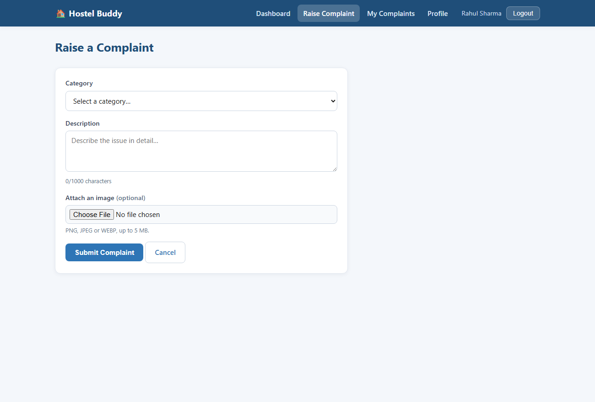
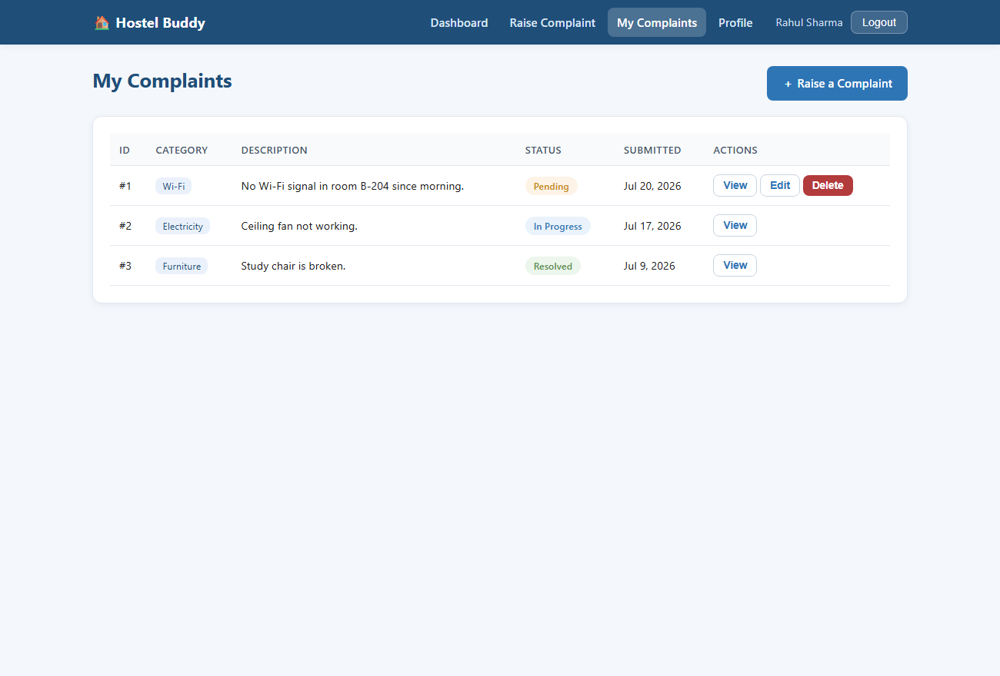
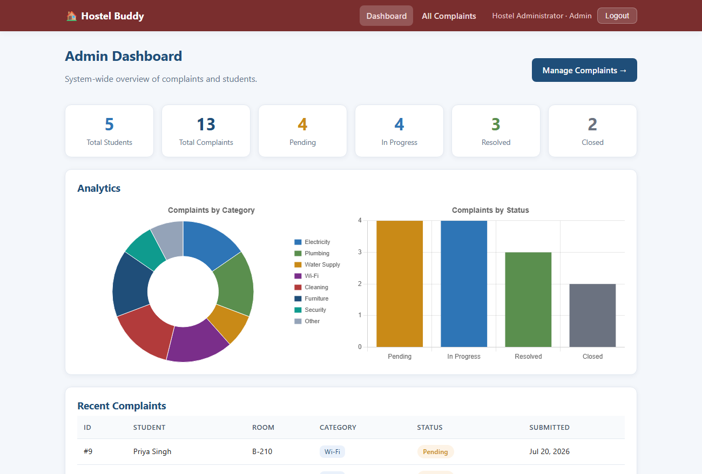
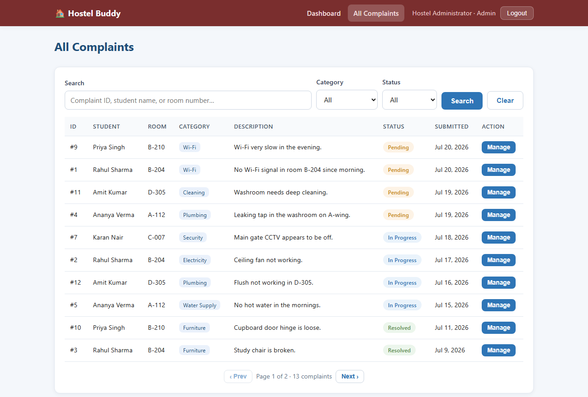

<meta charset="utf-8">
<title>Hostel Buddy — Software Architecture and Design Document</title>
<script>
  window.PagedConfig = { auto: true, after: () => { window.__PAGED_DONE = true; } };
</script>
<style>
  :root{
    --ink:#1a1a1a; --muted:#555; --line:#bcbcbc; --soft:#e7e7e7;
    --accent:#1f4e79; --accent2:#2e75b6;
  }
  @page{
    size: A4;
    margin: 22mm 18mm 20mm 18mm;
    @top-right{ content: string(doctitle); font-family: Georgia, serif; font-size: 8.5pt; color:#777; }
    @bottom-center{ content: "Page " counter(page); font-family: Georgia, serif; font-size: 9pt; color:#555; }
  }
  @page :first{ @top-right{ content: none; } @bottom-center{ content: none; } }
  html{ font-family: Georgia, "Times New Roman", serif; color:var(--ink); font-size:10.5pt; line-height:1.5; }
  body{ margin:0; }
  h1,h2,h3,h4,h5{ font-family:"Segoe UI", Arial, sans-serif; color:var(--accent); line-height:1.25; }
  h1{ font-size:18pt; string-set: doctitle "Hostel Buddy — SADD v1.0"; }
  h2{ font-size:14.5pt; margin-top:1.3em; border-bottom:2px solid var(--soft); padding-bottom:3px; break-after:avoid; }
  h3{ font-size:12pt; margin-top:1em; break-after:avoid; }
  h4{ font-size:10.8pt; margin-top:.85em; color:var(--accent2); break-after:avoid; }
  h5{ font-size:10.2pt; margin-top:.7em; color:#444; break-after:avoid; }
  p{ margin:.45em 0; text-align:justify; }
  ul,ol{ margin:.35em 0 .55em 0; padding-left:1.35em; }
  li{ margin:.18em 0; }
  code{ font-family:Consolas,monospace; font-size:9pt; background:#f2f2f2; padding:0 3px; border-radius:3px; }
  table{ border-collapse:collapse; width:100%; margin:.55em 0; font-size:9.2pt; }
  th,td{ border:1px solid var(--line); padding:4px 7px; text-align:left; vertical-align:top; }
  th{ background:var(--accent); color:#fff; font-family:"Segoe UI",Arial,sans-serif; font-weight:600; }
  tr:nth-child(even) td{ background:#f6f8fb; }
  figure{ margin:.9em 0; break-inside:avoid; text-align:center; }
  figure svg{ max-width:100%; height:auto; border:1px solid var(--soft); background:#fff; }
  figure img{ max-width:100%; max-height:104mm; width:auto; border:1px solid var(--soft); border-radius:4px; }
  figcaption{ font-size:8.8pt; color:var(--muted); margin-top:4px; font-style:italic; }
  .break{ break-before:page; }
  .avoid{ break-inside:avoid; }
  .rationale{
    background:#f4f8fc; border-left:4px solid var(--accent2); padding:8px 12px; margin:.7em 0;
    font-size:9.6pt; break-inside:avoid;
  }
  .rationale b{ color:var(--accent); }
  .req{ font-family:Consolas,monospace; font-weight:bold; color:var(--accent); font-size:9pt; }
  .note{ font-size:9.4pt; color:var(--muted); }

  /* Cover */
  .cover{ height:247mm; display:flex; flex-direction:column; align-items:center; justify-content:center; text-align:center; }
  .cover .kicker{ font-family:"Segoe UI",Arial,sans-serif; letter-spacing:2.5px; text-transform:uppercase; color:var(--muted); font-size:10.5pt; }
  .cover .title{ font-family:"Segoe UI",Arial,sans-serif; font-size:42pt; font-weight:700; color:var(--accent); margin:6px 0 2px; }
  .cover .subtitle{ font-size:12.5pt; color:var(--muted); margin-bottom:22px; }
  .cover .ver{ font-family:"Segoe UI",Arial,sans-serif; font-size:12.5pt; color:var(--accent2); border:1px solid var(--accent2); border-radius:20px; padding:4px 18px; }
  .cover .meta{ margin-top:30px; font-size:11.5pt; line-height:1.85; }
  .cover .meta b{ color:var(--accent); }
  .rule{ width:120px; height:4px; background:var(--accent2); margin:14px auto 0; border-radius:2px; }

  /* TOC */
  .toc h2{ border:none; }
  .toc ul{ list-style:none; padding-left:0; margin:0; }
  .toc .lvl1{ font-family:"Segoe UI",Arial,sans-serif; font-weight:600; margin-top:7px; border-bottom:none; }
  .toc .lvl2{ padding-left:1.5em; font-size:9.6pt; border-bottom:1px dotted #d8d8d8; padding-bottom:1px; }
  .toc a{ color:var(--ink); text-decoration:none; display:flex; justify-content:space-between; align-items:baseline; gap:6px; }
  .toc a::after{ content: target-counter(attr(href), page); color:var(--muted); white-space:nowrap; }
</style>

<!-- ============================ COVER ============================ -->
<section class="cover">
  <div class="kicker">Software Architecture and Design Document</div>
  <div class="title">Hostel&nbsp;Buddy</div>
  <div class="subtitle">Smart Hostel Complaint Management System</div>
  <div class="rule"></div>
  <div class="ver" style="margin-top:24px;">Version 1.0</div>
  <div class="meta">
    <div><b>Prepared by:</b> Group 19</div>
    <div>Pranjal Tyagi &middot; Dinesh Saini &middot; Ajinkya &middot; Saurabh &middot; Vijay</div>
    <div style="margin-top:14px;">Department of Computer Science and Engineering</div>
    <div><b>IIIT Kottayam</b></div>
    <div style="margin-top:14px;">5 August 2026</div>
  </div>
</section>

<!-- ============================ REVISION HISTORY ============================ -->
<section class="break">
  <h2 id="rev">Revision History</h2>
  <table>
    <tr><th style="width:24%">Name</th><th style="width:18%">Date</th><th>Reason for Change</th><th style="width:12%">Version</th></tr>
    <tr><td>Group 19</td><td>5 August 2026</td><td>Initial release of the Software Architecture and Design Document, derived from the approved SRS v1.0.</td><td>1.0</td></tr>
  </table>

  <h3 id="team">Group 19 — Team Members</h3>
  <table>
    <tr><th style="width:60px">#</th><th>Member Name</th><th>Roll Number</th></tr>
    <tr><td>1</td><td>Pranjal Tyagi</td><td>2024BCD0053</td></tr>
    <tr><td>2</td><td>Dinesh Saini</td><td>2024BCD0033</td></tr>
    <tr><td>3</td><td>Ajinkya</td><td>2024BCS0173</td></tr>
    <tr><td>4</td><td>Saurabh</td><td>2024BCS0185</td></tr>
    <tr><td>5</td><td>Vijay</td><td>2024BCS0249</td></tr>
  </table>
</section>

<!-- ============================ TOC ============================ -->
<section class="break toc">
  <h2>Table of Contents</h2>
  <ul>
    <li class="lvl1"><a href="#rev">Revision History</a></li>
    <li class="lvl1"><a href="#s1">1. Introduction</a></li>
    <li class="lvl2"><a href="#s1-1">1.1 Purpose</a></li>
    <li class="lvl2"><a href="#s1-2">1.2 Scope</a></li>
    <li class="lvl2"><a href="#s1-3">1.3 Intended Audience</a></li>
    <li class="lvl2"><a href="#s1-4">1.4 References</a></li>
    <li class="lvl2"><a href="#s1-5">1.5 Definitions and Acronyms</a></li>
    <li class="lvl1"><a href="#s2">2. Architectural Overview</a></li>
    <li class="lvl2"><a href="#s2-1">2.1 Architectural Goals</a></li>
    <li class="lvl2"><a href="#s2-2">2.2 Architectural Style</a></li>
    <li class="lvl2"><a href="#s2-3">2.3 Design Principles</a></li>
    <li class="lvl2"><a href="#s2-4">2.4 Technology Stack</a></li>
    <li class="lvl2"><a href="#s2-5">2.5 Design Rationale</a></li>
    <li class="lvl1"><a href="#s3">3. System Context</a></li>
    <li class="lvl2"><a href="#s3-1">3.1 Context Diagram</a></li>
    <li class="lvl2"><a href="#s3-2">3.2 External Systems</a></li>
    <li class="lvl2"><a href="#s3-3">3.3 High-Level Data Flow</a></li>
    <li class="lvl1"><a href="#s4">4. Module Identification and Design</a></li>
    <li class="lvl2"><a href="#s4-1">4.1 Module Identification</a></li>
    <li class="lvl2"><a href="#s4-2">4.2 Functional Requirement to Module Mapping</a></li>
    <li class="lvl2"><a href="#s4-3">4.3 Module Decomposition</a></li>
    <li class="lvl2"><a href="#s4-4">4.4 Module Description</a></li>
    <li class="lvl2"><a href="#s4-5">4.5 Module Interaction</a></li>
    <li class="lvl2"><a href="#s4-6">4.6 Package Diagram</a></li>
    <li class="lvl1"><a href="#s5">5. Interface Design</a></li>
    <li class="lvl2"><a href="#s5-1">5.1 User Interface Overview</a></li>
    <li class="lvl2"><a href="#s5-2">5.2 Module Interfaces</a></li>
    <li class="lvl2"><a href="#s5-3">5.3 External Interfaces</a></li>
    <li class="lvl2"><a href="#s5-4">5.4 Communication Interfaces</a></li>
    <li class="lvl1"><a href="#s6">6. Database Design</a></li>
    <li class="lvl2"><a href="#s6-1">6.1 Database Design Overview</a></li>
    <li class="lvl2"><a href="#s6-2">6.2 ER Diagram</a></li>
    <li class="lvl2"><a href="#s6-3">6.3 Entity Description</a></li>
    <li class="lvl2"><a href="#s6-4">6.4 Data Dictionary</a></li>
    <li class="lvl2"><a href="#s6-5">6.5 Database Constraints</a></li>
    <li class="lvl2"><a href="#s6-6">6.6 Normalization</a></li>
    <li class="lvl1"><a href="#s7">7. Detailed Design</a></li>
    <li class="lvl2"><a href="#s7-1">7.1 Object-Oriented Design Overview</a></li>
    <li class="lvl2"><a href="#s7-2">7.2 Class Diagram</a></li>
    <li class="lvl2"><a href="#s7-3">7.3 Class Description</a></li>
    <li class="lvl2"><a href="#s7-4">7.4 Sequence Diagrams</a></li>
    <li class="lvl2"><a href="#s7-5">7.5 Activity Diagram</a></li>
    <li class="lvl2"><a href="#s7-6">7.6 State Diagram</a></li>
    <li class="lvl1"><a href="#s8">8. User Interface Design</a></li>
    <li class="lvl2"><a href="#s8-1">8.1 UI Design Principles</a></li>
    <li class="lvl2"><a href="#s8-2">8.2 Wireframes</a></li>
    <li class="lvl2"><a href="#s8-3">8.3 Navigation Flow</a></li>
    <li class="lvl1"><a href="#s9">9. Security Design</a></li>
    <li class="lvl2"><a href="#s9-1">9.1 Security Requirements</a></li>
    <li class="lvl2"><a href="#s9-2">9.2 Authentication</a></li>
    <li class="lvl2"><a href="#s9-3">9.3 Authorization</a></li>
    <li class="lvl2"><a href="#s9-4">9.4 Data Security</a></li>
    <li class="lvl2"><a href="#s9-5">9.5 Input Validation</a></li>
    <li class="lvl1"><a href="#s10">10. Error Handling</a></li>
    <li class="lvl2"><a href="#s10-1">10.1 Error Handling Strategy</a></li>
    <li class="lvl1"><a href="#s11">11. Deployment Design</a></li>
    <li class="lvl2"><a href="#s11-1">11.1 Deployment Overview</a></li>
    <li class="lvl2"><a href="#s11-2">11.2 Deployment Diagram</a></li>
    <li class="lvl2"><a href="#s11-3">11.3 Hardware Requirements</a></li>
    <li class="lvl2"><a href="#s11-4">11.4 Software Requirements</a></li>
    <li class="lvl2"><a href="#s11-5">11.5 Installation Requirements</a></li>
    <li class="lvl2"><a href="#s11-6">11.6 Third-party Services</a></li>
    <li class="lvl1"><a href="#s12">12. Traceability Matrix</a></li>
    <li class="lvl2"><a href="#s12-1">12.1 Requirement Mapping</a></li>
    <li class="lvl1"><a href="#s13">13. Assumptions and Limitations</a></li>
    <li class="lvl2"><a href="#s13-1">13.1 Assumptions</a></li>
    <li class="lvl2"><a href="#s13-2">13.2 Constraints</a></li>
    <li class="lvl2"><a href="#s13-3">13.3 Future Enhancements</a></li>
    <li class="lvl1"><a href="#checklist">Submission Checklist</a></li>
    <li class="lvl1"><a href="#appA">Appendix A — Glossary</a></li>
    <li class="lvl1"><a href="#appB">Appendix B — API Specifications</a></li>
    <li class="lvl1"><a href="#appC">Appendix C — Additional UML Diagrams</a></li>
    <li class="lvl1"><a href="#appD">Appendix D — Design Decisions</a></li>
    <li class="lvl1"><a href="#appE">Appendix E — Version History</a></li>
  </ul>
</section>

<!-- ============================ 1. INTRODUCTION ============================ -->
<section class="break">
  <h2 id="s1">1. Introduction</h2>

  <h3 id="s1-1">1.1 Purpose</h3>
  <p>This Software Architecture and Design Document (SADD) describes <b>how</b> the Hostel Buddy system is designed and implemented. It is the direct successor to the approved <em>Software Requirements Specification (SRS) v1.0</em>, which defined <b>what</b> the system must do.</p>
  <p>Where the SRS states requirements in terms of externally observable behaviour (numbered <span class="req">REQ-1</span>…<span class="req">REQ-41</span>), this document translates each of those requirements into concrete architectural decisions: the layers of the system, the software modules and their responsibilities, the database schema, the classes and their interactions, and the deployment topology. Section 12 provides a traceability matrix proving that every functional requirement in the SRS is realised by at least one design element.</p>
  <p>The document also records the <em>reasoning</em> behind each decision through the Design Rationale sections, so that a future maintainer can understand not only the shape of the system but why it took that shape.</p>

  <h3 id="s1-2">1.2 Scope</h3>
  <p><b>Hostel Buddy</b> is a three-tier web application that replaces a hostel's paper complaint register with a digital, searchable and trackable platform. Students register, raise maintenance complaints under a fixed set of categories with an optional photograph, and follow those complaints through the lifecycle <em>Pending → In Progress → Resolved → Closed</em>. A single administrator reviews every complaint, searches and filters them, advances their status and records remarks, and views analytics summarising complaint activity.</p>
  <p>This document covers the complete design of Version 1.0: the presentation, application and data tiers; all four functional modules (Authentication, User Management, Complaint Management, Dashboard &amp; Analytics); the supporting cross-cutting infrastructure (security, upload, error handling); and the single-node deployment model.</p>
  <p><b>Out of scope</b> (deferred, per SRS §8): email and push notifications, a separate maintenance-staff role, complaint ratings, QR-code room identification, a native mobile application, AI-based categorisation and multi-hostel support. The architecture nevertheless leaves defined extension points for these, described in §13.3.</p>

  <h3 id="s1-3">1.3 Intended Audience</h3>
  <table>
    <tr><th style="width:26%">Reader</th><th>How to use this document</th></tr>
    <tr><td><b>Developers</b></td><td>Primary implementation reference. Read §4 (modules), §6 (database), §7 (classes and interactions) before writing code.</td></tr>
    <tr><td><b>Testers</b></td><td>Use §12 (traceability matrix) to derive test cases, and §7.4 sequence diagrams to understand expected message flows and failure paths.</td></tr>
    <tr><td><b>Project Guide / Evaluators</b></td><td>Read §1–§3 for context, then the Design Rationale boxes throughout, which justify every significant decision.</td></tr>
    <tr><td><b>Maintainers</b></td><td>Read §2.3 (design principles), §4.3 (decomposition) and Appendix D (design decisions) to understand where a change belongs and what it will affect.</td></tr>
  </table>

  <h3 id="s1-4">1.4 References</h3>
  <table>
    <tr><th style="width:60px">#</th><th>Title</th><th style="width:32%">Source / Version</th></tr>
    <tr><td>R1</td><td>Hostel Buddy — Software Requirements Specification</td><td>Group 19, v1.0 (approved)</td></tr>
    <tr><td>R2</td><td>IEEE Std 830-1998 — Recommended Practice for Software Requirements Specifications</td><td>IEEE, 1998</td></tr>
    <tr><td>R3</td><td>IEEE Std 1016-2009 — Standard for Information Technology, Systems Design, Software Design Descriptions</td><td>IEEE, 2009</td></tr>
    <tr><td>R4</td><td>Unified Modeling Language (UML) Specification</td><td>OMG UML 2.5.1</td></tr>
    <tr><td>R5</td><td>Express.js Framework Documentation</td><td>Express 4.x</td></tr>
    <tr><td>R6</td><td>Node.js API Documentation — <code>node:sqlite</code> module</td><td>Node.js 22.5+ / 24.x</td></tr>
    <tr><td>R7</td><td>RFC 7519 — JSON Web Token (JWT)</td><td>IETF, 2015</td></tr>
    <tr><td>R8</td><td>OWASP Top 10 — Web Application Security Risks</td><td>OWASP, 2021</td></tr>
  </table>

  <h3 id="s1-5">1.5 Definitions and Acronyms</h3>
  <table>
    <tr><th style="width:22%">Term</th><th>Definition</th></tr>
    <tr><td><b>SADD</b></td><td>Software Architecture and Design Document — this document.</td></tr>
    <tr><td><b>SRS</b></td><td>Software Requirements Specification — the approved requirements baseline (R1).</td></tr>
    <tr><td><b>API</b></td><td>Application Programming Interface; here, the JSON/HTTP interface exposed by the application tier.</td></tr>
    <tr><td><b>REST</b></td><td>Representational State Transfer — the architectural style of the HTTP API.</td></tr>
    <tr><td><b>JWT</b></td><td>JSON Web Token — a signed, self-contained token carrying the user's identity and role.</td></tr>
    <tr><td><b>RBAC</b></td><td>Role-Based Access Control — permissions granted according to the user's role.</td></tr>
    <tr><td><b>DAL / Repository</b></td><td>Data Access Layer — the only layer permitted to execute SQL.</td></tr>
    <tr><td><b>DTO</b></td><td>Data Transfer Object — a plain object carrying data across a layer boundary.</td></tr>
    <tr><td><b>CRUD</b></td><td>Create, Read, Update, Delete.</td></tr>
    <tr><td><b>Middleware</b></td><td>A function in the Express pipeline that processes a request before it reaches a controller.</td></tr>
    <tr><td><b>CSP</b></td><td>Content Security Policy — an HTTP header restricting which resources a page may load.</td></tr>
    <tr><td><b>WAL</b></td><td>Write-Ahead Logging — a SQLite journalling mode improving read concurrency.</td></tr>
    <tr><td><b>bcrypt</b></td><td>An adaptive password-hashing function with a configurable work factor.</td></tr>
    <tr><td><b>Complaint Lifecycle</b></td><td>The fixed state sequence Pending → In Progress → Resolved → Closed.</td></tr>
  </table>
</section>

<!-- ============================ 2. ARCHITECTURAL OVERVIEW ============================ -->
<section class="break">
  <h2 id="s2">2. Architectural Overview</h2>

  <h3 id="s2-1">2.1 Architectural Goals</h3>
  <p>The architecture is shaped by the non-functional requirements of the SRS (<span class="req">NFR-1</span>…<span class="req">NFR-13</span>). Each goal below states the quality attribute, the driving requirement and the architectural mechanism that delivers it.</p>
  <table>
    <tr><th style="width:16%">Goal</th><th style="width:14%">Driven by</th><th>Architectural mechanism</th></tr>
    <tr><td><b>Security</b></td><td>NFR-8…NFR-13</td><td>bcrypt password hashing; stateless JWT authentication; role guards at the route layer plus ownership checks in the service layer; server-side validation; security headers and a strict Content Security Policy.</td></tr>
    <tr><td><b>Maintainability</b></td><td>NFR (Quality)</td><td>Four independent feature modules, each internally split into routes → controller → service → repository. A change to persistence touches only repositories.</td></tr>
    <tr><td><b>Scalability</b></td><td>NFR-4</td><td>A stateless application tier (no server-side session store) so instances can be replicated behind a load balancer; indexed, paginated queries; aggregation pushed into SQL.</td></tr>
    <tr><td><b>Performance</b></td><td>NFR-1…NFR-3</td><td>Indexes on the three hot query paths; <code>GROUP BY</code> aggregation instead of in-memory counting; bounded page sizes; static assets served directly.</td></tr>
    <tr><td><b>Reliability</b></td><td>NFR-5…NFR-7</td><td>Durable relational storage with WAL journalling; database-level <code>CHECK</code> constraints as a data-integrity backstop; one central error handler so no failure escapes unhandled.</td></tr>
    <tr><td><b>Portability</b></td><td>NFR (Quality)</td><td>Browser-based client requiring no installation; a database driver built into the runtime, so the system builds without a native compiler toolchain.</td></tr>
    <tr><td><b>Testability</b></td><td>—</td><td>Business rules concentrated in services (callable without HTTP) and a documented REST contract enabling black-box integration tests.</td></tr>
  </table>

  <h3 id="s2-2">2.2 Architectural Style</h3>

  <h4>2.2.1 Selected Style</h4>
  <p>Hostel Buddy adopts a <b>three-tier client–server architecture</b> whose application tier is internally organised as a <b>layered (n-tier) architecture</b>, exposing a <b>RESTful API</b> consumed by a thin browser client.</p>

  <h5>Reason for Selection</h5>
  <ul>
    <li><b>The problem is data-centric and CRUD-dominated.</b> The system's essential complexity is validating, storing, retrieving and reporting on complaint records — precisely the shape a layered architecture handles best.</li>
    <li><b>Requirements demand a strict authority boundary.</b> <span class="req">REQ-18</span>/<span class="req">REQ-19</span> (edit only while Pending) and <span class="req">REQ-20</span> (no cross-student access) must hold regardless of which client calls. A layered design lets these invariants live in one server-side layer that every path must traverse.</li>
    <li><b>Two distinct clients share one behaviour set.</b> Students and the administrator use different screens but the same rules; a REST API with role-based authorisation serves both without duplicating logic.</li>
    <li><b>Team scale and skills.</b> A four-member team benefits from a familiar, well-documented structure with clear file-level ownership rather than a distributed or event-driven design.</li>
  </ul>

  <h5>Advantages</h5>
  <ul>
    <li><b>Separation of concerns</b> — each layer has exactly one reason to change; SQL exists in one layer only.</li>
    <li><b>Substitutability</b> — the database can be replaced (SQLite → PostgreSQL) by rewriting repositories alone; the browser client could be replaced by a mobile app with no server change.</li>
    <li><b>Security by construction</b> — every request passes the same authentication and authorisation middleware; rules cannot be bypassed by adding a new route.</li>
    <li><b>Testability</b> — services are plain functions independent of HTTP, and the API is testable end-to-end.</li>
    <li><b>Horizontal scalability</b> — statelessness removes server affinity.</li>
  </ul>

  <h5>Limitations</h5>
  <ul>
    <li><b>Layer traversal overhead</b> — a trivial read still passes route → controller → service → repository. Accepted: the indirection is a few function calls, negligible against I/O.</li>
    <li><b>Some boilerplate</b> — each module repeats a four-file pattern. Accepted as the cost of uniformity; it makes the codebase predictable.</li>
    <li><b>Single deployable unit</b> — the whole application scales as one. Accepted for v1; modules are cleanly separated, so extraction into services is possible later.</li>
    <li><b>No independent module deployment</b> — unlike microservices, a change to any module requires redeploying the application. Acceptable at this scale and release cadence.</li>
  </ul>

  <h5>Architecture Diagram</h5>
  <figure>
    <svg viewBox="0 0 860 620" xmlns="http://www.w3.org/2000/svg" font-family="Segoe UI, Arial, sans-serif">
      <defs>
        <marker id="ar" markerWidth="9" markerHeight="9" refX="7.5" refY="3" orient="auto" markerUnits="strokeWidth">
          <path d="M0,0 L7.5,3 L0,6 Z" fill="#444"/>
        </marker>
      </defs>

      <!-- PRESENTATION TIER -->
      <rect x="30" y="24" width="800" height="118" rx="8" fill="#eef4fb" stroke="#2e75b6" stroke-width="1.6"/>
      <text x="44" y="44" font-size="11" font-weight="700" fill="#1f4e79">PRESENTATION TIER — Browser Client (static HTML / CSS / vanilla JS)</text>
      <g font-size="10">
        <rect x="52" y="56" width="132" height="34" rx="5" fill="#fff" stroke="#9dbfe0"/><text x="118" y="77" text-anchor="middle">Student Pages</text>
        <rect x="196" y="56" width="132" height="34" rx="5" fill="#fff" stroke="#9dbfe0"/><text x="262" y="77" text-anchor="middle">Admin Pages</text>
        <rect x="340" y="56" width="120" height="34" rx="5" fill="#fff" stroke="#9dbfe0"/><text x="400" y="77" text-anchor="middle">Auth Pages</text>
        <rect x="472" y="56" width="116" height="34" rx="5" fill="#f6f9fd" stroke="#9dbfe0"/><text x="530" y="77" text-anchor="middle">Chart.js</text>
        <rect x="600" y="56" width="212" height="34" rx="5" fill="#dfeaf7" stroke="#2e75b6"/><text x="706" y="70" text-anchor="middle" font-weight="700" font-size="9.5">api.js — single network boundary</text><text x="706" y="83" text-anchor="middle" font-size="8.5" fill="#555">attaches JWT · handles 401</text>
      </g>
      <text x="52" y="112" font-size="9" fill="#555">No business rules reside in this tier. It renders data and issues API calls only.</text>
      <text x="52" y="128" font-size="9" fill="#555">Session token held in browser localStorage.</text>

      <!-- arrow down -->
      <line x1="430" y1="142" x2="430" y2="176" stroke="#444" stroke-width="1.6" marker-end="url(#ar)"/>
      <text x="440" y="163" font-size="9.5" fill="#333">JSON over HTTP(S) — Authorization: Bearer &lt;JWT&gt;</text>

      <!-- APPLICATION TIER -->
      <rect x="30" y="180" width="800" height="300" rx="8" fill="#fbfcfe" stroke="#1f4e79" stroke-width="1.8"/>
      <text x="44" y="200" font-size="11" font-weight="700" fill="#1f4e79">APPLICATION TIER — Node.js / Express (stateless)</text>

      <!-- cross-cutting middleware -->
      <rect x="48" y="210" width="764" height="42" rx="6" fill="#fdf1e6" stroke="#c0733f"/>
      <text x="58" y="226" font-size="9.5" font-weight="700" fill="#8a4b1e">Cross-cutting Middleware Pipeline</text>
      <g font-size="8.6" fill="#6b4321">
        <text x="62" y="243">securityHeaders (helmet + CSP)</text>
        <text x="212" y="243">rateLimiter</text>
        <text x="282" y="243">bodyParser</text>
        <text x="352" y="243">requestLogger</text>
        <text x="440" y="243">requireAuth</text>
        <text x="512" y="243">requireRole</text>
        <text x="588" y="243">uploadImage</text>
        <text x="668" y="243">errorHandler</text>
      </g>

      <!-- layers -->
      <text x="48" y="272" font-size="9.5" font-weight="700" fill="#1f4e79">Layered structure, applied within every feature module</text>
      <g font-size="10">
        <rect x="48" y="280" width="764" height="30" rx="5" fill="#eaf1fb" stroke="#2e75b6"/><text x="60" y="300" font-weight="600">Routes</text><text x="150" y="300" font-size="9" fill="#444">URL + verb → handler; declares which middleware guards the endpoint</text>
        <rect x="48" y="316" width="764" height="30" rx="5" fill="#eaf1fb" stroke="#2e75b6"/><text x="60" y="336" font-weight="600">Controllers</text><text x="150" y="336" font-size="9" fill="#444">Parse HTTP request, invoke service, shape HTTP response (thin)</text>
        <rect x="48" y="352" width="764" height="34" rx="5" fill="#dfeaf7" stroke="#1f4e79" stroke-width="1.5"/><text x="60" y="366" font-weight="700">Services</text><text x="150" y="366" font-size="9" fill="#333">ALL business rules: validation, complaint lifecycle, ownership &amp; Pending-only guards</text><text x="150" y="379" font-size="8.5" fill="#666">Knows nothing about HTTP or SQL — the authority boundary of the system</text>
        <rect x="48" y="392" width="764" height="30" rx="5" fill="#eaf1fb" stroke="#2e75b6"/><text x="60" y="412" font-weight="600">Repositories</text><text x="150" y="412" font-size="9" fill="#444">The only layer that executes SQL; returns plain objects</text>
      </g>

      <!-- feature modules -->
      <g font-size="9.5">
        <rect x="48" y="430" width="182" height="34" rx="5" fill="#ecf6ec" stroke="#5a8f4e"/><text x="139" y="451" text-anchor="middle">Authentication</text>
        <rect x="240" y="430" width="182" height="34" rx="5" fill="#ecf6ec" stroke="#5a8f4e"/><text x="331" y="451" text-anchor="middle">User Management</text>
        <rect x="432" y="430" width="182" height="34" rx="5" fill="#ecf6ec" stroke="#5a8f4e"/><text x="523" y="451" text-anchor="middle">Complaint Management</text>
        <rect x="624" y="430" width="188" height="34" rx="5" fill="#ecf6ec" stroke="#5a8f4e"/><text x="718" y="451" text-anchor="middle">Dashboard &amp; Analytics</text>
      </g>

      <!-- arrow down -->
      <line x1="430" y1="480" x2="430" y2="512" stroke="#444" stroke-width="1.6" marker-end="url(#ar)"/>
      <text x="440" y="500" font-size="9.5" fill="#333">SQL (prepared statements)</text>

      <!-- DATA TIER -->
      <rect x="30" y="516" width="800" height="86" rx="8" fill="#f7f7f7" stroke="#666" stroke-width="1.6"/>
      <text x="44" y="536" font-size="11" font-weight="700" fill="#333">DATA TIER</text>
      <g font-size="10">
        <rect x="60" y="548" width="330" height="40" rx="5" fill="#fff" stroke="#999"/>
        <text x="225" y="565" text-anchor="middle" font-weight="600">Relational Database (SQLite / node:sqlite)</text>
        <text x="225" y="580" text-anchor="middle" font-size="8.6" fill="#555">users · complaints · indexes · CHECK constraints · WAL</text>
        <rect x="410" y="548" width="330" height="40" rx="5" fill="#fff" stroke="#999"/>
        <text x="575" y="565" text-anchor="middle" font-weight="600">File Storage — /uploads</text>
        <text x="575" y="580" text-anchor="middle" font-size="8.6" fill="#555">complaint images, randomised filenames</text>
      </g>
    </svg>
    <figcaption>Figure 2.1 — Layered three-tier architecture of Hostel Buddy.</figcaption>
  </figure>

  <div class="rationale">
    <b>Design Rationale.</b> A layered architecture was chosen over the two realistic alternatives. A <em>monolithic MVC application with server-rendered pages</em> would have been marginally faster to build but would couple presentation to business logic, making the planned mobile client (§13.3) impossible without rewriting the server. A <em>microservice architecture</em> would provide independent deployability the project does not need, while adding network partitioning, distributed transactions and operational overhead that a four-person team cannot justify for a single hostel. The layered monolith with a REST boundary captures the main benefit of both — a reusable, client-agnostic API with enforced internal separation — at the cost of only per-module boilerplate. The single most important consequence is that <b>business rules live in the service layer</b>: because <span class="req">REQ-18</span>–<span class="req">REQ-20</span> are invariants rather than transport concerns, placing them in services guarantees they hold for every caller, present or future.
  </div>

  <h3 id="s2-3">2.3 Design Principles</h3>
  <table>
    <tr><th style="width:24%">Principle</th><th>Application in Hostel Buddy</th></tr>
    <tr><td><b>Modularity</b></td><td>The system is decomposed into four feature modules aligned with major functional responsibilities (not with screens or tables). Each is self-contained in its own directory with a uniform internal structure.</td></tr>
    <tr><td><b>High cohesion</b></td><td>Every element inside a module serves one responsibility: the Complaint module owns complaint creation, editing, lifecycle transitions and retrieval — and nothing else.</td></tr>
    <tr><td><b>Low coupling</b></td><td>Modules interact only through published service functions, never by reaching into another module's repository or database tables. The Dashboard module, for example, composes counts exposed by the Complaint and User repositories rather than issuing its own joins across their tables.</td></tr>
    <tr><td><b>Separation of concerns</b></td><td>Transport (routes/controllers), policy (services) and persistence (repositories) are strictly separated. A controller contains no rule; a service contains no SQL.</td></tr>
    <tr><td><b>Single responsibility</b></td><td>Each file has one reason to change. <code>jwt.js</code> changes only if the token scheme changes; <code>upload.js</code> only if file handling changes.</td></tr>
    <tr><td><b>Defence in depth</b></td><td>Critical rules are enforced at more than one level: role guards at routes <em>and</em> ownership checks in services; enum validation in services <em>and</em> <code>CHECK</code> constraints in the schema.</td></tr>
    <tr><td><b>Don't repeat yourself (DRY)</b></td><td>Cross-cutting behaviour is centralised: one error handler, one authentication middleware, one client-side network wrapper, one source of truth for categories/statuses/roles (<code>constants.js</code>).</td></tr>
    <tr><td><b>Reuse</b></td><td>The same REST API serves both user roles and would serve a future mobile client unchanged. Shared helpers (validators, JWT, UI utilities) are used across modules and pages.</td></tr>
    <tr><td><b>Fail fast, fail safe</b></td><td>Invalid input is rejected at the earliest layer that can judge it; unexpected errors are converted into a uniform response that never leaks internals; the server refuses to start in production with insecure configuration.</td></tr>
    <tr><td><b>Configuration over hard-coding</b></td><td>Ports, secrets, credentials and paths come from environment variables via a single typed configuration module; no secret appears in source.</td></tr>
  </table>

  <h3 id="s2-4">2.4 Technology Stack</h3>
  <table>
    <tr><th style="width:19%">Layer</th><th style="width:29%">Technology</th><th>Reason for selection</th></tr>
    <tr><td>Presentation</td><td>HTML5, CSS3, vanilla JavaScript (ES2020)</td><td>No build step or framework runtime; the UI is small and form-driven. Keeps the client trivially deployable and readable by every team member.</td></tr>
    <tr><td>Charting</td><td>Chart.js 4 (served locally)</td><td>Satisfies <span class="req">REQ-36</span> (category distribution chart) with minimal code. Vendored rather than loaded from a CDN so the demo works offline and the strict CSP needs no external origin.</td></tr>
    <tr><td>Application runtime</td><td>Node.js 22.5+ (24.x used)</td><td>Single language across client and server; mature HTTP ecosystem; ships the database driver in the runtime itself.</td></tr>
    <tr><td>Web framework</td><td>Express 4</td><td>Minimal and unopinionated, which allows the explicit layering in §2.2 rather than imposing a competing structure. Its middleware pipeline maps directly onto the cross-cutting concerns.</td></tr>
    <tr><td>Database</td><td>SQLite via built-in <code>node:sqlite</code></td><td>Real SQL with constraints and indexes, zero configuration, single-file storage. Being built into Node it requires <b>no native compilation</b>, so any team member can clone and run without a C++ toolchain. Schema is written to remain PostgreSQL-compatible.</td></tr>
    <tr><td>Authentication</td><td><code>jsonwebtoken</code> (JWT, HS256)</td><td>Stateless tokens remove the session store, directly serving the scalability goal (<span class="req">NFR-4</span>).</td></tr>
    <tr><td>Password hashing</td><td><code>bcryptjs</code> (cost factor 10)</td><td>Adaptive, salted hashing as required by <span class="req">NFR-8</span>; pure-JS implementation avoids native builds.</td></tr>
    <tr><td>File upload</td><td><code>multer</code> 2.x</td><td>Standard multipart handling for <span class="req">REQ-12</span>, with built-in MIME-type filtering and size limits.</td></tr>
    <tr><td>HTTP security</td><td><code>helmet</code>, <code>express-rate-limit</code></td><td>Security headers and a Content Security Policy (<span class="req">NFR-11</span>/<span class="req">NFR-12</span>); brute-force mitigation on authentication endpoints.</td></tr>
    <tr><td>Configuration</td><td><code>dotenv</code></td><td>Keeps secrets out of source control and makes environment promotion (dev → production) a configuration change only.</td></tr>
    <tr><td>Version control</td><td>Git / GitHub</td><td>Phase-wise commit history documenting the incremental construction of the system.</td></tr>
  </table>

  <h3 id="s2-5">2.5 Design Rationale</h3>
  <p>The following table summarises the architecture-level decisions, the alternatives considered and the trade-offs consciously accepted. Detailed records are in Appendix D.</p>
  <table>
    <tr><th style="width:20%">Decision</th><th style="width:24%">Alternative considered</th><th>Justification and accepted trade-off</th></tr>
    <tr><td><b>Layered monolith with REST API</b></td><td>Server-rendered MVC; microservices</td><td>Gives a client-agnostic API and enforced internal separation without distributed-system complexity. Trade-off: the whole application scales as a unit.</td></tr>
    <tr><td><b>Business rules in the service layer</b></td><td>Rules in route handlers or controllers</td><td>A route-level check protects only that route; a service-level invariant holds for every caller. Trade-off: a small amount of indirection.</td></tr>
    <tr><td><b>Stateless JWT authentication</b></td><td>Server-side sessions with a session store</td><td>Removes shared state so instances replicate freely (<span class="req">NFR-4</span>). Trade-off: a token cannot be revoked before expiry; mitigated by a 24-hour lifetime.</td></tr>
    <tr><td><b>Relational database with enum <code>CHECK</code> constraints</b></td><td>Document store; application-only validation</td><td>The data is highly structured with a fixed vocabulary; constraints keep data valid even if application code is bypassed by a script. Trade-off: schema changes require migration.</td></tr>
    <tr><td><b>Built-in <code>node:sqlite</code> driver</b></td><td><code>better-sqlite3</code> (native module)</td><td>Eliminates the native build step that fails without Visual Studio build tools, so every team member can run the project. Trade-off: the module is marked experimental; isolation in the repository layer makes replacement cheap.</td></tr>
    <tr><td><b>Aggregation performed in SQL</b></td><td>Fetch rows and count in JavaScript</td><td>Keeps payloads small and uses the engine best suited to counting; measured at ~1&nbsp;ms for the full admin dashboard over 2,000 complaints. Trade-off: logic expressed in SQL rather than application code.</td></tr>
    <tr><td><b>Local filesystem for images</b></td><td>Cloud object storage (S3)</td><td>Simplest working solution for a single-node demo. Trade-off: images are not shared across replicas — documented as the first change required when scaling out.</td></tr>
    <tr><td><b>Single administrator role (no maintenance staff)</b></td><td>Three-role model with work assignment</td><td>Preserves the complete complaint workflow at a fraction of the complexity, as scoped by the SRS. Trade-off: no per-technician assignment or workload tracking.</td></tr>
  </table>
</section>

<!-- ============================ 3. SYSTEM CONTEXT ============================ -->
<section class="break">
  <h2 id="s3">3. System Context</h2>

  <h3 id="s3-1">3.1 Context Diagram</h3>
  <p>The context diagram establishes the system boundary: what lies inside Hostel Buddy, which external actors interact with it, and what information crosses the boundary.</p>
  <figure>
    <svg viewBox="0 0 840 470" xmlns="http://www.w3.org/2000/svg" font-family="Segoe UI, Arial, sans-serif">
      <defs>
        <marker id="c-ar" markerWidth="9" markerHeight="9" refX="7.5" refY="3" orient="auto" markerUnits="strokeWidth">
          <path d="M0,0 L7.5,3 L0,6 Z" fill="#555"/>
        </marker>
      </defs>

      <!-- central system -->
      <circle cx="420" cy="235" r="106" fill="#eef4fb" stroke="#1f4e79" stroke-width="2.4"/>
      <text x="420" y="222" text-anchor="middle" font-size="15" font-weight="700" fill="#1f4e79">Hostel Buddy</text>
      <text x="420" y="242" text-anchor="middle" font-size="10" fill="#333">Complaint Management</text>
      <text x="420" y="257" text-anchor="middle" font-size="10" fill="#333">System</text>

      <!-- Student actor -->
      <g stroke="#333" stroke-width="1.8" fill="none">
        <circle cx="88" cy="150" r="13" fill="#eaf1fb"/>
        <line x1="88" y1="163" x2="88" y2="200"/><line x1="66" y1="177" x2="110" y2="177"/>
        <line x1="88" y1="200" x2="70" y2="228"/><line x1="88" y1="200" x2="106" y2="228"/>
      </g>
      <text x="88" y="248" text-anchor="middle" font-size="12" font-weight="700">Student</text>

      <!-- Administrator actor -->
      <g stroke="#333" stroke-width="1.8" fill="none">
        <circle cx="752" cy="150" r="13" fill="#fdeeea"/>
        <line x1="752" y1="163" x2="752" y2="200"/><line x1="730" y1="177" x2="774" y2="177"/>
        <line x1="752" y1="200" x2="734" y2="228"/><line x1="752" y1="200" x2="770" y2="228"/>
      </g>
      <text x="752" y="248" text-anchor="middle" font-size="12" font-weight="700">Administrator</text>

      <!-- Student flows -->
      <path d="M126,188 Q250,150 316,196" fill="none" stroke="#2e75b6" stroke-width="1.5" marker-end="url(#c-ar)"/>
      <text x="196" y="150" font-size="8.8" fill="#1f4e79">registration / login credentials</text>
      <text x="196" y="162" font-size="8.8" fill="#1f4e79">complaint details + optional image</text>
      <text x="196" y="174" font-size="8.8" fill="#1f4e79">profile updates</text>

      <path d="M316,268 Q240,318 128,268" fill="none" stroke="#5a8f4e" stroke-width="1.5" marker-end="url(#c-ar)"/>
      <text x="150" y="330" font-size="8.8" fill="#2f6b2f">session token · complaint status</text>
      <text x="150" y="342" font-size="8.8" fill="#2f6b2f">admin remarks · resolution date</text>
      <text x="150" y="354" font-size="8.8" fill="#2f6b2f">personal statistics</text>

      <!-- Admin flows -->
      <path d="M714,188 Q590,150 524,196" fill="none" stroke="#c0733f" stroke-width="1.5" marker-end="url(#c-ar)"/>
      <text x="556" y="150" font-size="8.8" fill="#8a4b1e">login credentials</text>
      <text x="556" y="162" font-size="8.8" fill="#8a4b1e">search / filter criteria</text>
      <text x="556" y="174" font-size="8.8" fill="#8a4b1e">status change + remarks</text>

      <path d="M524,268 Q600,318 712,268" fill="none" stroke="#5a8f4e" stroke-width="1.5" marker-end="url(#c-ar)"/>
      <text x="560" y="330" font-size="8.8" fill="#2f6b2f">all complaints (paginated)</text>
      <text x="560" y="342" font-size="8.8" fill="#2f6b2f">student list · analytics</text>
      <text x="560" y="354" font-size="8.8" fill="#2f6b2f">category / status distribution</text>

      <!-- Internal stores (inside boundary, shown below) -->
      <g>
        <rect x="300" y="382" width="110" height="42" rx="5" fill="#fff" stroke="#666"/>
        <text x="355" y="399" text-anchor="middle" font-size="9" font-weight="600">Database</text>
        <text x="355" y="413" text-anchor="middle" font-size="8" fill="#555">users · complaints</text>
        <rect x="430" y="382" width="110" height="42" rx="5" fill="#fff" stroke="#666"/>
        <text x="485" y="399" text-anchor="middle" font-size="9" font-weight="600">File Storage</text>
        <text x="485" y="413" text-anchor="middle" font-size="8" fill="#555">complaint images</text>
      </g>
      <line x1="390" y1="340" x2="360" y2="380" stroke="#777" stroke-width="1.2" stroke-dasharray="4,3"/>
      <line x1="452" y1="340" x2="482" y2="380" stroke="#777" stroke-width="1.2" stroke-dasharray="4,3"/>
      <text x="420" y="446" text-anchor="middle" font-size="8.5" fill="#777" font-style="italic">Internal persistent stores (inside the system boundary — no external service dependency)</text>

      <!-- Web browser note -->
      <rect x="24" y="24" width="180" height="40" rx="5" fill="#f7f9fc" stroke="#aab8c8" stroke-dasharray="4,3"/>
      <text x="114" y="40" text-anchor="middle" font-size="9" font-weight="600" fill="#445">Web Browser</text>
      <text x="114" y="54" text-anchor="middle" font-size="8" fill="#667">access channel for both actors</text>
    </svg>
    <figcaption>Figure 3.1 — System Context Diagram.</figcaption>
  </figure>
  <div class="rationale">
    <b>Design Rationale.</b> The boundary is drawn to make Hostel Buddy <b>self-contained</b>: both the database and image storage sit inside it, and there is no dependency on any third-party service. This is deliberate — the SRS scopes v1.0 to a single hostel with notifications explicitly deferred, so introducing an external mail gateway or object store would add failure modes and credentials to manage without serving any current requirement. Only two human actors cross the boundary, and they are distinguished solely by role, which is why a single API with role-based authorisation is sufficient rather than two separate interfaces. The browser is shown as the access channel rather than an actor, because it carries no application logic of its own.
  </div>

  <h3 id="s3-2">3.2 External Systems</h3>
  <p>Hostel Buddy v1.0 integrates with <b>no external systems, third-party APIs or paid services</b>. All processing and storage occur within the deployed application and its own data stores. The only components outside the application process are infrastructure the system depends on rather than services it calls:</p>
  <table>
    <tr><th style="width:22%">External component</th><th style="width:16%">Type</th><th>Interaction</th></tr>
    <tr><td>Web browser</td><td>Client platform</td><td>Renders the interface; issues HTTP requests; stores the session token in <code>localStorage</code>; supplies image files from device storage or camera through the file-picker.</td></tr>
    <tr><td>Host operating system / filesystem</td><td>Platform service</td><td>Persists the database file and uploaded images.</td></tr>
    <tr><td>Network / TLS terminator</td><td>Infrastructure</td><td>Transports requests; in deployment, terminates HTTPS in front of the application (<span class="req">NFR-12</span>).</td></tr>
  </table>
  <p class="note">Planned future integrations — an SMTP gateway for email notification and a push-notification service — are identified in §13.3 together with the extension point at which they attach (a hook in the complaint service after a status transition).</p>

  <h3 id="s3-3">3.3 High-Level Data Flow</h3>
  <p>The diagram below traces how information moves from user input, through validation and business rules, into persistent storage, and back out as reports and status views.</p>
  <figure>
    <svg viewBox="0 0 850 420" xmlns="http://www.w3.org/2000/svg" font-family="Segoe UI, Arial, sans-serif">
      <defs>
        <marker id="d-ar" markerWidth="8" markerHeight="8" refX="6.8" refY="2.8" orient="auto" markerUnits="strokeWidth">
          <path d="M0,0 L6.8,2.8 L0,5.6 Z" fill="#444"/>
        </marker>
      </defs>
      <!-- row 1 : write path -->
      <text x="16" y="26" font-size="10.5" font-weight="700" fill="#1f4e79">WRITE PATH — raising or updating a complaint</text>
      <g font-size="9">
        <rect x="16" y="38" width="112" height="46" rx="5" fill="#eaf1fb" stroke="#2e75b6"/><text x="72" y="58" text-anchor="middle" font-weight="600">User Input</text><text x="72" y="72" text-anchor="middle" font-size="8" fill="#555">form + image</text>
        <rect x="152" y="38" width="112" height="46" rx="5" fill="#f7f7f7" stroke="#888"/><text x="208" y="58" text-anchor="middle" font-weight="600">Client check</text><text x="208" y="72" text-anchor="middle" font-size="8" fill="#555">fast feedback</text>
        <rect x="288" y="38" width="124" height="46" rx="5" fill="#fdf1e6" stroke="#c0733f"/><text x="350" y="53" text-anchor="middle" font-weight="600">Middleware</text><text x="350" y="66" text-anchor="middle" font-size="8" fill="#555">authenticate · role</text><text x="350" y="77" text-anchor="middle" font-size="8" fill="#555">store upload</text>
        <rect x="436" y="38" width="124" height="46" rx="5" fill="#dfeaf7" stroke="#1f4e79" stroke-width="1.4"/><text x="498" y="53" text-anchor="middle" font-weight="700">Service</text><text x="498" y="66" text-anchor="middle" font-size="8" fill="#333">validate · apply rules</text><text x="498" y="77" text-anchor="middle" font-size="8" fill="#333">force status=Pending</text>
        <rect x="584" y="38" width="112" height="46" rx="5" fill="#eaf1fb" stroke="#2e75b6"/><text x="640" y="58" text-anchor="middle" font-weight="600">Repository</text><text x="640" y="72" text-anchor="middle" font-size="8" fill="#555">prepared SQL</text>
        <rect x="720" y="38" width="114" height="46" rx="5" fill="#fff" stroke="#666"/><text x="777" y="58" text-anchor="middle" font-weight="600">Database</text><text x="777" y="72" text-anchor="middle" font-size="8" fill="#555">+ /uploads</text>
      </g>
      <g stroke="#444" stroke-width="1.3" marker-end="url(#d-ar)">
        <line x1="128" y1="61" x2="150" y2="61"/><line x1="264" y1="61" x2="286" y2="61"/>
        <line x1="412" y1="61" x2="434" y2="61"/><line x1="560" y1="61" x2="582" y2="61"/>
        <line x1="696" y1="61" x2="718" y2="61"/>
      </g>
      <text x="425" y="103" font-size="8.4" fill="#a12626" text-anchor="middle">Any rejection short-circuits here → central error handler → uniform JSON error { message, code } → user sees a clear message</text>

      <line x1="16" y1="120" x2="834" y2="120" stroke="#ddd"/>

      <!-- row 2 : read path -->
      <text x="16" y="146" font-size="10.5" font-weight="700" fill="#1f4e79">READ PATH — viewing complaints and dashboards</text>
      <g font-size="9">
        <rect x="16" y="158" width="114" height="46" rx="5" fill="#fff" stroke="#666"/><text x="73" y="178" text-anchor="middle" font-weight="600">Database</text><text x="73" y="192" text-anchor="middle" font-size="8" fill="#555">indexed queries</text>
        <rect x="154" y="158" width="124" height="46" rx="5" fill="#eaf1fb" stroke="#2e75b6"/><text x="216" y="173" text-anchor="middle" font-weight="600">Repository</text><text x="216" y="186" text-anchor="middle" font-size="8" fill="#555">filter · paginate</text><text x="216" y="197" text-anchor="middle" font-size="8" fill="#555">GROUP BY counts</text>
        <rect x="302" y="158" width="124" height="46" rx="5" fill="#dfeaf7" stroke="#1f4e79" stroke-width="1.4"/><text x="364" y="173" text-anchor="middle" font-weight="700">Service</text><text x="364" y="186" text-anchor="middle" font-size="8" fill="#333">authorise access</text><text x="364" y="197" text-anchor="middle" font-size="8" fill="#333">compose read-model</text>
        <rect x="450" y="158" width="112" height="46" rx="5" fill="#eaf1fb" stroke="#2e75b6"/><text x="506" y="178" text-anchor="middle" font-weight="600">Controller</text><text x="506" y="192" text-anchor="middle" font-size="8" fill="#555">JSON response</text>
        <rect x="586" y="158" width="112" height="46" rx="5" fill="#f7f7f7" stroke="#888"/><text x="642" y="178" text-anchor="middle" font-weight="600">api.js</text><text x="642" y="192" text-anchor="middle" font-size="8" fill="#555">attach token</text>
        <rect x="722" y="158" width="112" height="46" rx="5" fill="#ecf6ec" stroke="#5a8f4e"/><text x="778" y="173" text-anchor="middle" font-weight="600">Rendered UI</text><text x="778" y="186" text-anchor="middle" font-size="8" fill="#555">tables · badges</text><text x="778" y="197" text-anchor="middle" font-size="8" fill="#555">charts</text>
      </g>
      <g stroke="#444" stroke-width="1.3" marker-end="url(#d-ar)">
        <line x1="130" y1="181" x2="152" y2="181"/><line x1="278" y1="181" x2="300" y2="181"/>
        <line x1="426" y1="181" x2="448" y2="181"/><line x1="562" y1="181" x2="584" y2="181"/>
        <line x1="698" y1="181" x2="720" y2="181"/>
      </g>

      <line x1="16" y1="222" x2="834" y2="222" stroke="#ddd"/>

      <!-- data at rest / lifecycle -->
      <text x="16" y="248" font-size="10.5" font-weight="700" fill="#1f4e79">STATE TRANSITION — the complaint record over its lifetime</text>
      <g font-size="9">
        <rect x="40" y="264" width="140" height="38" rx="5" fill="#fdf3e6" stroke="#c98a17"/><text x="110" y="280" text-anchor="middle" font-weight="600">Pending</text><text x="110" y="293" text-anchor="middle" font-size="7.8" fill="#555">student may edit / delete</text>
        <rect x="230" y="264" width="140" height="38" rx="5" fill="#eaf3fb" stroke="#2e75b6"/><text x="300" y="280" text-anchor="middle" font-weight="600">In Progress</text><text x="300" y="293" text-anchor="middle" font-size="7.8" fill="#555">locked to student</text>
        <rect x="420" y="264" width="140" height="38" rx="5" fill="#ecf6ec" stroke="#5a8f4e"/><text x="490" y="280" text-anchor="middle" font-weight="600">Resolved</text><text x="490" y="293" text-anchor="middle" font-size="7.8" fill="#555">resolved_at recorded</text>
        <rect x="610" y="264" width="140" height="38" rx="5" fill="#eef1f5" stroke="#6b7280"/><text x="680" y="280" text-anchor="middle" font-weight="600">Closed</text><text x="680" y="293" text-anchor="middle" font-size="7.8" fill="#555">archived, immutable</text>
      </g>
      <g stroke="#444" stroke-width="1.3" marker-end="url(#d-ar)">
        <line x1="180" y1="283" x2="228" y2="283"/><line x1="370" y1="283" x2="418" y2="283"/><line x1="560" y1="283" x2="608" y2="283"/>
      </g>
      <text x="395" y="322" text-anchor="middle" font-size="8.4" fill="#555">All transitions are driven exclusively by the administrator; the student's view is read-only with respect to status.</text>

      <!-- summary boxes -->
      <g font-size="8.6">
        <rect x="40" y="340" width="240" height="62" rx="5" fill="#f8fafc" stroke="#cbd5e1"/>
        <text x="52" y="356" font-weight="700" fill="#1f4e79">Data entering the system</text>
        <text x="52" y="370" fill="#444">credentials · profile fields</text>
        <text x="52" y="382" fill="#444">category · description · image</text>
        <text x="52" y="394" fill="#444">status transitions · remarks · filters</text>

        <rect x="300" y="340" width="240" height="62" rx="5" fill="#f8fafc" stroke="#cbd5e1"/>
        <text x="312" y="356" font-weight="700" fill="#1f4e79">Data stored</text>
        <text x="312" y="370" fill="#444">user records (hashed passwords)</text>
        <text x="312" y="382" fill="#444">complaint records + timestamps</text>
        <text x="312" y="394" fill="#444">image files on disk</text>

        <rect x="560" y="340" width="240" height="62" rx="5" fill="#f8fafc" stroke="#cbd5e1"/>
        <text x="572" y="356" font-weight="700" fill="#1f4e79">Data leaving the system</text>
        <text x="572" y="370" fill="#444">session tokens · profiles</text>
        <text x="572" y="382" fill="#444">complaint lists &amp; detail views</text>
        <text x="572" y="394" fill="#444">aggregated counts for charts</text>
      </g>
    </svg>
    <figcaption>Figure 3.2 — High-level data flow: write path, read path and record lifecycle.</figcaption>
  </figure>
  <p>Three properties of this flow are architecturally significant. First, <b>the service layer is on every path</b> — no request reaches the database without passing the layer that owns the rules. Second, <b>validation is duplicated deliberately</b>: the client checks for responsiveness, but the server re-validates because the client is never trusted. Third, <b>aggregation happens in the data tier</b>, so dashboard responses carry a handful of numbers rather than thousands of rows.</p>
</section>
<!-- ============================ 4. MODULES ============================ -->
<section class="break">
  <h2 id="s4">4. Module Identification and Design</h2>

  <h3 id="s4-1">4.1 Module Identification</h3>
  <p>System functionality was grouped into modules by <b>major functional responsibility</b>, not by screen or by database table. The seven system features of the SRS (§4.1–§4.7) were examined for shared data, shared rules and common reasons to change; features that manipulate the same core concept under the same rules were collapsed into a single module.</p>

  <h4>Criteria applied</h4>
  <table>
    <tr><th style="width:22%">Criterion</th><th>How it was applied</th></tr>
    <tr><td><b>Functional cohesion</b></td><td>Every element of a module contributes to one responsibility. Complaint submission, editing, deletion, retrieval and lifecycle transitions all operate on the complaint concept under one consistent rule set, so they form one module rather than four.</td></tr>
    <tr><td><b>Low coupling</b></td><td>Modules communicate only through published service functions. No module reads another module's table directly, so a change to one module's storage cannot silently break another.</td></tr>
    <tr><td><b>Single reason to change</b></td><td>Authentication is separated from User Management because credential policy (hashing, token lifetime) evolves independently of profile data.</td></tr>
    <tr><td><b>Separation of concerns</b></td><td>Cross-cutting behaviour used by every module — authentication checks, file upload, error translation, security headers — was extracted into a shared infrastructure layer instead of being duplicated.</td></tr>
    <tr><td><b>Maintainability</b></td><td>Each module is a self-contained directory with an identical internal structure, so a developer can locate any behaviour without a map of the codebase.</td></tr>
    <tr><td><b>Read/write asymmetry</b></td><td>Dashboard &amp; Analytics is a distinct module because it is a read-only projection over data owned by others; separating it keeps reporting queries from complicating transactional logic.</td></tr>
  </table>

  <h4>Identified modules</h4>
  <table>
    <tr><th style="width:8%">ID</th><th style="width:24%">Module</th><th>Primary responsibility</th><th style="width:20%">SRS features covered</th></tr>
    <tr><td><b>M1</b></td><td>Authentication Module</td><td>Establishes and verifies identity: registration, login, password hashing, token issue, and the guards that protect every other endpoint.</td><td>§4.1 (partly)</td></tr>
    <tr><td><b>M2</b></td><td>User Management Module</td><td>Owns the user record after identity is established: profile retrieval and update, and the administrator's view of registered students.</td><td>§4.1 (partly), §4.7</td></tr>
    <tr><td><b>M3</b></td><td>Complaint Management Module</td><td>Owns the complaint concept end to end: submission with image, retrieval, student edit/delete, administrator search and filtering, and lifecycle transitions with remarks.</td><td>§4.2, §4.3, §4.4, §4.5</td></tr>
    <tr><td><b>M4</b></td><td>Dashboard &amp; Analytics Module</td><td>Read-only reporting: composes per-student and system-wide statistics and category/status distributions for visualisation.</td><td>§4.6</td></tr>
    <tr><td><b>M5</b></td><td>Infrastructure &amp; Cross-Cutting Layer</td><td>Shared services consumed by all modules: configuration, database connection and schema, security middleware, upload handling, error translation, logging, JWT and validation utilities.</td><td>Supports all; realises NFRs</td></tr>
  </table>
  <p class="note"><b>Deliberately avoided:</b> a module per screen (e.g. a "Login Page module"), a module per table (e.g. a "Users table module"), and a "utility" grab-bag. M5 is not a grab-bag — it contains only genuinely cross-cutting concerns, each in its own single-responsibility file.</p>

  <h3 id="s4-2">4.2 Functional Requirement to Module Mapping</h3>
  <p>Every functional requirement in the SRS is implemented by at least one module. Requirements are grouped by their SRS feature for readability; the full requirement-to-class-to-test mapping appears in §12.</p>
  <table>
    <tr><th style="width:14%">SRS Feature</th><th style="width:26%">Functional Requirement</th><th style="width:24%">Module Responsible</th><th>Supporting modules</th></tr>
    <tr><td>§4.1 User Authentication &amp; Account Management</td><td><span class="req">REQ-1</span> Register student account<br><span class="req">REQ-2</span> Unique email enforcement<br><span class="req">REQ-3</span> Protected password storage<br><span class="req">REQ-4</span> Authenticate and establish session<br><span class="req">REQ-5</span> Generic invalid-login error<br><span class="req">REQ-6</span> Single seeded administrator<br><span class="req">REQ-7</span> Logout / session termination<br><span class="req">REQ-8</span> Validate credentials input</td><td><b>M1 — Authentication</b></td><td>M2 (user record persistence), M5 (JWT, hashing, validation, seeding)</td></tr>
    <tr><td>§4.2 Complaint Submission</td><td><span class="req">REQ-9</span> Submit complaint<br><span class="req">REQ-10</span> Restrict to defined categories<br><span class="req">REQ-11</span> Require description<br><span class="req">REQ-12</span> Optional image within limits<br><span class="req">REQ-13</span> Initial state Pending + timestamp<br><span class="req">REQ-14</span> Associate with submitting student<br><span class="req">REQ-15</span> Confirm submission</td><td><b>M3 — Complaint Management</b></td><td>M1 (identity of submitter), M5 (upload middleware, constants)</td></tr>
    <tr><td>§4.3 Complaint Tracking &amp; History</td><td><span class="req">REQ-16</span> List own complaints<br><span class="req">REQ-17</span> Display status, dates, remarks<br><span class="req">REQ-18</span> Edit only while Pending<br><span class="req">REQ-19</span> Delete only while Pending<br><span class="req">REQ-20</span> No access to others' complaints<br><span class="req">REQ-21</span> Reflect administrator changes</td><td><b>M3 — Complaint Management</b></td><td>M1 (authenticated identity for ownership checks)</td></tr>
    <tr><td>§4.4 Complaint Management (Administrator)</td><td><span class="req">REQ-22</span> View all complaints<br><span class="req">REQ-23</span> Change status within lifecycle<br><span class="req">REQ-24</span> Add/update remarks<br><span class="req">REQ-25</span> Record last-change time<br><span class="req">REQ-26</span> Record resolution date once<br><span class="req">REQ-27</span> Restrict transitions to administrator<br><span class="req">REQ-28</span> Reject undefined states</td><td><b>M3 — Complaint Management</b></td><td>M1 (role guard), M2 (student details in listings), M5 (constants)</td></tr>
    <tr><td>§4.5 Search &amp; Filter</td><td><span class="req">REQ-29</span> Search by ID, name, room<br><span class="req">REQ-30</span> Filter by category<br><span class="req">REQ-31</span> Filter by status<br><span class="req">REQ-32</span> Combine criteria</td><td><b>M3 — Complaint Management</b></td><td>M2 (joined student name/room), M1 (role guard)</td></tr>
    <tr><td>§4.6 Dashboard &amp; Analytics</td><td><span class="req">REQ-33</span> Student statistics<br><span class="req">REQ-34</span> Total students and complaints<br><span class="req">REQ-35</span> Counts per status<br><span class="req">REQ-36</span> Category distribution chart<br><span class="req">REQ-37</span> Recent complaints list</td><td><b>M4 — Dashboard &amp; Analytics</b></td><td>M3 (complaint aggregates), M2 (student count), M1 (role guard)</td></tr>
    <tr><td>§4.7 Profile &amp; Student Account Management</td><td><span class="req">REQ-38</span> View/update own profile<br><span class="req">REQ-39</span> Validate profile changes<br><span class="req">REQ-40</span> Administrator views student list<br><span class="req">REQ-41</span> Administrator manages accounts</td><td><b>M2 — User Management</b></td><td>M1 (authenticated identity, role guard), M5 (validation)</td></tr>
  </table>
  <p class="note"><b>Coverage check:</b> requirements <span class="req">REQ-1</span> through <span class="req">REQ-41</span> are each assigned to exactly one owning module, with supporting modules listed where collaboration is required. No requirement is unassigned, and no module exists without at least one requirement to justify it.</p>

  <h3 id="s4-3">4.3 Module Decomposition</h3>
  <p>Figure 4.1 decomposes the system into its modules and shows the internal four-layer structure repeated within each feature module, together with the shared infrastructure they all depend on.</p>
  <figure>
    <svg viewBox="0 0 880 640" xmlns="http://www.w3.org/2000/svg" font-family="Segoe UI, Arial, sans-serif">
      <defs>
        <marker id="m-ar" markerWidth="8" markerHeight="8" refX="6.8" refY="2.8" orient="auto" markerUnits="strokeWidth">
          <path d="M0,0 L6.8,2.8 L0,5.6 Z" fill="#666"/>
        </marker>
      </defs>

      <rect x="14" y="14" width="852" height="612" rx="8" fill="#fdfdfe" stroke="#1f4e79" stroke-width="1.8"/>
      <text x="30" y="36" font-size="12" font-weight="700" fill="#1f4e79">Hostel Buddy — Module Decomposition</text>

      <!-- API entry -->
      <rect x="30" y="48" width="820" height="30" rx="5" fill="#eef4fb" stroke="#2e75b6"/>
      <text x="440" y="68" text-anchor="middle" font-size="10" font-weight="600" fill="#1f4e79">REST API Surface  ·  /api/auth  ·  /api/users  ·  /api/complaints  ·  /api/dashboard</text>

      <!-- M1 -->
      <rect x="30" y="92" width="200" height="176" rx="7" fill="#ffffff" stroke="#5a8f4e" stroke-width="1.6"/>
      <rect x="30" y="92" width="200" height="26" rx="7" fill="#ecf6ec" stroke="#5a8f4e"/>
      <text x="130" y="110" text-anchor="middle" font-size="10.5" font-weight="700" fill="#2f6b2f">M1 · Authentication</text>
      <g font-size="8.6">
        <rect x="42" y="126" width="176" height="24" rx="4" fill="#eaf1fb" stroke="#9dbfe0"/><text x="130" y="142" text-anchor="middle">auth.routes</text>
        <rect x="42" y="154" width="176" height="24" rx="4" fill="#eaf1fb" stroke="#9dbfe0"/><text x="130" y="170" text-anchor="middle">auth.controller</text>
        <rect x="42" y="182" width="176" height="30" rx="4" fill="#dfeaf7" stroke="#1f4e79" stroke-width="1.3"/><text x="130" y="194" text-anchor="middle" font-weight="700">auth.service</text><text x="130" y="205" text-anchor="middle" font-size="7.6" fill="#444">hash · verify · issue token</text>
        <rect x="42" y="216" width="176" height="24" rx="4" fill="#f4f4f4" stroke="#aaa"/><text x="130" y="232" text-anchor="middle" font-size="8" fill="#555">(uses M2 repository)</text>
      </g>
      <text x="130" y="256" text-anchor="middle" font-size="7.8" fill="#666">REQ-1…REQ-8</text>

      <!-- M2 -->
      <rect x="242" y="92" width="200" height="176" rx="7" fill="#ffffff" stroke="#5a8f4e" stroke-width="1.6"/>
      <rect x="242" y="92" width="200" height="26" rx="7" fill="#ecf6ec" stroke="#5a8f4e"/>
      <text x="342" y="110" text-anchor="middle" font-size="10.5" font-weight="700" fill="#2f6b2f">M2 · User Management</text>
      <g font-size="8.6">
        <rect x="254" y="126" width="176" height="24" rx="4" fill="#eaf1fb" stroke="#9dbfe0"/><text x="342" y="142" text-anchor="middle">users.routes</text>
        <rect x="254" y="154" width="176" height="24" rx="4" fill="#eaf1fb" stroke="#9dbfe0"/><text x="342" y="170" text-anchor="middle">users.controller</text>
        <rect x="254" y="182" width="176" height="24" rx="4" fill="#dfeaf7" stroke="#1f4e79" stroke-width="1.3"/><text x="342" y="198" text-anchor="middle" font-weight="700">users.service</text>
        <rect x="254" y="210" width="176" height="30" rx="4" fill="#eaf1fb" stroke="#9dbfe0"/><text x="342" y="222" text-anchor="middle">users.repo</text><text x="342" y="233" text-anchor="middle" font-size="7.6" fill="#444">owns table: users</text>
      </g>
      <text x="342" y="256" text-anchor="middle" font-size="7.8" fill="#666">REQ-38…REQ-41</text>

      <!-- M3 -->
      <rect x="454" y="92" width="200" height="176" rx="7" fill="#ffffff" stroke="#5a8f4e" stroke-width="1.6"/>
      <rect x="454" y="92" width="200" height="26" rx="7" fill="#ecf6ec" stroke="#5a8f4e"/>
      <text x="554" y="110" text-anchor="middle" font-size="10.5" font-weight="700" fill="#2f6b2f">M3 · Complaint Mgmt</text>
      <g font-size="8.6">
        <rect x="466" y="126" width="176" height="24" rx="4" fill="#eaf1fb" stroke="#9dbfe0"/><text x="554" y="142" text-anchor="middle">complaints.routes</text>
        <rect x="466" y="154" width="176" height="24" rx="4" fill="#eaf1fb" stroke="#9dbfe0"/><text x="554" y="170" text-anchor="middle">complaints.controller</text>
        <rect x="466" y="182" width="176" height="30" rx="4" fill="#dfeaf7" stroke="#1f4e79" stroke-width="1.3"/><text x="554" y="194" text-anchor="middle" font-weight="700">complaints.service</text><text x="554" y="205" text-anchor="middle" font-size="7.6" fill="#444">ownership · Pending guard</text>
        <rect x="466" y="216" width="176" height="24" rx="4" fill="#eaf1fb" stroke="#9dbfe0"/><text x="554" y="232" text-anchor="middle">complaints.repo <tspan font-size="7.4" fill="#444">(complaints)</tspan></text>
      </g>
      <text x="554" y="256" text-anchor="middle" font-size="7.8" fill="#666">REQ-9…REQ-32</text>

      <!-- M4 -->
      <rect x="666" y="92" width="184" height="176" rx="7" fill="#ffffff" stroke="#5a8f4e" stroke-width="1.6"/>
      <rect x="666" y="92" width="184" height="26" rx="7" fill="#ecf6ec" stroke="#5a8f4e"/>
      <text x="758" y="110" text-anchor="middle" font-size="10.5" font-weight="700" fill="#2f6b2f">M4 · Dashboard</text>
      <g font-size="8.6">
        <rect x="678" y="126" width="160" height="24" rx="4" fill="#eaf1fb" stroke="#9dbfe0"/><text x="758" y="142" text-anchor="middle">dashboard.routes</text>
        <rect x="678" y="154" width="160" height="24" rx="4" fill="#eaf1fb" stroke="#9dbfe0"/><text x="758" y="170" text-anchor="middle">dashboard.controller</text>
        <rect x="678" y="182" width="160" height="30" rx="4" fill="#dfeaf7" stroke="#1f4e79" stroke-width="1.3"/><text x="758" y="194" text-anchor="middle" font-weight="700">dashboard.service</text><text x="758" y="205" text-anchor="middle" font-size="7.6" fill="#444">read-model only</text>
        <rect x="678" y="216" width="160" height="24" rx="4" fill="#f4f4f4" stroke="#aaa"/><text x="758" y="232" text-anchor="middle" font-size="8" fill="#555">no repository of its own</text>
      </g>
      <text x="758" y="256" text-anchor="middle" font-size="7.8" fill="#666">REQ-33…REQ-37</text>

      <!-- dependency arrows to infra -->
      <g stroke="#666" stroke-width="1.2" marker-end="url(#m-ar)" stroke-dasharray="4,3">
        <line x1="130" y1="268" x2="130" y2="300"/>
        <line x1="342" y1="268" x2="342" y2="300"/>
        <line x1="554" y1="268" x2="554" y2="300"/>
        <line x1="758" y1="268" x2="758" y2="300"/>
      </g>

      <!-- M5 infrastructure -->
      <rect x="30" y="304" width="820" height="150" rx="7" fill="#fdf6ee" stroke="#c0733f" stroke-width="1.6"/>
      <text x="440" y="324" text-anchor="middle" font-size="10.5" font-weight="700" fill="#8a4b1e">M5 · Infrastructure &amp; Cross-Cutting Layer</text>
      <g font-size="8.4">
        <rect x="44" y="334" width="126" height="40" rx="4" fill="#fff" stroke="#d8a882"/><text x="107" y="350" text-anchor="middle" font-weight="600">auth middleware</text><text x="107" y="363" text-anchor="middle" font-size="7.6" fill="#555">requireAuth · requireRole</text>
        <rect x="180" y="334" width="126" height="40" rx="4" fill="#fff" stroke="#d8a882"/><text x="243" y="350" text-anchor="middle" font-weight="600">security</text><text x="243" y="363" text-anchor="middle" font-size="7.6" fill="#555">helmet · CSP · rate limit</text>
        <rect x="316" y="334" width="126" height="40" rx="4" fill="#fff" stroke="#d8a882"/><text x="379" y="350" text-anchor="middle" font-weight="600">upload</text><text x="379" y="363" text-anchor="middle" font-size="7.6" fill="#555">multer · type/size filter</text>
        <rect x="452" y="334" width="126" height="40" rx="4" fill="#fff" stroke="#d8a882"/><text x="515" y="350" text-anchor="middle" font-weight="600">errorHandler</text><text x="515" y="363" text-anchor="middle" font-size="7.6" fill="#555">AppError · uniform JSON</text>
        <rect x="588" y="334" width="122" height="40" rx="4" fill="#fff" stroke="#d8a882"/><text x="649" y="350" text-anchor="middle" font-weight="600">requestLogger</text><text x="649" y="363" text-anchor="middle" font-size="7.6" fill="#555">method · status · ms</text>
        <rect x="720" y="334" width="116" height="40" rx="4" fill="#fff" stroke="#d8a882"/><text x="778" y="350" text-anchor="middle" font-weight="600">utils</text><text x="778" y="363" text-anchor="middle" font-size="7.6" fill="#555">jwt · validators</text>

        <rect x="44" y="382" width="180" height="40" rx="4" fill="#fff" stroke="#d8a882"/><text x="134" y="398" text-anchor="middle" font-weight="600">config</text><text x="134" y="411" text-anchor="middle" font-size="7.6" fill="#555">env · constants (categories, statuses, roles)</text>
        <rect x="234" y="382" width="180" height="40" rx="4" fill="#fff" stroke="#d8a882"/><text x="324" y="398" text-anchor="middle" font-weight="600">db</text><text x="324" y="411" text-anchor="middle" font-size="7.6" fill="#555">connection · schema · migrations</text>
        <rect x="424" y="382" width="180" height="40" rx="4" fill="#fff" stroke="#d8a882"/><text x="514" y="398" text-anchor="middle" font-weight="600">seed</text><text x="514" y="411" text-anchor="middle" font-size="7.6" fill="#555">seedAdmin · demo data</text>
        <rect x="614" y="382" width="222" height="40" rx="4" fill="#fff" stroke="#d8a882"/><text x="725" y="398" text-anchor="middle" font-weight="600">app / server bootstrap</text><text x="725" y="411" text-anchor="middle" font-size="7.6" fill="#555">wires middleware + mounts module routes</text>
      </g>
      <text x="440" y="442" text-anchor="middle" font-size="8" fill="#8a4b1e" font-style="italic">Depended upon by all feature modules; depends on none of them (dependencies point downward only).</text>

      <!-- data tier -->
      <line x1="440" y1="454" x2="440" y2="486" stroke="#666" stroke-width="1.2" marker-end="url(#m-ar)" stroke-dasharray="4,3"/>
      <rect x="30" y="490" width="820" height="66" rx="7" fill="#f7f7f7" stroke="#666" stroke-width="1.5"/>
      <text x="440" y="510" text-anchor="middle" font-size="10.5" font-weight="700" fill="#333">Data Tier</text>
      <g font-size="8.6">
        <rect x="150" y="518" width="250" height="28" rx="4" fill="#fff" stroke="#999"/><text x="275" y="536" text-anchor="middle">Relational database — users · complaints</text>
        <rect x="470" y="518" width="250" height="28" rx="4" fill="#fff" stroke="#999"/><text x="595" y="536" text-anchor="middle">Filesystem — /uploads (complaint images)</text>
      </g>

      <!-- legend -->
      <g font-size="8">
        <rect x="30" y="570" width="820" height="44" rx="5" fill="#fbfbfb" stroke="#ddd"/>
        <text x="42" y="586" font-weight="700" fill="#333">Legend:</text>
        <rect x="96" y="578" width="16" height="10" fill="#eaf1fb" stroke="#9dbfe0"/><text x="118" y="587">transport layer (routes / controllers / repositories)</text>
        <rect x="330" y="578" width="16" height="10" fill="#dfeaf7" stroke="#1f4e79"/><text x="352" y="587">service layer — business rules</text>
        <rect x="546" y="578" width="16" height="10" fill="#fff" stroke="#d8a882"/><text x="568" y="587">shared infrastructure component</text>
        <line x1="96" y1="602" x2="128" y2="602" stroke="#666" stroke-width="1.2" stroke-dasharray="4,3" marker-end="url(#m-ar)"/><text x="136" y="605">depends on</text>
        <text x="330" y="605" fill="#555">Each feature module owns its data; only M2 and M3 contain repositories.</text>
      </g>
    </svg>
    <figcaption>Figure 4.1 — Module Decomposition Diagram.</figcaption>
  </figure>
  <div class="rationale">
    <b>Design Rationale.</b> Three decisions in this decomposition deserve justification. <b>(1) Authentication (M1) is separate from User Management (M2)</b> even though both concern users, because they change for different reasons — token lifetime and hashing policy belong to security, while profile fields belong to the domain. M1 deliberately has no repository of its own and reuses M2's, avoiding two components writing the same table. <b>(2) Dashboard (M4) has no repository at all</b>: it is a read-model that composes counts published by M2 and M3. Had it queried their tables directly it would have coupled itself to their schemas, so any complaint-table change would silently break reporting. <b>(3) Search, filtering and the lifecycle live inside M3 rather than in separate modules</b>, because they operate on the same entity under the same authorisation rules; splitting them would have produced anaemic modules with high mutual coupling — the classic mistake of creating one module per screen. The single constraint enforced throughout is that <b>dependencies point downward only</b>: feature modules depend on infrastructure, never the reverse, and no cycles exist.
  </div>

  <h3 id="s4-4">4.4 Module Description</h3>
  <p>Each module is specified below using the standard descriptor.</p>

  <h4>4.4.1 M1 — Authentication Module</h4>
  <table>
    <tr><th style="width:22%">Field</th><th>Description</th></tr>
    <tr><td>Module Name</td><td>Authentication Module (M1)</td></tr>
    <tr><td>Purpose</td><td>To establish user identity at registration and login, and to protect every other endpoint by verifying that identity and role on each request.</td></tr>
    <tr><td>Responsibilities</td><td>Validate registration input; enforce email uniqueness; hash passwords with bcrypt; verify credentials without revealing which field was wrong; issue signed JWTs carrying user id and role; verify tokens and attach the caller's identity to the request; enforce role membership; seed the single administrator account at start-up.</td></tr>
    <tr><td>Functional Requirements Covered</td><td><span class="req">REQ-1</span>, <span class="req">REQ-2</span>, <span class="req">REQ-3</span>, <span class="req">REQ-4</span>, <span class="req">REQ-5</span>, <span class="req">REQ-6</span>, <span class="req">REQ-7</span>, <span class="req">REQ-8</span>; enables <span class="req">REQ-20</span>, <span class="req">REQ-27</span></td></tr>
    <tr><td>Inputs</td><td>Registration data (name, email, password, room number); login credentials; <code>Authorization: Bearer &lt;token&gt;</code> header on protected requests.</td></tr>
    <tr><td>Outputs</td><td><code>{ token, user }</code> on success; authenticated request context <code>{ userId, role }</code>; <code>401</code>/<code>403</code>/<code>409</code> errors.</td></tr>
    <tr><td>Interfaces Provided</td><td><code>POST /api/auth/register</code>, <code>POST /api/auth/login</code>; middleware <code>requireAuth()</code>, <code>requireRole(role)</code> consumed by all other modules.</td></tr>
    <tr><td>Interfaces Required</td><td>User repository (M2) for lookup and creation; JWT and validation utilities, configuration and error types (M5).</td></tr>
    <tr><td>Dependencies</td><td>M2, M5. No feature module depends on M1's internals — only on its middleware.</td></tr>
    <tr><td>Internal Classes / Units</td><td><code>AuthService</code> (register, login), <code>AuthController</code>, <code>AuthRoutes</code>, <code>AuthMiddleware</code> (requireAuth, requireRole), <code>JwtUtil</code>, <code>AdminSeeder</code>.</td></tr>
  </table>

  <h4>4.4.2 M2 — User Management Module</h4>
  <table>
    <tr><th style="width:22%">Field</th><th>Description</th></tr>
    <tr><td>Module Name</td><td>User Management Module (M2)</td></tr>
    <tr><td>Purpose</td><td>To own the persistent user record and expose safe operations for reading and modifying it.</td></tr>
    <tr><td>Responsibilities</td><td>Persist and retrieve user rows; guarantee that password hashes never leave the module in a response; validate and apply profile changes; provide the administrator's list of registered students; expose the student count used by reporting.</td></tr>
    <tr><td>Functional Requirements Covered</td><td><span class="req">REQ-38</span>, <span class="req">REQ-39</span>, <span class="req">REQ-40</span>, <span class="req">REQ-41</span>; supports <span class="req">REQ-1</span>–<span class="req">REQ-4</span>, <span class="req">REQ-34</span></td></tr>
    <tr><td>Inputs</td><td>Authenticated user id; profile fields (name, room number); lookup keys (id, email).</td></tr>
    <tr><td>Outputs</td><td>Public user objects (id, name, email, room number, role, created date) — never the password hash; student collections; counts.</td></tr>
    <tr><td>Interfaces Provided</td><td><code>GET /api/users/me</code>, <code>PUT /api/users/me</code>, <code>GET /api/users</code> (administrator); repository operations <code>findByEmail</code>, <code>findById</code>, <code>createUser</code>, <code>countStudents</code> consumed by M1 and M4.</td></tr>
    <tr><td>Interfaces Required</td><td>Authentication middleware (M1); database connection, validators, error types (M5).</td></tr>
    <tr><td>Dependencies</td><td>M1 (guards), M5.</td></tr>
    <tr><td>Internal Classes / Units</td><td><code>UserService</code>, <code>UserController</code>, <code>UserRoutes</code>, <code>UserRepository</code> (sole owner of the <code>users</code> table).</td></tr>
  </table>

  <h4>4.4.3 M3 — Complaint Management Module</h4>
  <table>
    <tr><th style="width:22%">Field</th><th>Description</th></tr>
    <tr><td>Module Name</td><td>Complaint Management Module (M3)</td></tr>
    <tr><td>Purpose</td><td>To own the complaint entity throughout its life: creation by a student, controlled modification, administrator review and lifecycle advancement.</td></tr>
    <tr><td>Responsibilities</td><td>Validate category and description; force the initial state to Pending regardless of client input; associate a complaint with its author; store and replace the optional image; enforce that only the owner may modify and only while Pending; permit reads by the owner or the administrator; provide paginated search and filtering joined with student details; apply status transitions, record remarks, maintain the last-updated time and record the resolution time exactly once.</td></tr>
    <tr><td>Functional Requirements Covered</td><td><span class="req">REQ-9</span>–<span class="req">REQ-32</span> (submission, tracking, administrator management, search and filter)</td></tr>
    <tr><td>Inputs</td><td>Complaint data (category, description, optional image file); complaint identifier; search term, category/status filters, page and limit; status value and remarks.</td></tr>
    <tr><td>Outputs</td><td>Complaint objects with status, timestamps, remarks and image reference; paginated result sets with student name and room; aggregate counts for the Dashboard module.</td></tr>
    <tr><td>Interfaces Provided</td><td><code>POST /api/complaints</code>, <code>GET /api/complaints/mine</code>, <code>GET /api/complaints/:id</code>, <code>PUT /api/complaints/:id</code>, <code>DELETE /api/complaints/:id</code>, <code>GET /api/complaints</code> (administrator), <code>PATCH /api/complaints/:id/status</code> (administrator); repository aggregate operations consumed by M4.</td></tr>
    <tr><td>Interfaces Required</td><td>Authentication and role middleware (M1); upload middleware, constants, database connection, error types (M5); user data for joined listings (M2's table via the repository join).</td></tr>
    <tr><td>Dependencies</td><td>M1, M2, M5.</td></tr>
    <tr><td>Internal Classes / Units</td><td><code>ComplaintService</code> (rules: <code>createComplaint</code>, <code>listMine</code>, <code>getOne</code>, <code>updateComplaint</code>, <code>deleteComplaint</code>, <code>listAll</code>, <code>updateStatus</code>), <code>ComplaintController</code>, <code>ComplaintRoutes</code>, <code>ComplaintRepository</code> (sole owner of the <code>complaints</code> table).</td></tr>
  </table>

  <h4>4.4.4 M4 — Dashboard &amp; Analytics Module</h4>
  <table>
    <tr><th style="width:22%">Field</th><th>Description</th></tr>
    <tr><td>Module Name</td><td>Dashboard &amp; Analytics Module (M4)</td></tr>
    <tr><td>Purpose</td><td>To provide role-appropriate summary statistics without duplicating the storage or rules owned by other modules.</td></tr>
    <tr><td>Responsibilities</td><td>Compose a student's own complaint counts by state; compose system-wide totals, per-status counts, category distribution and a recent-complaints list; guarantee that every category and status key is present (zero-filled) so charts render completely.</td></tr>
    <tr><td>Functional Requirements Covered</td><td><span class="req">REQ-33</span>, <span class="req">REQ-34</span>, <span class="req">REQ-35</span>, <span class="req">REQ-36</span>, <span class="req">REQ-37</span></td></tr>
    <tr><td>Inputs</td><td>Authenticated identity and role (no user-supplied parameters).</td></tr>
    <tr><td>Outputs</td><td>Student view: total, pending, in-progress, resolved, closed. Administrator view: total students, total complaints, counts by status, counts by category, five most recent complaints.</td></tr>
    <tr><td>Interfaces Provided</td><td><code>GET /api/dashboard/student</code>, <code>GET /api/dashboard/admin</code>.</td></tr>
    <tr><td>Interfaces Required</td><td>Aggregate operations of M3's repository; student count from M2; role middleware (M1); constants (M5).</td></tr>
    <tr><td>Dependencies</td><td>M1, M2, M3, M5. Nothing depends on M4 — it is a leaf module, so it can be modified or removed without affecting the transactional core.</td></tr>
    <tr><td>Internal Classes / Units</td><td><code>DashboardService</code>, <code>DashboardController</code>, <code>DashboardRoutes</code>. Deliberately no repository.</td></tr>
  </table>

  <h4>4.4.5 M5 — Infrastructure &amp; Cross-Cutting Layer</h4>
  <table>
    <tr><th style="width:22%">Field</th><th>Description</th></tr>
    <tr><td>Module Name</td><td>Infrastructure &amp; Cross-Cutting Layer (M5)</td></tr>
    <tr><td>Purpose</td><td>To provide the shared technical services every feature module needs, so that cross-cutting behaviour is defined once and applied uniformly.</td></tr>
    <tr><td>Responsibilities</td><td>Load and validate configuration and refuse to start with insecure production settings; open the database connection and apply the schema; apply security headers and rate limiting; accept and filter uploaded images; translate any thrown error into a uniform JSON response with the correct status; log requests; provide token and validation helpers; hold the single definition of categories, statuses and roles.</td></tr>
    <tr><td>Functional Requirements Covered</td><td>None directly; realises <span class="req">NFR-5</span>, <span class="req">NFR-8</span>–<span class="req">NFR-13</span> and supports <span class="req">REQ-10</span>, <span class="req">REQ-12</span>, <span class="req">REQ-28</span></td></tr>
    <tr><td>Inputs</td><td>Environment variables; raw HTTP requests; uploaded files; thrown errors.</td></tr>
    <tr><td>Outputs</td><td>Typed configuration object; database handle; stored image files; uniform error responses; log lines.</td></tr>
    <tr><td>Interfaces Provided</td><td><code>config</code>, <code>constants</code>, <code>db</code>, <code>securityHeaders</code>, <code>authLimiter</code>, <code>uploadImage</code>, <code>errorHandler</code>, <code>AppError</code>, <code>requestLogger</code>, <code>signToken</code>/<code>verifyToken</code>, validators.</td></tr>
    <tr><td>Interfaces Required</td><td>Node.js runtime, filesystem, database engine.</td></tr>
    <tr><td>Dependencies</td><td>None within the application (lowest layer).</td></tr>
    <tr><td>Internal Classes / Units</td><td><code>Config</code>, <code>Constants</code>, <code>Database</code>, <code>SecurityMiddleware</code>, <code>UploadMiddleware</code>, <code>ErrorHandler</code>, <code>AppError</code>, <code>RequestLogger</code>, <code>JwtUtil</code>, <code>Validators</code>, <code>Seeder</code>.</td></tr>
  </table>

  <h3 id="s4-5">4.5 Module Interaction</h3>
  <p>Figure 4.5 shows the runtime collaboration between modules for the system's principal operations. Arrows are labelled with the interaction that occurs; the numbering follows the order in which a typical complaint progresses through the system.</p>
  <figure>
    <svg viewBox="0 0 860 520" xmlns="http://www.w3.org/2000/svg" font-family="Segoe UI, Arial, sans-serif">
      <defs>
        <marker id="i-ar" markerWidth="8.5" markerHeight="8.5" refX="7" refY="3" orient="auto" markerUnits="strokeWidth">
          <path d="M0,0 L7,3 L0,6 Z" fill="#444"/>
        </marker>
        <marker id="i-ar-g" markerWidth="8.5" markerHeight="8.5" refX="7" refY="3" orient="auto" markerUnits="strokeWidth">
          <path d="M0,0 L7,3 L0,6 Z" fill="#5a8f4e"/>
        </marker>
      </defs>

      <!-- clients -->
      <rect x="30" y="30" width="150" height="46" rx="6" fill="#eaf1fb" stroke="#2e75b6" stroke-width="1.5"/>
      <text x="105" y="49" text-anchor="middle" font-size="10" font-weight="700" fill="#1f4e79">Student Client</text>
      <text x="105" y="64" text-anchor="middle" font-size="8" fill="#555">browser pages</text>

      <rect x="680" y="30" width="150" height="46" rx="6" fill="#fdeeea" stroke="#c0733f" stroke-width="1.5"/>
      <text x="755" y="49" text-anchor="middle" font-size="10" font-weight="700" fill="#8a4b1e">Admin Client</text>
      <text x="755" y="64" text-anchor="middle" font-size="8" fill="#555">browser pages</text>

      <!-- M1 auth -->
      <rect x="330" y="104" width="200" height="52" rx="6" fill="#ecf6ec" stroke="#5a8f4e" stroke-width="1.6"/>
      <text x="430" y="124" text-anchor="middle" font-size="10.5" font-weight="700" fill="#2f6b2f">M1 · Authentication</text>
      <text x="430" y="140" text-anchor="middle" font-size="8" fill="#444">verifies token, attaches { userId, role }</text>

      <!-- arrows clients -> M1 -->
      <line x1="140" y1="76" x2="330" y2="118" stroke="#444" stroke-width="1.3" marker-end="url(#i-ar)"/>
      <text x="150" y="100" font-size="8.4" fill="#333">1 · login / authenticated request</text>
      <line x1="720" y1="76" x2="530" y2="118" stroke="#444" stroke-width="1.3" marker-end="url(#i-ar)"/>
      <text x="560" y="100" font-size="8.4" fill="#333">1′ · admin login / request</text>

      <!-- M3 complaints -->
      <rect x="300" y="216" width="260" height="72" rx="6" fill="#ecf6ec" stroke="#5a8f4e" stroke-width="1.8"/>
      <text x="430" y="236" text-anchor="middle" font-size="10.5" font-weight="700" fill="#2f6b2f">M3 · Complaint Management</text>
      <text x="430" y="252" text-anchor="middle" font-size="8" fill="#444">create · read · edit/delete (Pending only)</text>
      <text x="430" y="265" text-anchor="middle" font-size="8" fill="#444">search / filter · status transition + remarks</text>
      <text x="430" y="279" text-anchor="middle" font-size="8" fill="#666" font-style="italic">owns table: complaints</text>

      <line x1="430" y1="156" x2="430" y2="212" stroke="#444" stroke-width="1.3" marker-end="url(#i-ar)"/>
      <text x="438" y="180" font-size="8.4" fill="#333">2 · authorised call with caller identity</text>

      <!-- M2 users -->
      <rect x="30" y="216" width="200" height="72" rx="6" fill="#ecf6ec" stroke="#5a8f4e" stroke-width="1.6"/>
      <text x="130" y="236" text-anchor="middle" font-size="10.5" font-weight="700" fill="#2f6b2f">M2 · User Management</text>
      <text x="130" y="252" text-anchor="middle" font-size="8" fill="#444">profile · student list · counts</text>
      <text x="130" y="266" text-anchor="middle" font-size="8" fill="#666" font-style="italic">owns table: users</text>

      <line x1="330" y1="140" x2="180" y2="212" stroke="#5a8f4e" stroke-width="1.3" marker-end="url(#i-ar-g)" stroke-dasharray="5,3"/>
      <text x="150" y="176" font-size="8.4" fill="#2f6b2f">3 · lookup / create user</text>

      <line x1="300" y1="248" x2="234" y2="248" stroke="#5a8f4e" stroke-width="1.3" marker-end="url(#i-ar-g)" stroke-dasharray="5,3"/>
      <text x="196" y="240" font-size="8.4" fill="#2f6b2f" text-anchor="middle">4</text>
      <text x="246" y="308" font-size="8.2" fill="#2f6b2f">4 · join student name / room into admin listings</text>

      <!-- M4 dashboard -->
      <rect x="630" y="216" width="200" height="72" rx="6" fill="#ecf6ec" stroke="#5a8f4e" stroke-width="1.6"/>
      <text x="730" y="236" text-anchor="middle" font-size="10.5" font-weight="700" fill="#2f6b2f">M4 · Dashboard</text>
      <text x="730" y="252" text-anchor="middle" font-size="8" fill="#444">composes read-model</text>
      <text x="730" y="266" text-anchor="middle" font-size="8" fill="#666" font-style="italic">no table of its own</text>

      <line x1="560" y1="248" x2="626" y2="248" stroke="#5a8f4e" stroke-width="1.3" marker-end="url(#i-ar-g)" stroke-dasharray="5,3"/>
      <text x="596" y="240" font-size="8.4" fill="#2f6b2f" text-anchor="middle">5</text>
      <text x="500" y="308" font-size="8.2" fill="#2f6b2f">5 · aggregate counts (GROUP BY)</text>
      <path d="M660,216 Q560,150 530,132" fill="none" stroke="#5a8f4e" stroke-width="1.3" marker-end="url(#i-ar-g)" stroke-dasharray="5,3"/>
      <text x="576" y="200" font-size="8.2" fill="#2f6b2f">6 · student count via M2</text>

      <!-- M5 infra -->
      <rect x="30" y="344" width="800" height="60" rx="6" fill="#fdf6ee" stroke="#c0733f" stroke-width="1.6"/>
      <text x="430" y="364" text-anchor="middle" font-size="10.5" font-weight="700" fill="#8a4b1e">M5 · Infrastructure — config · constants · db · security · upload · errorHandler · logger · utils</text>
      <text x="430" y="382" text-anchor="middle" font-size="8.2" fill="#7a4a20">Consumed by every module above. Errors thrown anywhere are translated here into one uniform JSON response.</text>
      <text x="430" y="396" text-anchor="middle" font-size="8" fill="#8a4b1e" font-style="italic">7 · cross-cutting services</text>
      <g stroke="#c0733f" stroke-width="1.1" stroke-dasharray="3,3" marker-end="url(#i-ar)">
        <line x1="130" y1="292" x2="130" y2="340"/>
        <line x1="430" y1="292" x2="430" y2="340"/>
        <line x1="730" y1="292" x2="730" y2="340"/>
      </g>

      <!-- data tier -->
      <rect x="230" y="430" width="400" height="46" rx="6" fill="#f7f7f7" stroke="#666" stroke-width="1.5"/>
      <text x="430" y="450" text-anchor="middle" font-size="10" font-weight="700" fill="#333">Data Tier — database + /uploads</text>
      <text x="430" y="466" text-anchor="middle" font-size="8" fill="#555">reached only through repositories</text>
      <line x1="430" y1="404" x2="430" y2="426" stroke="#666" stroke-width="1.3" marker-end="url(#i-ar)"/>

      <!-- notes -->
      <text x="30" y="500" font-size="8.2" fill="#555">Solid arrows = request/response across a tier boundary.  Dashed green = intra-application module call.  Dashed orange = use of a shared service.</text>
      <text x="30" y="512" font-size="8.2" fill="#555">No cycles exist: M4 → M3 → M2 → M5 is strictly acyclic, so modules can be tested and replaced in dependency order.</text>
    </svg>
    <figcaption>Figure 4.5 — Module Interaction Diagram.</figcaption>
  </figure>
  <div class="rationale">
    <b>Design Rationale.</b> Interactions were kept <b>acyclic and one-directional</b> (M4 → M3 → M2 → M5) so that each module can be understood, tested and replaced without reasoning about feedback loops. The most important decision visible here is that <b>M4 calls M3 and M2 rather than the database</b>: reporting is a consumer of the domain, not a peer of it, so if the complaint schema changes only M3's repository must adapt. The second is that <b>M1 sits in front of every other module</b> as middleware rather than being called by them — authentication is therefore impossible to forget when adding a new endpoint, because a route without a guard simply has no access to a caller identity. A trade-off accepted here is that M3's administrator listing performs a SQL join onto the <code>users</code> table owned by M2. A stricter design would have M3 request user details through M2's service, but that would replace one indexed join with N follow-up calls; the join was chosen for performance, and the coupling is confined to a single query in one repository.
  </div>

  <h3 id="s4-6">4.6 Package Diagram</h3>
  <p>The physical source organisation mirrors the logical decomposition, so a developer can move from a module in Figure 4.1 to the directory that implements it without translation.</p>
  <figure>
    <svg viewBox="0 0 800 470" xmlns="http://www.w3.org/2000/svg" font-family="Segoe UI, Arial, sans-serif">
      <defs>
        <marker id="p-ar" markerWidth="8" markerHeight="8" refX="6.8" refY="2.8" orient="auto" markerUnits="strokeWidth">
          <path d="M0,0 L6.8,2.8 L0,5.6 Z" fill="#666"/>
        </marker>
      </defs>
      <!-- package helper: folder tab shape -->
      <!-- root -->
      <rect x="20" y="18" width="90" height="16" fill="#e3ecf7" stroke="#2e75b6"/>
      <rect x="20" y="34" width="760" height="420" fill="#fbfcfe" stroke="#2e75b6" stroke-width="1.6"/>
      <text x="30" y="31" font-size="9.5" font-weight="700" fill="#1f4e79">hostel-buddy</text>

      <!-- src -->
      <rect x="40" y="52" width="60" height="15" fill="#e8f0e8" stroke="#5a8f4e"/>
      <rect x="40" y="67" width="420" height="290" fill="#fdfefd" stroke="#5a8f4e" stroke-width="1.4"/>
      <text x="48" y="64" font-size="9" font-weight="700" fill="#2f6b2f">src</text>

      <!-- modules pkg -->
      <rect x="56" y="84" width="76" height="14" fill="#ecf6ec" stroke="#5a8f4e"/>
      <rect x="56" y="98" width="240" height="150" fill="#fff" stroke="#5a8f4e" stroke-width="1.2"/>
      <text x="62" y="95" font-size="8.6" font-weight="700" fill="#2f6b2f">modules</text>
      <g font-size="8.4">
        <rect x="68" y="108" width="216" height="30" rx="3" fill="#f4faf4" stroke="#8fc08f"/>
        <text x="76" y="120" font-weight="600">auth/</text><text x="130" y="120" fill="#555">routes · controller · service</text>
        <text x="76" y="132" fill="#777" font-size="7.8">M1 — identity &amp; guards</text>
        <rect x="68" y="142" width="216" height="30" rx="3" fill="#f4faf4" stroke="#8fc08f"/>
        <text x="76" y="154" font-weight="600">users/</text><text x="130" y="154" fill="#555">… · service · repo</text>
        <text x="76" y="166" fill="#777" font-size="7.8">M2 — owns users table</text>
        <rect x="68" y="176" width="216" height="30" rx="3" fill="#f4faf4" stroke="#8fc08f"/>
        <text x="76" y="188" font-weight="600">complaints/</text><text x="146" y="188" fill="#555">… · service · repo</text>
        <text x="76" y="200" fill="#777" font-size="7.8">M3 — owns complaints table</text>
        <rect x="68" y="210" width="216" height="30" rx="3" fill="#f4faf4" stroke="#8fc08f"/>
        <text x="76" y="222" font-weight="600">dashboard/</text><text x="146" y="222" fill="#555">… · service</text>
        <text x="76" y="234" fill="#777" font-size="7.8">M4 — read-model, no repo</text>
      </g>

      <!-- middleware pkg -->
      <rect x="306" y="84" width="80" height="14" fill="#fdf1e6" stroke="#c0733f"/>
      <rect x="306" y="98" width="140" height="88" fill="#fff" stroke="#c0733f" stroke-width="1.2"/>
      <text x="312" y="95" font-size="8.6" font-weight="700" fill="#8a4b1e">middleware</text>
      <g font-size="8" fill="#444">
        <text x="314" y="112">auth.js</text><text x="314" y="126">security.js</text>
        <text x="314" y="140">upload.js</text><text x="314" y="154">errorHandler.js</text>
        <text x="314" y="168">requestLogger.js</text>
      </g>

      <!-- config pkg -->
      <rect x="306" y="196" width="60" height="14" fill="#fdf1e6" stroke="#c0733f"/>
      <rect x="306" y="210" width="140" height="46" fill="#fff" stroke="#c0733f" stroke-width="1.2"/>
      <text x="312" y="207" font-size="8.6" font-weight="700" fill="#8a4b1e">config</text>
      <g font-size="8" fill="#444"><text x="314" y="226">env.js</text><text x="314" y="240">constants.js</text></g>

      <!-- db pkg -->
      <rect x="56" y="258" width="46" height="14" fill="#fdf1e6" stroke="#c0733f"/>
      <rect x="56" y="272" width="180" height="60" fill="#fff" stroke="#c0733f" stroke-width="1.2"/>
      <text x="62" y="269" font-size="8.6" font-weight="700" fill="#8a4b1e">db</text>
      <g font-size="8" fill="#444">
        <text x="64" y="288">connection.js · index.js</text>
        <text x="64" y="302">schema.sql</text>
        <text x="64" y="316">seed.js · seedAdmin.js</text>
      </g>

      <!-- utils pkg -->
      <rect x="246" y="258" width="52" height="14" fill="#fdf1e6" stroke="#c0733f"/>
      <rect x="246" y="272" width="90" height="46" fill="#fff" stroke="#c0733f" stroke-width="1.2"/>
      <text x="252" y="269" font-size="8.6" font-weight="700" fill="#8a4b1e">utils</text>
      <g font-size="8" fill="#444"><text x="254" y="288">jwt.js</text><text x="254" y="302">validators.js</text></g>

      <!-- app/server -->
      <rect x="346" y="272" width="100" height="46" rx="3" fill="#eef4fb" stroke="#2e75b6"/>
      <text x="396" y="290" text-anchor="middle" font-size="8.4" font-weight="600">app.js</text>
      <text x="396" y="304" text-anchor="middle" font-size="8.4" font-weight="600">server.js</text>

      <text x="60" y="348" font-size="8" fill="#666" font-style="italic">Dependencies point downward: modules → middleware/config/db/utils. Never the reverse.</text>

      <!-- public pkg -->
      <rect x="480" y="52" width="66" height="15" fill="#e3ecf7" stroke="#2e75b6"/>
      <rect x="480" y="67" width="286" height="152" fill="#fdfdff" stroke="#2e75b6" stroke-width="1.4"/>
      <text x="488" y="64" font-size="9" font-weight="700" fill="#1f4e79">public</text>
      <g font-size="8.2">
        <rect x="492" y="80" width="262" height="40" rx="3" fill="#f5f9fd" stroke="#9dbfe0"/>
        <text x="500" y="94" font-weight="600">pages</text>
        <text x="500" y="106" fill="#555" font-size="7.8">index · login · register · dashboard · raise</text>
        <text x="500" y="116" fill="#555" font-size="7.8">my-complaints · profile · admin · admin-complaints</text>
        <rect x="492" y="126" width="126" height="40" rx="3" fill="#f5f9fd" stroke="#9dbfe0"/>
        <text x="500" y="140" font-weight="600">js</text>
        <text x="500" y="152" fill="#555" font-size="7.8">api · auth · ui</text>
        <text x="500" y="162" fill="#555" font-size="7.8">+ one per page</text>
        <rect x="628" y="126" width="126" height="40" rx="3" fill="#f5f9fd" stroke="#9dbfe0"/>
        <text x="636" y="140" font-weight="600">css / vendor</text>
        <text x="636" y="152" fill="#555" font-size="7.8">styles.css</text>
        <text x="636" y="162" fill="#555" font-size="7.8">chart.js (local)</text>
        <rect x="492" y="174" width="262" height="30" rx="3" fill="#eef7ee" stroke="#8fc08f"/>
        <text x="500" y="186" font-weight="600">Client boundary</text>
        <text x="500" y="197" fill="#555" font-size="7.8">every page reaches the server only through js/api.js</text>
      </g>

      <!-- tests + docs -->
      <rect x="480" y="234" width="56" height="15" fill="#e3ecf7" stroke="#2e75b6"/>
      <rect x="480" y="249" width="140" height="70" fill="#fdfdff" stroke="#2e75b6" stroke-width="1.4"/>
      <text x="488" y="246" font-size="9" font-weight="700" fill="#1f4e79">tests</text>
      <g font-size="8" fill="#444">
        <text x="490" y="266">auth.test.js</text><text x="490" y="280">complaints.test.js</text>
        <text x="490" y="294">admin.test.js</text><text x="490" y="308">dashboard.test.js</text>
      </g>

      <rect x="632" y="234" width="52" height="15" fill="#e3ecf7" stroke="#2e75b6"/>
      <rect x="632" y="249" width="134" height="70" fill="#fdfdff" stroke="#2e75b6" stroke-width="1.4"/>
      <text x="640" y="246" font-size="9" font-weight="700" fill="#1f4e79">docs</text>
      <g font-size="8" fill="#444">
        <text x="642" y="266">SRS · SADD</text><text x="642" y="280">architecture</text>
        <text x="642" y="294">design · reviews</text><text x="642" y="308">screenshots</text>
      </g>

      <!-- runtime dirs -->
      <rect x="480" y="334" width="286" height="46" rx="4" fill="#f7f7f7" stroke="#888" stroke-dasharray="4,3"/>
      <text x="623" y="352" text-anchor="middle" font-size="8.6" font-weight="600" fill="#444">Runtime data (not in version control)</text>
      <text x="623" y="368" text-anchor="middle" font-size="8" fill="#666">data/ — database file    ·    uploads/ — complaint images</text>

      <!-- dependency arrow public -> src -->
      <line x1="478" y1="140" x2="450" y2="140" stroke="#666" stroke-width="1.2" stroke-dasharray="4,3" marker-end="url(#p-ar)"/>
      <text x="352" y="136" font-size="7.8" fill="#555">HTTP only</text>

      <text x="30" y="440" font-size="8.2" fill="#555">The package structure is intentionally isomorphic to the module decomposition: one directory per module, one file per layer within it,</text>
      <text x="30" y="450" font-size="8.2" fill="#555">so any requirement can be traced from Figure 4.1 to a specific file without additional documentation.</text>
    </svg>
    <figcaption>Figure 4.6 — UML Package Diagram (source organisation).</figcaption>
  </figure>
  <div class="rationale">
    <b>Design Rationale.</b> The package layout is organised <b>by feature first and by layer second</b> (<code>modules/complaints/…service</code>) rather than the reverse (<code>services/complaintService</code>). Layer-first packaging scatters a single change across four distant directories; feature-first keeps everything a developer must edit for one requirement in one folder, which measurably reduces navigation cost and merge conflicts on a four-person team. Shared infrastructure sits outside <code>modules/</code> precisely because it belongs to no feature, and the downward-only dependency rule is visible structurally: nothing inside <code>middleware/</code>, <code>config/</code>, <code>db/</code> or <code>utils/</code> imports from <code>modules/</code>. Keeping <code>public/</code> a sibling of <code>src/</code>, connected only by HTTP, makes the client's replaceability explicit — it shares no code with the server and therefore cannot accidentally depend on server internals. Finally, runtime directories are excluded from version control so that a clone contains only source, and the database is rebuilt deterministically by the schema and seed scripts.
  </div>
</section>

<!-- ============================ 5. INTERFACE DESIGN ============================ -->
<section class="break">
  <h2 id="s5">5. Interface Design</h2>

  <h3 id="s5-1">5.1 User Interface Overview</h3>
  <p>The interface comprises nine pages, partitioned by role. All pages share one stylesheet, one navigation component and one network wrapper, so behaviour is consistent and cross-cutting concerns (token handling, session expiry, error display) are implemented once.</p>
  <table>
    <tr><th style="width:8%">#</th><th style="width:20%">Screen</th><th style="width:12%">Access</th><th>Purpose and principal controls</th></tr>
    <tr><td>1</td><td>Home / Landing</td><td>Public</td><td>Introduces the system; routes to Login or Register. Redirects automatically to the correct dashboard if a session already exists.</td></tr>
    <tr><td>2</td><td>Login</td><td>Public</td><td>Email and password; single form serving <b>both roles</b> — the server determines the role from the credentials and the client routes accordingly.</td></tr>
    <tr><td>3</td><td>Register</td><td>Public</td><td>Name, email, room number, password; creates a student account only.</td></tr>
    <tr><td>4</td><td>Student Dashboard</td><td>Student</td><td>Five summary cards (Total, Pending, In Progress, Resolved, Closed) and shortcuts to raise or review complaints.</td></tr>
    <tr><td>5</td><td>Raise Complaint</td><td>Student</td><td>Category selector, description with live character counter, optional image picker, submit.</td></tr>
    <tr><td>6</td><td>My Complaints</td><td>Student</td><td>Table of the student's complaints with status badges and dates; View for any complaint; <b>Edit and Delete rendered only for Pending rows</b>; detail and edit presented in a modal.</td></tr>
    <tr><td>7</td><td>Profile</td><td>Student</td><td>View and update name and room number; email shown read-only.</td></tr>
    <tr><td>8</td><td>Admin Dashboard</td><td>Administrator</td><td>Six statistic cards, a category distribution doughnut chart, a status bar chart and the five most recent complaints.</td></tr>
    <tr><td>9</td><td>All Complaints</td><td>Administrator</td><td>Search box, category and status filters, paginated table, and a Manage modal for changing status and recording remarks.</td></tr>
  </table>
  <p>Two conventions carry meaning across the interface: a <b>status badge</b> uses one fixed colour per lifecycle state (amber Pending, blue In Progress, green Resolved, grey Closed) on every screen; and <b>destructive or role-specific controls are not rendered at all</b> when unavailable, rather than being shown disabled, which prevents users from attempting actions the server will reject.</p>

  <h3 id="s5-2">5.2 Module Interfaces</h3>
  <p>The table specifies the programmatic interface each module publishes. These are the only supported entry points; nothing outside a module may reach past them.</p>
  <table>
    <tr><th style="width:26%">Interface</th><th style="width:24%">Input</th><th style="width:24%">Output</th><th>Description</th></tr>
    <tr><td colspan="4" style="background:#eef4fb;font-weight:600">M1 — Authentication</td></tr>
    <tr><td><code>POST /api/auth/register</code></td><td>name, email, password, room_number</td><td><code>201</code> { token, user }</td><td>Creates a student account; rejects duplicates with <code>409</code> and invalid input with <code>400</code>.</td></tr>
    <tr><td><code>POST /api/auth/login</code></td><td>email, password</td><td><code>200</code> { token, user }</td><td>Verifies credentials for either role; returns a single generic <code>401</code> on any failure.</td></tr>
    <tr><td><code>requireAuth()</code></td><td>Authorization header</td><td>request context { userId, role }</td><td>Middleware; rejects missing/invalid/expired tokens with <code>401</code>.</td></tr>
    <tr><td><code>requireRole(role)</code></td><td>request context</td><td>pass or <code>403</code></td><td>Middleware; restricts an endpoint to one role.</td></tr>
    <tr><td colspan="4" style="background:#eef4fb;font-weight:600">M2 — User Management</td></tr>
    <tr><td><code>GET /api/users/me</code></td><td>authenticated identity</td><td><code>200</code> user object</td><td>Returns the caller's own profile without the password hash.</td></tr>
    <tr><td><code>PUT /api/users/me</code></td><td>name, room_number</td><td><code>200</code> updated user</td><td>Validates and applies profile changes; email and role are immutable.</td></tr>
    <tr><td><code>GET /api/users</code></td><td>administrator identity</td><td><code>200</code> user array</td><td>Lists registered students (administrator excluded).</td></tr>
    <tr><td><code>UserRepository.findByEmail / findById / createUser / countStudents</code></td><td>email · id · user data · —</td><td>user row · user · created user · integer</td><td>Internal repository operations consumed by M1 and M4.</td></tr>
    <tr><td colspan="4" style="background:#eef4fb;font-weight:600">M3 — Complaint Management</td></tr>
    <tr><td><code>POST /api/complaints</code></td><td>category, description, image (multipart)</td><td><code>201</code> complaint</td><td>Creates a complaint forced to <b>Pending</b> and owned by the caller.</td></tr>
    <tr><td><code>GET /api/complaints/mine</code></td><td>student identity</td><td><code>200</code> complaint array</td><td>Returns the caller's complaints, newest first.</td></tr>
    <tr><td><code>GET /api/complaints/:id</code></td><td>complaint id</td><td><code>200</code> complaint</td><td>Readable by the owner or the administrator; otherwise <code>403</code>.</td></tr>
    <tr><td><code>PUT /api/complaints/:id</code></td><td>category, description, image</td><td><code>200</code> complaint</td><td>Owner-only and Pending-only; otherwise <code>403</code>/<code>409</code>.</td></tr>
    <tr><td><code>DELETE /api/complaints/:id</code></td><td>complaint id</td><td><code>200</code> { deleted, id }</td><td>Owner-only and Pending-only; removes the stored image as well.</td></tr>
    <tr><td><code>GET /api/complaints</code></td><td>q, category, status, page, limit</td><td><code>200</code> { data[], pagination }</td><td>Administrator search and filter, joined with student name and room.</td></tr>
    <tr><td><code>PATCH /api/complaints/:id/status</code></td><td>status, admin_remarks</td><td><code>200</code> complaint</td><td>Administrator lifecycle transition; sets the resolution time on first Resolved only.</td></tr>
    <tr><td colspan="4" style="background:#eef4fb;font-weight:600">M4 — Dashboard &amp; Analytics</td></tr>
    <tr><td><code>GET /api/dashboard/student</code></td><td>student identity</td><td><code>200</code> counts by state</td><td>Personal totals for the five summary cards.</td></tr>
    <tr><td><code>GET /api/dashboard/admin</code></td><td>administrator identity</td><td><code>200</code> statistics object</td><td>Totals, per-status and per-category counts (zero-filled), and recent complaints.</td></tr>
    <tr><td colspan="4" style="background:#eef4fb;font-weight:600">M5 — Infrastructure</td></tr>
    <tr><td><code>uploadImage</code></td><td>multipart request</td><td>stored file reference</td><td>Accepts PNG/JPEG/WEBP within the size limit; rejects others with <code>400</code>.</td></tr>
    <tr><td><code>errorHandler</code> / <code>AppError</code></td><td>thrown error</td><td>uniform JSON error</td><td>Maps any failure to <code>{ error: { message, code } }</code> with the correct status.</td></tr>
    <tr><td><code>config</code> / <code>constants</code></td><td>environment</td><td>typed settings, enums</td><td>Single source of truth for configuration and controlled vocabularies.</td></tr>
  </table>

  <h3 id="s5-3">5.3 External Interfaces</h3>
  <p>Version 1.0 consumes <b>no external service APIs</b>. The externally visible interface is the system's own REST API, described above and specified fully in Appendix B. Its characteristics:</p>
  <table>
    <tr><th style="width:24%">Aspect</th><th>Specification</th></tr>
    <tr><td>Style</td><td>Resource-oriented REST over HTTP; nouns as paths, verbs as methods (<code>GET</code>, <code>POST</code>, <code>PUT</code>, <code>PATCH</code>, <code>DELETE</code>).</td></tr>
    <tr><td>Base path</td><td><code>/api</code>; resources <code>/auth</code>, <code>/users</code>, <code>/complaints</code>, <code>/dashboard</code>.</td></tr>
    <tr><td>Request format</td><td><code>application/json</code>, except complaint create/update which use <code>multipart/form-data</code> to carry the image.</td></tr>
    <tr><td>Response format</td><td><code>application/json</code>; a uniform error envelope <code>{ error: { message, code } }</code> for every failure.</td></tr>
    <tr><td>Authentication</td><td><code>Authorization: Bearer &lt;JWT&gt;</code> on all protected endpoints.</td></tr>
    <tr><td>Status codes</td><td><code>200</code>/<code>201</code> success; <code>400</code> validation; <code>401</code> unauthenticated; <code>403</code> forbidden; <code>404</code> not found; <code>409</code> conflict (duplicate email, non-Pending modification); <code>429</code> rate limited; <code>500</code> internal.</td></tr>
    <tr><td>Static resources</td><td>Frontend assets served from the application root; uploaded images served read-only from <code>/uploads</code>.</td></tr>
    <tr><td>Future integrations</td><td>An SMTP gateway and a push-notification provider attach at a defined hook in the complaint service after a successful status transition (§13.3), requiring no change to the API contract.</td></tr>
  </table>

  <h3 id="s5-4">5.4 Communication Interfaces</h3>
  <table>
    <tr><th style="width:24%">Concern</th><th>Design</th></tr>
    <tr><td>Transport protocol</td><td>HTTP/1.1. In deployment, <b>HTTPS is mandatory</b> (<span class="req">NFR-12</span>), terminated by a reverse proxy in front of the application; HSTS is emitted so browsers refuse subsequent plaintext connections.</td></tr>
    <tr><td>Network stack</td><td>TCP/IP; the application listens on a configurable port (default 4000).</td></tr>
    <tr><td>Data encoding</td><td>UTF-8 JSON for structured data; <code>multipart/form-data</code> for image upload; binary image bytes on retrieval.</td></tr>
    <tr><td>Session propagation</td><td>Stateless — the signed JWT travels in the <code>Authorization</code> header on each request. No server-side session and no session cookie, so no CSRF token exchange is required.</td></tr>
    <tr><td>Origin policy</td><td>Client and API are served from a single origin, so no cross-origin configuration is needed. A future separately-hosted client would require an explicit CORS allow-list rather than a wildcard.</td></tr>
    <tr><td>Security headers</td><td>Content Security Policy restricting scripts to the application's own origin, plus <code>X-Content-Type-Options</code>, <code>X-Frame-Options</code>, <code>Referrer-Policy</code> and HSTS.</td></tr>
    <tr><td>Rate limiting</td><td>Authentication endpoints are limited per client address in production to mitigate brute-force attempts; exceeding the limit returns <code>429</code>.</td></tr>
    <tr><td>Payload limits</td><td>Image uploads capped at 5&nbsp;MB and restricted by MIME type; administrator listings are paginated with a bounded maximum page size to keep responses small.</td></tr>
    <tr><td>Failure semantics</td><td>All operations are idempotent except complaint creation. A client receiving <code>401</code> clears its stored token and returns the user to login.</td></tr>
  </table>
</section>
<!-- ============================ 6. DATABASE DESIGN ============================ -->
<section class="break">
  <h2 id="s6">6. Database Design</h2>

  <h3 id="s6-1">6.1 Database Design Overview</h3>
  <p>Hostel Buddy uses a <b>relational database</b>. The decision follows directly from the shape of the data described in the SRS.</p>
  <h4>Why relational rather than NoSQL</h4>
  <ul>
    <li><b>The schema is known, small and stable.</b> Two entities with fixed attributes were fully specified before implementation. The schema flexibility a document store offers would buy nothing here.</li>
    <li><b>The data is genuinely relational.</b> Every complaint belongs to exactly one student, and the administrator's principal screen requires complaint records joined with the author's name and room (<span class="req">REQ-29</span>). A join is the natural expression of this; duplicating student details into each complaint document would create an update anomaly the moment a student changes rooms.</li>
    <li><b>Controlled vocabularies must be enforced.</b> Categories and statuses are closed sets (<span class="req">REQ-10</span>, <span class="req">REQ-28</span>). <code>CHECK</code> constraints let the database itself reject an invalid value, giving a guarantee that survives any application bug.</li>
    <li><b>Reporting is aggregate-heavy.</b> <span class="req">REQ-34</span>–<span class="req">REQ-36</span> are naturally expressed as <code>COUNT … GROUP BY</code>, which a relational engine executes efficiently against an index.</li>
    <li><b>Integrity matters more than write throughput.</b> <span class="req">NFR-5</span> requires that no complaint be lost; ACID transactions and foreign keys provide this directly, whereas eventual consistency would be an unnecessary risk at this scale.</li>
  </ul>
  <p>The concrete engine is <b>SQLite</b> accessed through the driver built into the Node.js runtime, running in write-ahead-logging mode. It stores the entire database in a single file, requires no separate server process and needs no native compilation. The schema is written in portable SQL so that migrating to PostgreSQL for a multi-instance deployment affects only the repository layer (§11.1).</p>

  <h3 id="s6-2">6.2 ER Diagram</h3>
  <figure>
    <svg viewBox="0 0 820 560" xmlns="http://www.w3.org/2000/svg" font-family="Segoe UI, Arial, sans-serif">
      <!-- USERS entity -->
      <rect x="40" y="60" width="290" height="272" rx="6" fill="#fff" stroke="#1f4e79" stroke-width="2"/>
      <rect x="40" y="60" width="290" height="30" rx="6" fill="#1f4e79"/>
      <text x="185" y="80" text-anchor="middle" font-size="13" font-weight="700" fill="#fff">USERS</text>
      <g font-size="9.6">
        <rect x="40" y="90" width="290" height="24" fill="#eef4fb"/>
        <text x="52" y="106" font-weight="700" fill="#1f4e79">PK  id</text>
        <text x="230" y="106" fill="#555" font-size="8.6">INTEGER AUTOINCREMENT</text>
        <line x1="52" y1="108" x2="86" y2="108" stroke="#1f4e79" stroke-width="0.8"/>

        <text x="52" y="130">name</text><text x="230" y="130" fill="#555" font-size="8.6">TEXT NOT NULL</text>
        <rect x="40" y="136" width="290" height="22" fill="#f6f8fb"/>
        <text x="52" y="151" font-weight="600">UK  email</text><text x="230" y="151" fill="#555" font-size="8.6">TEXT NOT NULL UNIQUE</text>
        <text x="52" y="173">password_hash</text><text x="230" y="173" fill="#555" font-size="8.6">TEXT NOT NULL</text>
        <rect x="40" y="180" width="290" height="22" fill="#f6f8fb"/>
        <text x="52" y="195">room_number</text><text x="230" y="195" fill="#555" font-size="8.6">TEXT NULL</text>
        <text x="52" y="217">role</text><text x="230" y="217" fill="#555" font-size="8.6">TEXT DEFAULT 'student'</text>
        <rect x="40" y="224" width="290" height="22" fill="#f6f8fb"/>
        <text x="52" y="239">created_at</text><text x="230" y="239" fill="#555" font-size="8.6">TEXT DEFAULT now</text>
      </g>
      <rect x="52" y="254" width="266" height="66" rx="4" fill="#fdf6ee" stroke="#c0733f" stroke-dasharray="3,2"/>
      <text x="60" y="268" font-size="8.4" font-weight="700" fill="#8a4b1e">Constraints</text>
      <text x="60" y="281" font-size="8" fill="#6b4321">CHECK (role IN ('student','admin'))</text>
      <text x="60" y="293" font-size="8" fill="#6b4321">UNIQUE (email) — prevents duplicate accounts</text>
      <text x="60" y="305" font-size="8" fill="#6b4321">password_hash stores a bcrypt digest, never plaintext</text>
      <text x="60" y="317" font-size="8" fill="#6b4321">Exactly one row has role = 'admin' (seeded)</text>

      <!-- COMPLAINTS entity -->
      <rect x="490" y="60" width="290" height="330" rx="6" fill="#fff" stroke="#1f4e79" stroke-width="2"/>
      <rect x="490" y="60" width="290" height="30" rx="6" fill="#1f4e79"/>
      <text x="635" y="80" text-anchor="middle" font-size="13" font-weight="700" fill="#fff">COMPLAINTS</text>
      <g font-size="9.6">
        <rect x="490" y="90" width="290" height="24" fill="#eef4fb"/>
        <text x="502" y="106" font-weight="700" fill="#1f4e79">PK  id</text>
        <text x="680" y="106" fill="#555" font-size="8.6">INTEGER AUTOINCREMENT</text>
        <line x1="502" y1="108" x2="536" y2="108" stroke="#1f4e79" stroke-width="0.8"/>

        <rect x="490" y="114" width="290" height="24" fill="#fdf1e6"/>
        <text x="502" y="130" font-weight="700" fill="#8a4b1e">FK  user_id</text><text x="680" y="130" fill="#555" font-size="8.6">INTEGER NOT NULL</text>

        <text x="502" y="152">category</text><text x="680" y="152" fill="#555" font-size="8.6">TEXT NOT NULL</text>
        <rect x="490" y="158" width="290" height="22" fill="#f6f8fb"/>
        <text x="502" y="173">description</text><text x="680" y="173" fill="#555" font-size="8.6">TEXT NOT NULL</text>
        <text x="502" y="195">image_url</text><text x="680" y="195" fill="#555" font-size="8.6">TEXT NULL</text>
        <rect x="490" y="202" width="290" height="22" fill="#f6f8fb"/>
        <text x="502" y="217">status</text><text x="680" y="217" fill="#555" font-size="8.6">TEXT DEFAULT 'Pending'</text>
        <text x="502" y="239">admin_remarks</text><text x="680" y="239" fill="#555" font-size="8.6">TEXT NULL</text>
        <rect x="490" y="246" width="290" height="22" fill="#f6f8fb"/>
        <text x="502" y="261">created_at</text><text x="680" y="261" fill="#555" font-size="8.6">TEXT DEFAULT now</text>
        <text x="502" y="283">updated_at</text><text x="680" y="283" fill="#555" font-size="8.6">TEXT DEFAULT now</text>
        <rect x="490" y="290" width="290" height="22" fill="#f6f8fb"/>
        <text x="502" y="305">resolved_at</text><text x="680" y="305" fill="#555" font-size="8.6">TEXT NULL</text>
      </g>
      <rect x="502" y="320" width="266" height="60" rx="4" fill="#fdf6ee" stroke="#c0733f" stroke-dasharray="3,2"/>
      <text x="510" y="334" font-size="8.4" font-weight="700" fill="#8a4b1e">Constraints</text>
      <text x="510" y="347" font-size="8" fill="#6b4321">CHECK (category IN — 8 defined values)</text>
      <text x="510" y="359" font-size="8" fill="#6b4321">CHECK (status IN 'Pending','In Progress',</text>
      <text x="510" y="370" font-size="8" fill="#6b4321">        'Resolved','Closed')</text>
      <text x="510" y="381" font-size="8" fill="#6b4321">FOREIGN KEY (user_id) REFERENCES users(id)</text>

      <!-- relationship -->
      <line x1="330" y1="176" x2="490" y2="176" stroke="#1f4e79" stroke-width="1.8"/>
      <!-- one side (||) near users -->
      <line x1="352" y1="166" x2="352" y2="186" stroke="#1f4e79" stroke-width="1.8"/>
      <line x1="362" y1="166" x2="362" y2="186" stroke="#1f4e79" stroke-width="1.8"/>
      <!-- many side (crow's foot) near complaints -->
      <line x1="468" y1="176" x2="446" y2="164" stroke="#1f4e79" stroke-width="1.8"/>
      <line x1="468" y1="176" x2="446" y2="188" stroke="#1f4e79" stroke-width="1.8"/>
      <line x1="446" y1="176" x2="468" y2="176" stroke="#1f4e79" stroke-width="1.8"/>
      <circle cx="440" cy="176" r="5" fill="#fff" stroke="#1f4e79" stroke-width="1.6"/>

      <rect x="344" y="120" width="132" height="40" rx="5" fill="#eef4fb" stroke="#2e75b6"/>
      <text x="410" y="136" text-anchor="middle" font-size="10" font-weight="700" fill="#1f4e79">raises</text>
      <text x="410" y="151" text-anchor="middle" font-size="8.4" fill="#444">1 : 0..N</text>

      <text x="410" y="204" text-anchor="middle" font-size="8.2" fill="#555">One student raises</text>
      <text x="410" y="216" text-anchor="middle" font-size="8.2" fill="#555">zero or many complaints;</text>
      <text x="410" y="228" text-anchor="middle" font-size="8.2" fill="#555">each complaint belongs to</text>
      <text x="410" y="240" text-anchor="middle" font-size="8.2" fill="#555">exactly one student.</text>

      <!-- indexes box -->
      <rect x="40" y="406" width="740" height="66" rx="6" fill="#f4f8fc" stroke="#2e75b6" stroke-dasharray="4,3"/>
      <text x="52" y="424" font-size="9.6" font-weight="700" fill="#1f4e79">Indexes (supporting the hot query paths of §2.1)</text>
      <g font-size="8.8" fill="#333">
        <text x="52" y="440">idx_complaints_user   → complaints(user_id)</text>
        <text x="330" y="440">backs "my complaints" retrieval — REQ-16</text>
        <text x="52" y="453">idx_complaints_status → complaints(status)</text>
        <text x="330" y="453">backs status filtering and dashboard counts — REQ-31, REQ-35</text>
        <text x="52" y="466">idx_complaints_cat    → complaints(category)</text>
        <text x="330" y="466">backs category filtering and distribution chart — REQ-30, REQ-36</text>
      </g>

      <!-- file storage note -->
      <rect x="40" y="486" width="740" height="52" rx="6" fill="#f7f7f7" stroke="#888" stroke-dasharray="4,3"/>
      <text x="52" y="504" font-size="9.4" font-weight="700" fill="#444">External storage association (not a database entity)</text>
      <text x="52" y="519" font-size="8.4" fill="#555">complaints.image_url holds a reference (path) to a file in /uploads. The image bytes are stored on the filesystem, not in the database,</text>
      <text x="52" y="531" font-size="8.4" fill="#555">so that binary data does not inflate the database file or slow row scans. Deleting a complaint also deletes its file.</text>

      <text x="410" y="34" text-anchor="middle" font-size="11" font-weight="700" fill="#1f4e79">Entity–Relationship Model (crow's-foot notation)</text>
    </svg>
    <figcaption>Figure 6.2 — ER Diagram for Hostel Buddy.</figcaption>
  </figure>
  <div class="rationale">
    <b>Design Rationale.</b> The model is deliberately <b>two entities, not more</b>. Three plausible extra tables were considered and rejected. A separate <em>Category</em> table would allow categories to be added without a schema change, but v1.0 fixes the eight categories by requirement (<span class="req">REQ-10</span>), and a <code>CHECK</code> constraint enforces the same closed set with one fewer join on the hottest query — a lookup table becomes worthwhile only when categories become user-manageable. A separate <em>Status History</em> table would provide a full audit trail of transitions, but the SRS requires only the <em>current</em> status plus the submission and resolution dates (<span class="req">REQ-17</span>, <span class="req">REQ-25</span>, <span class="req">REQ-26</span>), so the three timestamp columns satisfy the requirement without the cost of a growing history table; this is recorded as the main extension point should auditing become a requirement. A separate <em>Admin</em> table was rejected because an administrator differs from a student only by role: one table with a <code>role</code> column keeps authentication uniform and avoids duplicating credential logic. Finally, the choice to store <b>image paths rather than image bytes</b> keeps rows narrow so that the frequent list and aggregate queries stay fast, at the accepted cost that database and filesystem must be backed up together.
  </div>

  <h3 id="s6-3">6.3 Entity Description</h3>
  <h4>USERS</h4>
  <p>Represents every person who can authenticate, whether student or administrator. A row is created when a visitor registers (students) or when the application starts for the first time (the single administrator). The <code>role</code> column is the sole discriminator and drives all authorisation decisions. The password is stored only as a bcrypt digest and is never returned by any interface. <code>room_number</code> is optional at the data level because a student may register before being allotted a room, and it is nullable for the administrator, who has no room. Deletion is not part of the normal lifecycle: complaints reference users, so removing a user would orphan their complaint history.</p>

  <h4>COMPLAINTS</h4>
  <p>Represents a single maintenance issue reported by one student. It is created in the <b>Pending</b> state and is thereafter advanced only by the administrator. The record carries three distinct kinds of information: the <em>description of the problem</em> (category, description, optional image), the <em>workflow state</em> (status, admin remarks), and the <em>chronology</em> (created, last updated, resolved). Separating these is what allows the student view (<span class="req">REQ-17</span>) to show submission date, current status, remarks and resolution date from a single row. <code>resolved_at</code> is written exactly once — the first time the complaint reaches Resolved — so that a later transition to Closed, or an edit of remarks, cannot falsify the resolution time.</p>

  <h4>Relationship: <em>raises</em> (USERS 1 : 0..N COMPLAINTS)</h4>
  <p>A student may have no complaints at all (a newly registered account) or many. Every complaint must have exactly one author, enforced by a <code>NOT NULL</code> foreign key. This single relationship is what makes ownership checks possible: comparing <code>complaints.user_id</code> with the authenticated caller's id is the mechanism behind <span class="req">REQ-20</span>. The administrator participates in the relationship only as a reader and never as an author, which is why no second relationship to USERS is modelled.</p>

  <h3 id="s6-4">6.4 Data Dictionary</h3>
  <table>
    <tr><th style="width:12%">Entity</th><th style="width:16%">Attribute</th><th style="width:16%">Type</th><th style="width:12%">Key / Nullability</th><th>Description</th></tr>
    <tr><td rowspan="7">USERS</td><td><code>id</code></td><td>INTEGER</td><td>PK, auto-increment</td><td>Surrogate primary key identifying the user.</td></tr>
    <tr><td><code>name</code></td><td>TEXT (≤100)</td><td>NOT NULL</td><td>Full name shown in the interface and in administrator listings.</td></tr>
    <tr><td><code>email</code></td><td>TEXT</td><td>UNIQUE, NOT NULL</td><td>Login identifier; normalised to lower case; uniqueness prevents duplicate accounts (<span class="req">REQ-2</span>).</td></tr>
    <tr><td><code>password_hash</code></td><td>TEXT</td><td>NOT NULL</td><td>bcrypt digest (cost 10) including its salt. Never returned by any API (<span class="req">REQ-3</span>).</td></tr>
    <tr><td><code>room_number</code></td><td>TEXT (≤20)</td><td>NULL</td><td>Hostel room identifier, e.g. "B-204"; searchable by the administrator (<span class="req">REQ-29</span>).</td></tr>
    <tr><td><code>role</code></td><td>TEXT</td><td>NOT NULL, default <code>student</code></td><td>Authorisation discriminator; constrained to <code>student</code> or <code>admin</code>.</td></tr>
    <tr><td><code>created_at</code></td><td>TEXT (ISO datetime)</td><td>NOT NULL, default now</td><td>Account creation timestamp; orders the student list.</td></tr>

    <tr><td rowspan="10">COMPLAINTS</td><td><code>id</code></td><td>INTEGER</td><td>PK, auto-increment</td><td>Complaint identifier; shown to users as the searchable Complaint ID (<span class="req">REQ-29</span>).</td></tr>
    <tr><td><code>user_id</code></td><td>INTEGER</td><td>FK → users(id), NOT NULL</td><td>Author of the complaint; the basis of every ownership check.</td></tr>
    <tr><td><code>category</code></td><td>TEXT</td><td>NOT NULL, CHECK</td><td>One of: Electricity, Plumbing, Water Supply, Wi-Fi, Cleaning, Furniture, Security, Other (<span class="req">REQ-10</span>).</td></tr>
    <tr><td><code>description</code></td><td>TEXT (≤1000)</td><td>NOT NULL</td><td>Free-text account of the issue (<span class="req">REQ-11</span>).</td></tr>
    <tr><td><code>image_url</code></td><td>TEXT</td><td>NULL</td><td>Path to the optional uploaded image under <code>/uploads</code> (<span class="req">REQ-12</span>).</td></tr>
    <tr><td><code>status</code></td><td>TEXT</td><td>NOT NULL, default <code>Pending</code>, CHECK</td><td>Current lifecycle state: Pending, In Progress, Resolved or Closed (<span class="req">REQ-13</span>, <span class="req">REQ-28</span>).</td></tr>
    <tr><td><code>admin_remarks</code></td><td>TEXT (≤1000)</td><td>NULL</td><td>Administrator's note to the student, visible in the tracking view (<span class="req">REQ-24</span>).</td></tr>
    <tr><td><code>created_at</code></td><td>TEXT (ISO datetime)</td><td>NOT NULL, default now</td><td>Submission timestamp; default sort key, newest first (<span class="req">REQ-13</span>).</td></tr>
    <tr><td><code>updated_at</code></td><td>TEXT (ISO datetime)</td><td>NOT NULL, default now</td><td>Time of the most recent change of any kind (<span class="req">REQ-25</span>).</td></tr>
    <tr><td><code>resolved_at</code></td><td>TEXT (ISO datetime)</td><td>NULL</td><td>Set exactly once, when the complaint first becomes Resolved; never reset (<span class="req">REQ-26</span>).</td></tr>
  </table>

  <h3 id="s6-5">6.5 Database Constraints</h3>
  <table>
    <tr><th style="width:20%">Constraint type</th><th style="width:26%">Definition</th><th>Purpose and requirement served</th></tr>
    <tr><td><b>Primary key</b></td><td><code>users.id</code>, <code>complaints.id</code></td><td>Guarantees unique, stable identity for every row. Surrogate integer keys are used rather than natural keys so that a user changing email does not break existing references.</td></tr>
    <tr><td><b>Foreign key</b></td><td><code>complaints.user_id → users.id</code></td><td>Guarantees every complaint has a real author; prevents orphan records. Enforcement is enabled explicitly on each connection.</td></tr>
    <tr><td><b>Unique</b></td><td><code>users.email</code></td><td>Prevents duplicate accounts (<span class="req">REQ-2</span>). Acts as the authoritative backstop: even if two registrations race past the application's existence check, the database rejects the second, which the service converts into a clear <code>409</code> response.</td></tr>
    <tr><td><b>Check (role)</b></td><td><code>role IN ('student','admin')</code></td><td>Makes an unknown role impossible to store, so authorisation logic never encounters an unexpected value.</td></tr>
    <tr><td><b>Check (category)</b></td><td>8 permitted category values</td><td>Enforces the controlled vocabulary of <span class="req">REQ-10</span> at the storage level, keeping the category distribution chart meaningful.</td></tr>
    <tr><td><b>Check (status)</b></td><td>4 permitted lifecycle states</td><td>Enforces <span class="req">REQ-28</span>; guarantees no complaint can exist outside the defined workflow.</td></tr>
    <tr><td><b>Not null</b></td><td>name, email, password_hash, role, user_id, category, description, status, created_at, updated_at</td><td>Encodes the mandatory fields of the requirements so that incomplete records cannot be persisted.</td></tr>
    <tr><td><b>Default values</b></td><td><code>status='Pending'</code>, <code>role='student'</code>, timestamps = current time</td><td>Makes the safe value the automatic one: a complaint inserted without a status is Pending, and a user created without a role is a student, so a privilege cannot be granted by omission.</td></tr>
    <tr><td><b>Application-level rules</b></td><td>Length limits (name 100, room 20, description 1000, remarks 1000); email format; password ≥ 6 characters; image type and 5&nbsp;MB size</td><td>Validated in the service layer where a helpful message can be produced, in addition to the structural constraints above (<span class="req">REQ-8</span>, <span class="req">REQ-12</span>, <span class="req">REQ-39</span>).</td></tr>
  </table>
  <p class="note"><b>Defence in depth.</b> Enumerations and uniqueness are enforced twice — once in the service layer, where a friendly error message can be returned, and once in the schema, where correctness is guaranteed regardless of the calling code. The application layer exists for usability; the database layer exists for truth.</p>

  <h3 id="s6-6">6.6 Normalization</h3>
  <p>The schema is in <b>Third Normal Form (3NF)</b>. The progression is shown below.</p>
  <table>
    <tr><th style="width:14%">Form</th><th style="width:30%">Requirement</th><th>Evidence in this schema</th></tr>
    <tr><td><b>1NF</b></td><td>Atomic attributes; no repeating groups.</td><td>Every column holds a single scalar value. A complaint carries exactly one category and one image reference rather than a list, so no multi-valued attribute exists.</td></tr>
    <tr><td><b>2NF</b></td><td>1NF and no partial dependency on part of a composite key.</td><td>Both tables use a single-column surrogate primary key, so no composite key exists and partial dependency is impossible by construction.</td></tr>
    <tr><td><b>3NF</b></td><td>2NF and no transitive dependency of a non-key attribute on another non-key attribute.</td><td>Every non-key column depends only on its table's key. Critically, the student's <code>name</code> and <code>room_number</code> are stored <b>only</b> in USERS — the administrator's listing obtains them by joining rather than by duplicating them into COMPLAINTS, which would have created a transitive dependency and an update anomaly whenever a student changed rooms.</td></tr>
  </table>
  <h4>Deliberate design decisions regarding normalisation</h4>
  <ul>
    <li><b>Categories and statuses are stored as constrained text, not foreign keys to lookup tables.</b> Strictly, a lookup table would push the design further toward a fully normalised catalogue. It was rejected because the vocabularies are fixed by requirement, <code>CHECK</code> constraints provide the same integrity guarantee, and avoiding two extra joins keeps the most frequent queries — the administrator listing and the dashboard aggregation — simpler and faster. Should categories become administrator-manageable, promoting them to a table is a localised change affecting one repository.</li>
    <li><b><code>resolved_at</code> is retained despite being derivable in principle from a status history.</b> Because no history table exists, this column is not redundant — it is the only record of when resolution occurred, and storing it avoids an expensive reconstruction on every read.</li>
    <li><b>No denormalisation for performance was necessary.</b> Measured query times over a realistic dataset remained at or below approximately one millisecond, so the schema retains full 3NF integrity with no cached counts or duplicated columns.</li>
  </ul>
</section>

<!-- ============================ 7. DETAILED DESIGN ============================ -->
<section class="break">
  <h2 id="s7">7. Detailed Design</h2>

  <h3 id="s7-1">7.1 Object-Oriented Design Overview</h3>
  <p>Each module of §4 is realised as a small collection of collaborating classes, one per architectural layer. The design applies object-oriented principles as follows.</p>
  <table>
    <tr><th style="width:18%">Principle</th><th>Application</th></tr>
    <tr><td><b>Abstraction</b></td><td>Each class exposes the operations meaningful to its collaborators and hides how they are achieved. <code>ComplaintRepository</code> publishes <code>findByUser</code>, <code>search</code> and <code>updateStatus</code>; callers never see SQL, table names or pagination arithmetic. Similarly <code>JwtUtil</code> exposes only <code>signToken</code>/<code>verifyToken</code>, hiding the algorithm and expiry policy.</td></tr>
    <tr><td><b>Encapsulation</b></td><td>State and the rules governing it are kept together. The complaint lifecycle is manipulated exclusively through <code>ComplaintService.updateStatus()</code>; no other class may write the <code>status</code> or <code>resolved_at</code> fields. <code>UserRepository</code> encapsulates the users table and deliberately exposes two distinct read operations — one returning the full row for credential verification, one returning a public projection without the password hash — so that leaking the digest requires actively choosing the wrong method.</td></tr>
    <tr><td><b>Separation of interface and implementation</b></td><td>Services depend on repository <em>operations</em>, not on the database engine. Replacing SQLite with PostgreSQL changes repository internals while services, controllers and routes remain untouched.</td></tr>
    <tr><td><b>Polymorphism</b></td><td>Used where it earns its place rather than for its own sake. Express middleware are interchangeable objects implementing the same <code>(request, response, next)</code> contract, so guards, upload handling and the error handler compose freely into a pipeline. <code>AppError</code> extends the built-in <code>Error</code> type, so a single <code>catch</code> handles both deliberate application failures and unexpected runtime errors, treating each according to its actual type.</td></tr>
    <tr><td><b>Inheritance</b></td><td>Applied sparingly — only <code>AppError extends Error</code>. Deep hierarchies were avoided because the domain has one entity type with no natural subtypes; composition and explicit delegation were preferred throughout, in keeping with the low-coupling goal.</td></tr>
    <tr><td><b>Single responsibility</b></td><td>Controllers translate HTTP, services decide, repositories persist. A class that begins to do two of these is a signal to split it.</td></tr>
    <tr><td><b>Dependency direction</b></td><td>Controllers depend on services; services depend on repositories; repositories depend on the database connection. No reverse dependency exists, so the layers can be unit-tested in isolation from the top down.</td></tr>
  </table>

  <h3 id="s7-2">7.2 Class Diagram</h3>
  <figure>
    <svg viewBox="0 0 880 700" xmlns="http://www.w3.org/2000/svg" font-family="Segoe UI, Arial, sans-serif" font-size="8.6">
      <defs>
        <marker id="cd-arrow" markerWidth="10" markerHeight="10" refX="9" refY="3.2" orient="auto" markerUnits="strokeWidth">
          <path d="M0,0 L9,3.2 L0,6.4" fill="none" stroke="#555" stroke-width="1.1"/>
        </marker>
        <marker id="cd-tri" markerWidth="12" markerHeight="12" refX="11" refY="4" orient="auto" markerUnits="strokeWidth">
          <path d="M0,0 L11,4 L0,8 Z" fill="#fff" stroke="#555" stroke-width="1.1"/>
        </marker>
      </defs>

      <!-- ===== Controllers row ===== -->
      <text x="14" y="20" font-size="9.6" font-weight="700" fill="#2e75b6">« controller layer »</text>
      <g>
        <rect x="14" y="26" width="196" height="60" fill="#fff" stroke="#2e75b6" stroke-width="1.3"/>
        <rect x="14" y="26" width="196" height="18" fill="#eaf1fb" stroke="#2e75b6"/>
        <text x="112" y="39" text-anchor="middle" font-weight="700">AuthController</text>
        <text x="20" y="57">+ register(req, res, next)</text>
        <text x="20" y="70">+ login(req, res, next)</text>
        <text x="20" y="82" fill="#777" font-size="7.6">delegates to AuthService</text>

        <rect x="228" y="26" width="196" height="60" fill="#fff" stroke="#2e75b6" stroke-width="1.3"/>
        <rect x="228" y="26" width="196" height="18" fill="#eaf1fb" stroke="#2e75b6"/>
        <text x="326" y="39" text-anchor="middle" font-weight="700">UserController</text>
        <text x="234" y="57">+ me() + updateMe()</text>
        <text x="234" y="70">+ listStudents()</text>
        <text x="234" y="82" fill="#777" font-size="7.6">delegates to UserService</text>

        <rect x="442" y="26" width="216" height="60" fill="#fff" stroke="#2e75b6" stroke-width="1.3"/>
        <rect x="442" y="26" width="216" height="18" fill="#eaf1fb" stroke="#2e75b6"/>
        <text x="550" y="39" text-anchor="middle" font-weight="700">ComplaintController</text>
        <text x="448" y="57">+ create() + listMine() + getOne()</text>
        <text x="448" y="70">+ update() + remove() + listAll()</text>
        <text x="448" y="82">+ updateStatus()</text>

        <rect x="676" y="26" width="190" height="60" fill="#fff" stroke="#2e75b6" stroke-width="1.3"/>
        <rect x="676" y="26" width="190" height="18" fill="#eaf1fb" stroke="#2e75b6"/>
        <text x="771" y="39" text-anchor="middle" font-weight="700">DashboardController</text>
        <text x="682" y="57">+ student(req, res, next)</text>
        <text x="682" y="70">+ admin(req, res, next)</text>
        <text x="682" y="82" fill="#777" font-size="7.6">read-only endpoints</text>
      </g>

      <!-- arrows controllers -> services -->
      <g stroke="#555" stroke-width="1.1" marker-end="url(#cd-arrow)">
        <line x1="112" y1="86" x2="112" y2="118"/>
        <line x1="326" y1="86" x2="326" y2="118"/>
        <line x1="550" y1="86" x2="550" y2="118"/>
        <line x1="771" y1="86" x2="771" y2="118"/>
      </g>

      <!-- ===== Services row ===== -->
      <text x="14" y="112" font-size="9.6" font-weight="700" fill="#1f4e79">« service layer — business rules »</text>
      <g>
        <rect x="14" y="122" width="196" height="96" fill="#fff" stroke="#1f4e79" stroke-width="1.8"/>
        <rect x="14" y="122" width="196" height="18" fill="#dfeaf7" stroke="#1f4e79"/>
        <text x="112" y="135" text-anchor="middle" font-weight="700">AuthService</text>
        <text x="20" y="153">- BCRYPT_ROUNDS : int = 10</text>
        <line x1="14" y1="158" x2="210" y2="158" stroke="#1f4e79"/>
        <text x="20" y="171">+ register(dto) : AuthResult</text>
        <text x="20" y="184">+ login(dto) : AuthResult</text>
        <text x="20" y="197">- toAuthResponse(user)</text>
        <text x="20" y="210" fill="#8a4b1e" font-size="7.6">enforces unique email, generic 401</text>

        <rect x="228" y="122" width="196" height="96" fill="#fff" stroke="#1f4e79" stroke-width="1.8"/>
        <rect x="228" y="122" width="196" height="18" fill="#dfeaf7" stroke="#1f4e79"/>
        <text x="326" y="135" text-anchor="middle" font-weight="700">UserService</text>
        <line x1="228" y1="146" x2="424" y2="146" stroke="#1f4e79"/>
        <text x="234" y="160">+ getProfile(userId) : User</text>
        <text x="234" y="173">+ updateProfile(userId, dto)</text>
        <text x="234" y="186">+ listStudents() : User[]</text>
        <text x="234" y="205" fill="#8a4b1e" font-size="7.6">validates name / room length</text>

        <rect x="442" y="122" width="216" height="96" fill="#fff" stroke="#1f4e79" stroke-width="2.2"/>
        <rect x="442" y="122" width="216" height="18" fill="#dfeaf7" stroke="#1f4e79"/>
        <text x="550" y="135" text-anchor="middle" font-weight="700">ComplaintService</text>
        <text x="448" y="152">- MAX_DESCRIPTION : int = 1000</text>
        <line x1="442" y1="157" x2="658" y2="157" stroke="#1f4e79"/>
        <text x="448" y="169">+ createComplaint() + listMine()</text>
        <text x="448" y="181">+ getOne() + updateComplaint()</text>
        <text x="448" y="193">+ deleteComplaint() + listAll()</text>
        <text x="448" y="205">+ updateStatus()</text>
        <text x="448" y="215" fill="#a12626" font-size="7.4">- loadOwnedPending() ← key invariant</text>

        <rect x="676" y="122" width="190" height="96" fill="#fff" stroke="#1f4e79" stroke-width="1.8"/>
        <rect x="676" y="122" width="190" height="18" fill="#dfeaf7" stroke="#1f4e79"/>
        <text x="771" y="135" text-anchor="middle" font-weight="700">DashboardService</text>
        <line x1="676" y1="146" x2="866" y2="146" stroke="#1f4e79"/>
        <text x="682" y="160">+ studentDashboard(userId)</text>
        <text x="682" y="173">+ adminDashboard()</text>
        <text x="682" y="186">- zeroFilled(keys, rows)</text>
        <text x="682" y="205" fill="#8a4b1e" font-size="7.6">composes; owns no table</text>
      </g>

      <!-- arrows services -> repos -->
      <g stroke="#555" stroke-width="1.1" marker-end="url(#cd-arrow)">
        <line x1="112" y1="218" x2="290" y2="266"/>
        <line x1="326" y1="218" x2="326" y2="266"/>
        <line x1="550" y1="218" x2="550" y2="266"/>
        <line x1="760" y1="218" x2="606" y2="266"/>
        <line x1="740" y1="218" x2="400" y2="266"/>
      </g>
      <text x="150" y="250" font-size="7.4" fill="#666">uses</text>
      <text x="640" y="250" font-size="7.4" fill="#666">aggregates</text>

      <!-- ===== Repository row ===== -->
      <text x="14" y="262" font-size="9.6" font-weight="700" fill="#2e75b6">« repository layer — only SQL »</text>
      <g>
        <rect x="228" y="270" width="196" height="104" fill="#fff" stroke="#2e75b6" stroke-width="1.5"/>
        <rect x="228" y="270" width="196" height="18" fill="#eaf1fb" stroke="#2e75b6"/>
        <text x="326" y="283" text-anchor="middle" font-weight="700">UserRepository</text>
        <text x="234" y="300" fill="#777" font-size="7.6">« owns table: users »</text>
        <line x1="228" y1="305" x2="424" y2="305" stroke="#2e75b6"/>
        <text x="234" y="318">+ createUser(dto) : User</text>
        <text x="234" y="330">+ findByEmail(email) : Row</text>
        <text x="234" y="342">+ findById(id) : User</text>
        <text x="234" y="354">+ updateProfile(id, dto)</text>
        <text x="234" y="366">+ listStudents() + countStudents()</text>

        <rect x="442" y="270" width="216" height="104" fill="#fff" stroke="#2e75b6" stroke-width="1.5"/>
        <rect x="442" y="270" width="216" height="18" fill="#eaf1fb" stroke="#2e75b6"/>
        <text x="550" y="283" text-anchor="middle" font-weight="700">ComplaintRepository</text>
        <text x="448" y="300" fill="#777" font-size="7.6">« owns table: complaints »</text>
        <line x1="442" y1="305" x2="658" y2="305" stroke="#2e75b6"/>
        <text x="448" y="318">+ create() + findById() + findByUser()</text>
        <text x="448" y="330">+ update() + remove()</text>
        <text x="448" y="342">+ search(filters) : {rows, total}</text>
        <text x="448" y="354">+ updateStatus(id, dto)</text>
        <text x="448" y="366">+ statusCounts() + categoryCounts() + recent()</text>
      </g>

      <!-- db -->
      <g stroke="#555" stroke-width="1.1" marker-end="url(#cd-arrow)">
        <line x1="326" y1="374" x2="380" y2="404"/>
        <line x1="550" y1="374" x2="470" y2="404"/>
      </g>
      <rect x="330" y="408" width="200" height="44" fill="#f7f7f7" stroke="#666" stroke-width="1.4"/>
      <rect x="330" y="408" width="200" height="18" fill="#e8e8e8" stroke="#666"/>
      <text x="430" y="421" text-anchor="middle" font-weight="700">Database (DatabaseSync)</text>
      <text x="336" y="438">+ prepare(sql) + exec(sql)</text>
      <text x="336" y="449" fill="#777" font-size="7.6">prepared statements only — no string concatenation</text>

      <!-- ===== Middleware / infra ===== -->
      <text x="14" y="392" font-size="9.6" font-weight="700" fill="#8a4b1e">« cross-cutting infrastructure »</text>
      <g>
        <rect x="14" y="400" width="200" height="88" fill="#fff" stroke="#c0733f" stroke-width="1.4"/>
        <rect x="14" y="400" width="200" height="18" fill="#fdf1e6" stroke="#c0733f"/>
        <text x="114" y="413" text-anchor="middle" font-weight="700">AuthMiddleware</text>
        <line x1="14" y1="424" x2="214" y2="424" stroke="#c0733f"/>
        <text x="20" y="437">+ requireAuth(req, res, next)</text>
        <text x="20" y="450">+ requireRole(role) : Middleware</text>
        <text x="20" y="466" fill="#777" font-size="7.6">attaches req.user = {userId, role}</text>
        <text x="20" y="478" fill="#777" font-size="7.6">401 unauthenticated · 403 forbidden</text>

        <rect x="556" y="400" width="200" height="88" fill="#fff" stroke="#c0733f" stroke-width="1.4"/>
        <rect x="556" y="400" width="200" height="18" fill="#fdf1e6" stroke="#c0733f"/>
        <text x="656" y="413" text-anchor="middle" font-weight="700">UploadMiddleware</text>
        <line x1="556" y1="424" x2="756" y2="424" stroke="#c0733f"/>
        <text x="562" y="437">+ uploadImage(req, res, next)</text>
        <text x="562" y="450">+ removeUploadedFile(name)</text>
        <text x="562" y="466" fill="#777" font-size="7.6">PNG / JPEG / WEBP, max 5 MB</text>
        <text x="562" y="478" fill="#777" font-size="7.6">randomised filenames</text>

        <rect x="14" y="502" width="200" height="80" fill="#fff" stroke="#c0733f" stroke-width="1.4"/>
        <rect x="14" y="502" width="200" height="18" fill="#fdf1e6" stroke="#c0733f"/>
        <text x="114" y="515" text-anchor="middle" font-weight="700">JwtUtil</text>
        <line x1="14" y1="526" x2="214" y2="526" stroke="#c0733f"/>
        <text x="20" y="539">+ signToken(payload) : string</text>
        <text x="20" y="552">+ verifyToken(token) : payload</text>
        <text x="20" y="568" fill="#777" font-size="7.6">HS256 · 24-hour expiry</text>

        <rect x="228" y="502" width="196" height="80" fill="#fff" stroke="#c0733f" stroke-width="1.4"/>
        <rect x="228" y="502" width="196" height="18" fill="#fdf1e6" stroke="#c0733f"/>
        <text x="326" y="515" text-anchor="middle" font-weight="700">SecurityMiddleware</text>
        <line x1="228" y1="526" x2="424" y2="526" stroke="#c0733f"/>
        <text x="234" y="539">+ securityHeaders</text>
        <text x="234" y="552">+ authLimiter</text>
        <text x="234" y="568" fill="#777" font-size="7.6">helmet + CSP · rate limiting</text>

        <rect x="438" y="502" width="196" height="80" fill="#fff" stroke="#c0733f" stroke-width="1.4"/>
        <rect x="438" y="502" width="196" height="18" fill="#fdf1e6" stroke="#c0733f"/>
        <text x="536" y="515" text-anchor="middle" font-weight="700">Constants / Config</text>
        <line x1="438" y1="526" x2="634" y2="526" stroke="#c0733f"/>
        <text x="444" y="539">+ CATEGORIES[8] + STATUSES[4]</text>
        <text x="444" y="552">+ ROLES + jwtSecret + limits</text>
        <text x="444" y="568" fill="#777" font-size="7.6">single source of truth</text>

        <rect x="648" y="502" width="218" height="80" fill="#fff" stroke="#a12626" stroke-width="1.4"/>
        <rect x="648" y="502" width="218" height="18" fill="#fdecec" stroke="#a12626"/>
        <text x="757" y="515" text-anchor="middle" font-weight="700">AppError</text>
        <text x="654" y="530" fill="#777" font-size="7.6">« extends Error »</text>
        <line x1="648" y1="535" x2="866" y2="535" stroke="#a12626"/>
        <text x="654" y="548">+ status : int   + code : string</text>
        <text x="654" y="561">+ constructor(message, status, code)</text>
        <text x="654" y="574" fill="#777" font-size="7.6">thrown by services, mapped by ErrorHandler</text>
      </g>

      <!-- Error inheritance -->
      <rect x="700" y="612" width="120" height="30" fill="#f4f4f4" stroke="#888"/>
      <text x="760" y="631" text-anchor="middle" font-weight="700" fill="#555">Error</text>
      <line x1="757" y1="582" x2="757" y2="610" stroke="#555" stroke-width="1.1" marker-end="url(#cd-tri)"/>
      <text x="766" y="600" font-size="7.4" fill="#666">extends</text>

      <!-- ErrorHandler -->
      <rect x="438" y="612" width="196" height="46" fill="#fff" stroke="#a12626" stroke-width="1.4"/>
      <rect x="438" y="612" width="196" height="18" fill="#fdecec" stroke="#a12626"/>
      <text x="536" y="625" text-anchor="middle" font-weight="700">ErrorHandler</text>
      <text x="444" y="642">+ errorHandler(err, req, res, next)</text>
      <text x="444" y="653" fill="#777" font-size="7.6">→ { error: { message, code } }</text>
      <line x1="648" y1="560" x2="636" y2="612" stroke="#555" stroke-width="1.1" marker-end="url(#cd-arrow)"/>

      <!-- legend -->
      <rect x="14" y="606" width="410" height="58" rx="4" fill="#fbfbfb" stroke="#ddd"/>
      <text x="24" y="622" font-weight="700" fill="#333">Legend</text>
      <line x1="80" y1="618" x2="112" y2="618" stroke="#555" stroke-width="1.1" marker-end="url(#cd-arrow)"/>
      <text x="120" y="621">dependency / uses</text>
      <line x1="230" y1="618" x2="262" y2="618" stroke="#555" stroke-width="1.1" marker-end="url(#cd-tri)"/>
      <text x="272" y="621">generalisation (extends)</text>
      <text x="24" y="638" fill="#555">+ public operation      - private member      « … » stereotype</text>
      <text x="24" y="652" fill="#555">Bold border = service layer, where all business rules reside.</text>
    </svg>
    <figcaption>Figure 7.1 — Class Diagram (principal classes and their relationships).</figcaption>
  </figure>
  <div class="rationale">
    <b>Design Rationale.</b> The class structure repeats one shape — controller, service, repository — for every module, which was chosen over a richer domain model for a specific reason: the domain has <b>one entity with a state machine and a handful of invariants</b>, not a web of interacting objects. A full domain-model approach (a <code>Complaint</code> class owning its own transition methods and persistence) would add mapping machinery without removing any real complexity at this size. The most significant single element in the diagram is the private helper <code>ComplaintService.loadOwnedPending()</code>: the ownership and Pending-only invariants of <span class="req">REQ-18</span>–<span class="req">REQ-20</span> are implemented <em>once</em> there and reused by both edit and delete, so the two operations cannot drift apart or be individually forgotten. <code>AuthService</code> deliberately holds no repository of its own and borrows <code>UserRepository</code>, keeping a single writer for the users table. <code>DashboardService</code> deliberately holds no repository at all. Inheritance appears exactly once (<code>AppError extends Error</code>) because that is the only place where substitutability is genuinely useful — a single catch site can then handle deliberate and accidental failures correctly by type.
  </div>

  <h3 id="s7-3">7.3 Class Description</h3>
  <table>
    <tr><th style="width:20%">Class</th><th style="width:12%">Layer</th><th>Responsibility and key design notes</th></tr>
    <tr><td><code>AuthService</code></td><td>Service (M1)</td><td>Registers students and authenticates users. Validates input, normalises the email, enforces uniqueness, hashes the password with bcrypt and issues a token. Returns an identical generic error for "unknown email" and "wrong password" so that the API cannot be used to enumerate registered accounts. Catches the database uniqueness violation as a backstop and converts it into a clear conflict response.</td></tr>
    <tr><td><code>UserService</code></td><td>Service (M2)</td><td>Reads and updates profiles. Permits only <code>name</code> and <code>room_number</code> to change; email and role are immutable by construction, so privilege escalation through a profile update is impossible.</td></tr>
    <tr><td><code>ComplaintService</code></td><td>Service (M3)</td><td>The heart of the system. Validates category against the controlled vocabulary and enforces the description limit; forces the initial status to Pending, ignoring any client-supplied value; resolves ownership for reads (owner or administrator); enforces the Pending-only rule for edit and delete through <code>loadOwnedPending()</code>; applies status transitions and sets <code>resolved_at</code> only on the first transition into Resolved.</td></tr>
    <tr><td><code>DashboardService</code></td><td>Service (M4)</td><td>Builds the two read-models by composing repository aggregates. <code>zeroFilled()</code> guarantees every status and category key is present even when its count is zero, so the client can render a complete chart without defensive logic.</td></tr>
    <tr><td><code>UserRepository</code></td><td>Repository (M2)</td><td>Sole owner of the <code>users</code> table. Exposes <code>findByEmail</code> returning the complete row (including the hash) strictly for credential verification, and <code>findById</code>/<code>listStudents</code> returning a public projection that omits the hash — making the safe path the default one.</td></tr>
    <tr><td><code>ComplaintRepository</code></td><td>Repository (M3)</td><td>Sole owner of the <code>complaints</code> table. Provides CRUD, the joined and paginated <code>search()</code> used by the administrator, and the aggregate operations consumed by the dashboard. Builds filter clauses with bound parameters exclusively, so search input cannot alter query structure.</td></tr>
    <tr><td><code>AuthMiddleware</code></td><td>Infrastructure</td><td>Verifies the bearer token and attaches the caller's identity to the request; <code>requireRole()</code> is a factory returning a guard for a specific role. Because identity arrives only through this component, an endpoint that omits it simply has no caller to act upon.</td></tr>
    <tr><td><code>UploadMiddleware</code></td><td>Infrastructure</td><td>Accepts a single optional image, restricts type and size, stores it under a randomised filename, and translates upload failures into the standard error shape. Also removes orphaned files when a later validation step rejects the request.</td></tr>
    <tr><td><code>AppError</code> / <code>ErrorHandler</code></td><td>Infrastructure</td><td><code>AppError</code> carries an HTTP status and a machine-readable code alongside the message. <code>ErrorHandler</code> is the single place that converts any failure into the uniform response, logging server faults while returning a safe generic message for them.</td></tr>
    <tr><td><code>JwtUtil</code>, <code>Constants</code>, <code>Config</code></td><td>Infrastructure</td><td>Isolate token mechanics, controlled vocabularies and environment configuration. Adding a complaint category is a one-line change in <code>Constants</code> plus the corresponding schema constraint.</td></tr>
  </table>

  <h3 id="s7-4">7.4 Sequence Diagrams</h3>
  <p>Four scenarios are modelled: the two most frequent operations, the security-critical negative path, and the administrator workflow that drives the complaint lifecycle.</p>

  <h4>7.4.1 Student registration and login (UC-1, UC-2)</h4>
  <figure>
    <svg viewBox="0 0 820 420" xmlns="http://www.w3.org/2000/svg" font-family="Segoe UI, Arial, sans-serif" font-size="8.4">
      <defs>
        <marker id="sq1" markerWidth="9" markerHeight="9" refX="8" refY="3" orient="auto" markerUnits="strokeWidth"><path d="M0,0 L8,3 L0,6 Z" fill="#333"/></marker>
        <marker id="sq1o" markerWidth="10" markerHeight="10" refX="9" refY="3.2" orient="auto" markerUnits="strokeWidth"><path d="M0,0 L9,3.2 L0,6.4" fill="none" stroke="#2f6b2f" stroke-width="1.1"/></marker>
      </defs>
      <!-- lifelines -->
      <g>
        <rect x="20" y="16" width="110" height="26" rx="4" fill="#eaf1fb" stroke="#2e75b6"/><text x="75" y="33" text-anchor="middle" font-weight="700">Student (browser)</text>
        <rect x="164" y="16" width="104" height="26" rx="4" fill="#f4f4f4" stroke="#888"/><text x="216" y="33" text-anchor="middle" font-weight="700">api.js</text>
        <rect x="300" y="16" width="112" height="26" rx="4" fill="#eaf1fb" stroke="#2e75b6"/><text x="356" y="33" text-anchor="middle" font-weight="700">AuthController</text>
        <rect x="444" y="16" width="112" height="26" rx="4" fill="#dfeaf7" stroke="#1f4e79" stroke-width="1.4"/><text x="500" y="33" text-anchor="middle" font-weight="700">AuthService</text>
        <rect x="588" y="16" width="112" height="26" rx="4" fill="#eaf1fb" stroke="#2e75b6"/><text x="644" y="33" text-anchor="middle" font-weight="700">UserRepository</text>
        <rect x="726" y="16" width="80" height="26" rx="4" fill="#f7f7f7" stroke="#666"/><text x="766" y="33" text-anchor="middle" font-weight="700">Database</text>
      </g>
      <g stroke="#aaa" stroke-dasharray="4,4" stroke-width="1">
        <line x1="75" y1="42" x2="75" y2="404"/><line x1="216" y1="42" x2="216" y2="404"/>
        <line x1="356" y1="42" x2="356" y2="404"/><line x1="500" y1="42" x2="500" y2="404"/>
        <line x1="644" y1="42" x2="644" y2="404"/><line x1="766" y1="42" x2="766" y2="404"/>
      </g>

      <text x="20" y="60" font-weight="700" fill="#1f4e79">REGISTRATION</text>
      <g stroke="#333" stroke-width="1.1" marker-end="url(#sq1)">
        <line x1="75" y1="72" x2="212" y2="72"/>
        <line x1="216" y1="90" x2="352" y2="90"/>
        <line x1="356" y1="108" x2="496" y2="108"/>
        <line x1="500" y1="126" x2="640" y2="126"/>
        <line x1="644" y1="144" x2="762" y2="144"/>
      </g>
      <text x="80" y="69">submit form (name, email, password, room)</text>
      <text x="221" y="87">POST /api/auth/register</text>
      <text x="361" y="105">register(dto)</text>
      <text x="505" y="123">findByEmail(email)</text>
      <text x="649" y="141">SELECT</text>

      <g stroke="#2f6b2f" stroke-width="1.05" stroke-dasharray="5,3" marker-end="url(#sq1o)">
        <line x1="762" y1="158" x2="648" y2="158"/>
      </g>
      <text x="654" y="155" fill="#2f6b2f">null (email free)</text>

      <rect x="440" y="168" width="180" height="26" rx="3" fill="#fdf1e6" stroke="#c0733f"/>
      <text x="446" y="179" fill="#6b4321">validate input · normalise email</text>
      <text x="446" y="190" fill="#6b4321">hash = bcrypt(password, 10)</text>

      <g stroke="#333" stroke-width="1.1" marker-end="url(#sq1)">
        <line x1="500" y1="206" x2="640" y2="206"/>
        <line x1="644" y1="222" x2="762" y2="222"/>
      </g>
      <text x="505" y="203">createUser(name, email, hash, room)</text>
      <text x="649" y="219">INSERT INTO users</text>

      <g stroke="#2f6b2f" stroke-width="1.05" stroke-dasharray="5,3" marker-end="url(#sq1o)">
        <line x1="762" y1="236" x2="648" y2="236"/>
        <line x1="640" y1="250" x2="504" y2="250"/>
      </g>
      <text x="654" y="233" fill="#2f6b2f">new row id</text>
      <text x="510" y="247" fill="#2f6b2f">user (no password hash)</text>

      <rect x="440" y="258" width="150" height="18" rx="3" fill="#fdf1e6" stroke="#c0733f"/>
      <text x="446" y="270" fill="#6b4321">signToken({ userId, role })</text>

      <g stroke="#2f6b2f" stroke-width="1.05" stroke-dasharray="5,3" marker-end="url(#sq1o)">
        <line x1="496" y1="288" x2="360" y2="288"/>
        <line x1="352" y1="302" x2="220" y2="302"/>
        <line x1="212" y1="316" x2="79" y2="316"/>
      </g>
      <text x="366" y="285" fill="#2f6b2f">{ token, user }</text>
      <text x="226" y="299" fill="#2f6b2f">201 Created</text>
      <text x="85" y="313" fill="#2f6b2f">store token → redirect to dashboard</text>

      <line x1="20" y1="328" x2="806" y2="328" stroke="#ddd"/>
      <text x="20" y="344" font-weight="700" fill="#a12626">ALTERNATIVE — email already registered</text>
      <g stroke="#a12626" stroke-width="1.05" stroke-dasharray="5,3" marker-end="url(#sq1)">
        <line x1="640" y1="360" x2="504" y2="360"/>
        <line x1="496" y1="378" x2="79" y2="378"/>
      </g>
      <text x="510" y="357" fill="#a12626">existing user row</text>
      <text x="90" y="375" fill="#a12626">409 Conflict — "An account with this email already exists" (REQ-2)</text>
      <text x="20" y="398" fill="#555" font-size="7.8">Login follows the same path but compares the bcrypt digest; any failure returns one generic 401 so that registered emails cannot be discovered (REQ-5).</text>
    </svg>
    <figcaption>Figure 7.2 — Sequence: student registration, with the duplicate-email alternative path.</figcaption>
  </figure>

  <h4>7.4.2 Raising a complaint with an image (UC-4, UC-5)</h4>
  <figure>
    <svg viewBox="0 0 820 400" xmlns="http://www.w3.org/2000/svg" font-family="Segoe UI, Arial, sans-serif" font-size="8.4">
      <defs>
        <marker id="sq2" markerWidth="9" markerHeight="9" refX="8" refY="3" orient="auto" markerUnits="strokeWidth"><path d="M0,0 L8,3 L0,6 Z" fill="#333"/></marker>
        <marker id="sq2o" markerWidth="10" markerHeight="10" refX="9" refY="3.2" orient="auto" markerUnits="strokeWidth"><path d="M0,0 L9,3.2 L0,6.4" fill="none" stroke="#2f6b2f" stroke-width="1.1"/></marker>
      </defs>
      <g>
        <rect x="14" y="16" width="96" height="26" rx="4" fill="#eaf1fb" stroke="#2e75b6"/><text x="62" y="33" text-anchor="middle" font-weight="700">Student</text>
        <rect x="132" y="16" width="104" height="26" rx="4" fill="#fdf1e6" stroke="#c0733f"/><text x="184" y="33" text-anchor="middle" font-weight="700">requireAuth</text>
        <rect x="258" y="16" width="104" height="26" rx="4" fill="#fdf1e6" stroke="#c0733f"/><text x="310" y="33" text-anchor="middle" font-weight="700">uploadImage</text>
        <rect x="384" y="16" width="120" height="26" rx="4" fill="#eaf1fb" stroke="#2e75b6"/><text x="444" y="33" text-anchor="middle" font-weight="700">ComplaintCtrl</text>
        <rect x="526" y="16" width="120" height="26" rx="4" fill="#dfeaf7" stroke="#1f4e79" stroke-width="1.4"/><text x="586" y="33" text-anchor="middle" font-weight="700">ComplaintService</text>
        <rect x="668" y="16" width="132" height="26" rx="4" fill="#eaf1fb" stroke="#2e75b6"/><text x="734" y="33" text-anchor="middle" font-weight="700">ComplaintRepo + DB</text>
      </g>
      <g stroke="#aaa" stroke-dasharray="4,4" stroke-width="1">
        <line x1="62" y1="42" x2="62" y2="384"/><line x1="184" y1="42" x2="184" y2="384"/>
        <line x1="310" y1="42" x2="310" y2="384"/><line x1="444" y1="42" x2="444" y2="384"/>
        <line x1="586" y1="42" x2="586" y2="384"/><line x1="734" y1="42" x2="734" y2="384"/>
      </g>

      <g stroke="#333" stroke-width="1.1" marker-end="url(#sq2)">
        <line x1="62" y1="66" x2="180" y2="66"/>
        <line x1="184" y1="96" x2="306" y2="96"/>
        <line x1="310" y1="132" x2="440" y2="132"/>
        <line x1="444" y1="150" x2="582" y2="150"/>
        <line x1="586" y1="214" x2="730" y2="214"/>
      </g>
      <text x="66" y="62">POST /api/complaints (multipart: category, description, image)</text>
      <rect x="128" y="72" width="150" height="18" rx="3" fill="#fdf6ee" stroke="#c0733f"/>
      <text x="134" y="84" fill="#6b4321">verify JWT → req.user; requireRole('student')</text>
      <text x="190" y="93">pass</text>
      <rect x="254" y="102" width="176" height="26" rx="3" fill="#fdf6ee" stroke="#c0733f"/>
      <text x="260" y="113" fill="#6b4321">check MIME type &amp; size (≤5 MB)</text>
      <text x="260" y="124" fill="#6b4321">store file → /uploads/&lt;random&gt;.png</text>
      <text x="316" y="129">req.file, req.body</text>
      <text x="450" y="147">createComplaint(userId, dto, imageUrl)</text>

      <rect x="522" y="156" width="200" height="46" rx="3" fill="#e8f0fa" stroke="#1f4e79"/>
      <text x="528" y="167" fill="#1f4e79" font-weight="700">Business rules applied here</text>
      <text x="528" y="178" fill="#333">· category ∈ CATEGORIES  (REQ-10)</text>
      <text x="528" y="188" fill="#333">· description non-empty, ≤1000  (REQ-11)</text>
      <text x="528" y="198" fill="#a12626">· status forced to 'Pending' — client value ignored (REQ-13)</text>

      <text x="592" y="212">create({ userId, category, description, imageUrl })</text>
      <rect x="664" y="222" width="152" height="26" rx="3" fill="#f7f7f7" stroke="#666"/>
      <text x="670" y="233" fill="#444">INSERT … status='Pending'</text>
      <text x="670" y="244" fill="#444">created_at = updated_at = now</text>

      <g stroke="#2f6b2f" stroke-width="1.05" stroke-dasharray="5,3" marker-end="url(#sq2o)">
        <line x1="730" y1="262" x2="590" y2="262"/>
        <line x1="582" y1="278" x2="448" y2="278"/>
        <line x1="440" y1="294" x2="66" y2="294"/>
      </g>
      <text x="596" y="259" fill="#2f6b2f">complaint row</text>
      <text x="454" y="275" fill="#2f6b2f">complaint</text>
      <text x="80" y="291" fill="#2f6b2f">201 Created → confirmation, redirect to "My Complaints" (REQ-15)</text>

      <line x1="14" y1="308" x2="806" y2="308" stroke="#ddd"/>
      <text x="14" y="324" font-weight="700" fill="#a12626">ALTERNATIVES</text>
      <text x="14" y="340" fill="#a12626">· Unsupported file type or &gt; 5 MB → uploadImage rejects with 400 before the controller is reached (REQ-12).</text>
      <text x="14" y="354" fill="#a12626">· Validation fails in the service after the file was stored → controller deletes the orphaned file, then returns 400.</text>
      <text x="14" y="368" fill="#a12626">· Missing or invalid token → requireAuth returns 401; the client clears its token and redirects to login.</text>
      <text x="14" y="382" fill="#555" font-size="7.8">Middleware order (authenticate → upload → controller) is part of the contract: the file is only stored after the caller is known to be an authorised student.</text>
    </svg>
    <figcaption>Figure 7.3 — Sequence: raising a complaint with an optional image, including failure paths.</figcaption>
  </figure>

  <h4>7.4.3 Administrator resolves a complaint (UC-11, UC-12)</h4>
  <figure>
    <svg viewBox="0 0 820 400" xmlns="http://www.w3.org/2000/svg" font-family="Segoe UI, Arial, sans-serif" font-size="8.4">
      <defs>
        <marker id="sq3" markerWidth="9" markerHeight="9" refX="8" refY="3" orient="auto" markerUnits="strokeWidth"><path d="M0,0 L8,3 L0,6 Z" fill="#333"/></marker>
        <marker id="sq3o" markerWidth="10" markerHeight="10" refX="9" refY="3.2" orient="auto" markerUnits="strokeWidth"><path d="M0,0 L9,3.2 L0,6.4" fill="none" stroke="#2f6b2f" stroke-width="1.1"/></marker>
      </defs>
      <g>
        <rect x="14" y="16" width="104" height="26" rx="4" fill="#fdeeea" stroke="#c0733f"/><text x="66" y="33" text-anchor="middle" font-weight="700">Administrator</text>
        <rect x="140" y="16" width="120" height="26" rx="4" fill="#fdf1e6" stroke="#c0733f"/><text x="200" y="33" text-anchor="middle" font-weight="700">requireRole('admin')</text>
        <rect x="284" y="16" width="116" height="26" rx="4" fill="#eaf1fb" stroke="#2e75b6"/><text x="342" y="33" text-anchor="middle" font-weight="700">ComplaintCtrl</text>
        <rect x="424" y="16" width="126" height="26" rx="4" fill="#dfeaf7" stroke="#1f4e79" stroke-width="1.4"/><text x="487" y="33" text-anchor="middle" font-weight="700">ComplaintService</text>
        <rect x="574" y="16" width="120" height="26" rx="4" fill="#eaf1fb" stroke="#2e75b6"/><text x="634" y="33" text-anchor="middle" font-weight="700">ComplaintRepo</text>
        <rect x="718" y="16" width="86" height="26" rx="4" fill="#f7f7f7" stroke="#666"/><text x="761" y="33" text-anchor="middle" font-weight="700">Database</text>
      </g>
      <g stroke="#aaa" stroke-dasharray="4,4" stroke-width="1">
        <line x1="66" y1="42" x2="66" y2="384"/><line x1="200" y1="42" x2="200" y2="384"/>
        <line x1="342" y1="42" x2="342" y2="384"/><line x1="487" y1="42" x2="487" y2="384"/>
        <line x1="634" y1="42" x2="634" y2="384"/><line x1="761" y1="42" x2="761" y2="384"/>
      </g>

      <g stroke="#333" stroke-width="1.1" marker-end="url(#sq3)">
        <line x1="66" y1="64" x2="196" y2="64"/>
        <line x1="200" y1="88" x2="338" y2="88"/>
        <line x1="342" y1="106" x2="483" y2="106"/>
        <line x1="487" y1="124" x2="630" y2="124"/>
        <line x1="634" y1="140" x2="757" y2="140"/>
      </g>
      <text x="70" y="60">PATCH /api/complaints/9/status { status:'Resolved', admin_remarks:'Fixed.' }</text>
      <text x="206" y="85">role verified</text>
      <text x="348" y="103">updateStatus(9, dto)</text>
      <text x="492" y="121">findById(9)</text>
      <text x="640" y="137">SELECT</text>

      <g stroke="#2f6b2f" stroke-width="1.05" stroke-dasharray="5,3" marker-end="url(#sq3o)">
        <line x1="757" y1="154" x2="638" y2="154"/>
        <line x1="630" y1="168" x2="491" y2="168"/>
      </g>
      <text x="644" y="151" fill="#2f6b2f">row</text>
      <text x="497" y="165" fill="#2f6b2f">complaint (status='In Progress', resolved_at = null)</text>

      <rect x="420" y="178" width="220" height="56" rx="3" fill="#e8f0fa" stroke="#1f4e79"/>
      <text x="426" y="190" fill="#1f4e79" font-weight="700">Lifecycle rules</text>
      <text x="426" y="202" fill="#333">· status ∈ STATUSES, else 400  (REQ-28)</text>
      <text x="426" y="213" fill="#333">· remarks: omitted keeps, empty clears  (REQ-24)</text>
      <text x="426" y="229" fill="#a12626">· setResolvedAt = (new=='Resolved' AND resolved_at IS NULL) (REQ-26)</text>

      <g stroke="#333" stroke-width="1.1" marker-end="url(#sq3)">
        <line x1="487" y1="248" x2="630" y2="248"/>
        <line x1="634" y1="264" x2="757" y2="264"/>
      </g>
      <text x="492" y="245">updateStatus(9, { status, remarks, setResolvedAt:true })</text>
      <rect x="690" y="272" width="120" height="26" rx="3" fill="#f7f7f7" stroke="#666"/>
      <text x="696" y="283" fill="#444">UPDATE … updated_at=now,</text>
      <text x="696" y="294" fill="#444">resolved_at = now</text>

      <g stroke="#2f6b2f" stroke-width="1.05" stroke-dasharray="5,3" marker-end="url(#sq3o)">
        <line x1="757" y1="310" x2="638" y2="310"/>
        <line x1="630" y1="324" x2="491" y2="324"/>
        <line x1="483" y1="338" x2="70" y2="338"/>
      </g>
      <text x="644" y="307" fill="#2f6b2f">updated row</text>
      <text x="497" y="321" fill="#2f6b2f">complaint</text>
      <text x="86" y="335" fill="#2f6b2f">200 OK → table refreshes; the student now sees "Resolved" with remarks and resolution date (REQ-21)</text>

      <line x1="14" y1="348" x2="806" y2="348" stroke="#ddd"/>
      <text x="14" y="364" fill="#a12626" font-weight="700">Key invariant:</text>
      <text x="106" y="364" fill="#333">a later transition to <tspan font-weight="700">Closed</tspan> passes setResolvedAt = false, so <tspan font-weight="700">resolved_at is written exactly once</tspan> and never overwritten.</text>
      <text x="14" y="380" fill="#555" font-size="7.8">A student attempting this endpoint is rejected by requireRole with 403 before any service code executes (REQ-27).</text>
    </svg>
    <figcaption>Figure 7.4 — Sequence: administrator advancing a complaint to Resolved.</figcaption>
  </figure>

  <h4>7.4.4 Student attempts to edit a non-Pending complaint — negative path (UC-6)</h4>
  <figure>
    <svg viewBox="0 0 820 300" xmlns="http://www.w3.org/2000/svg" font-family="Segoe UI, Arial, sans-serif" font-size="8.4">
      <defs>
        <marker id="sq4" markerWidth="9" markerHeight="9" refX="8" refY="3" orient="auto" markerUnits="strokeWidth"><path d="M0,0 L8,3 L0,6 Z" fill="#333"/></marker>
        <marker id="sq4r" markerWidth="10" markerHeight="10" refX="9" refY="3.2" orient="auto" markerUnits="strokeWidth"><path d="M0,0 L9,3.2 L0,6.4" fill="none" stroke="#a12626" stroke-width="1.1"/></marker>
      </defs>
      <g>
        <rect x="14" y="16" width="100" height="26" rx="4" fill="#eaf1fb" stroke="#2e75b6"/><text x="64" y="33" text-anchor="middle" font-weight="700">Student</text>
        <rect x="150" y="16" width="128" height="26" rx="4" fill="#eaf1fb" stroke="#2e75b6"/><text x="214" y="33" text-anchor="middle" font-weight="700">ComplaintCtrl</text>
        <rect x="318" y="16" width="150" height="26" rx="4" fill="#dfeaf7" stroke="#1f4e79" stroke-width="1.4"/><text x="393" y="33" text-anchor="middle" font-weight="700">ComplaintService</text>
        <rect x="510" y="16" width="130" height="26" rx="4" fill="#eaf1fb" stroke="#2e75b6"/><text x="575" y="33" text-anchor="middle" font-weight="700">ComplaintRepo</text>
        <rect x="678" y="16" width="126" height="26" rx="4" fill="#fdecec" stroke="#a12626"/><text x="741" y="33" text-anchor="middle" font-weight="700">ErrorHandler</text>
      </g>
      <g stroke="#aaa" stroke-dasharray="4,4" stroke-width="1">
        <line x1="64" y1="42" x2="64" y2="286"/><line x1="214" y1="42" x2="214" y2="286"/>
        <line x1="393" y1="42" x2="393" y2="286"/><line x1="575" y1="42" x2="575" y2="286"/><line x1="741" y1="42" x2="741" y2="286"/>
      </g>

      <g stroke="#333" stroke-width="1.1" marker-end="url(#sq4)">
        <line x1="64" y1="66" x2="210" y2="66"/>
        <line x1="214" y1="86" x2="389" y2="86"/>
        <line x1="393" y1="104" x2="571" y2="104"/>
      </g>
      <text x="68" y="62">PUT /api/complaints/9 (edit description)</text>
      <text x="220" y="83">updateComplaint(userId, 9, dto)</text>
      <text x="399" y="101">findById(9)</text>

      <g stroke="#2f6b2f" stroke-width="1.05" stroke-dasharray="5,3" marker-end="url(#sq4)">
        <line x1="571" y1="120" x2="397" y2="120"/>
      </g>
      <text x="403" y="117" fill="#2f6b2f">complaint { user_id: 3, status: 'In Progress' }</text>

      <rect x="312" y="132" width="250" height="62" rx="3" fill="#fdecec" stroke="#a12626"/>
      <text x="318" y="145" fill="#a12626" font-weight="700">loadOwnedPending() — guard evaluation</text>
      <text x="318" y="158" fill="#333">1. exists?           ✓ yes</text>
      <text x="318" y="170" fill="#333">2. user_id == caller?  ✓ yes (owner)</text>
      <text x="318" y="182" fill="#a12626" font-weight="700">3. status == 'Pending'?  ✗ NO → throw AppError(409, NOT_PENDING)</text>

      <g stroke="#a12626" stroke-width="1.15" stroke-dasharray="5,3" marker-end="url(#sq4r)">
        <line x1="397" y1="208" x2="737" y2="208"/>
        <line x1="737" y1="232" x2="68" y2="232"/>
      </g>
      <text x="420" y="205" fill="#a12626">throw AppError</text>
      <text x="90" y="228" fill="#a12626">409 Conflict { error: { message: "…can no longer be edited…", code: "NOT_PENDING" } }</text>

      <text x="14" y="254" fill="#333" font-size="8.2">The client renders the message; the UI additionally omits Edit/Delete controls for non-Pending rows, so this path is normally unreachable through the interface —</text>
      <text x="14" y="266" fill="#333" font-size="8.2">but the rule is enforced on the server regardless, because the client is never trusted (REQ-18, REQ-19).</text>
      <text x="14" y="282" fill="#555" font-size="7.8">The same guard rejects a request from a different student with 403 FORBIDDEN before the status is even examined (REQ-20).</text>
    </svg>
    <figcaption>Figure 7.5 — Sequence: rejected edit of a non-Pending complaint (security-critical negative path).</figcaption>
  </figure>

  <h3 id="s7-5">7.5 Activity Diagram</h3>
  <p>The diagram traces the complete complaint workflow across both actors, from submission to closure.</p>
  <figure>
    <svg viewBox="0 0 800 640" xmlns="http://www.w3.org/2000/svg" font-family="Segoe UI, Arial, sans-serif" font-size="8.6">
      <defs>
        <marker id="ac" markerWidth="9" markerHeight="9" refX="7.5" refY="3" orient="auto" markerUnits="strokeWidth"><path d="M0,0 L7.5,3 L0,6 Z" fill="#444"/></marker>
      </defs>
      <!-- swimlanes -->
      <rect x="14" y="14" width="380" height="612" fill="#f9fbfd" stroke="#2e75b6" stroke-width="1.3"/>
      <rect x="394" y="14" width="392" height="612" fill="#fdfaf8" stroke="#c0733f" stroke-width="1.3"/>
      <rect x="14" y="14" width="380" height="24" fill="#eaf1fb" stroke="#2e75b6"/>
      <rect x="394" y="14" width="392" height="24" fill="#fdeeea" stroke="#c0733f"/>
      <text x="204" y="31" text-anchor="middle" font-weight="700" fill="#1f4e79">STUDENT</text>
      <text x="590" y="31" text-anchor="middle" font-weight="700" fill="#8a4b1e">ADMINISTRATOR / SYSTEM</text>

      <!-- start -->
      <circle cx="120" cy="58" r="9" fill="#333"/>
      <line x1="120" y1="67" x2="120" y2="84" stroke="#444" stroke-width="1.2" marker-end="url(#ac)"/>

      <rect x="52" y="86" width="136" height="26" rx="13" fill="#fff" stroke="#2e75b6"/><text x="120" y="103" text-anchor="middle">Log in</text>
      <line x1="120" y1="112" x2="120" y2="128" stroke="#444" stroke-width="1.2" marker-end="url(#ac)"/>

      <rect x="46" y="130" width="148" height="26" rx="13" fill="#fff" stroke="#2e75b6"/><text x="120" y="147" text-anchor="middle">Open "Raise Complaint"</text>
      <line x1="120" y1="156" x2="120" y2="172" stroke="#444" stroke-width="1.2" marker-end="url(#ac)"/>

      <rect x="34" y="174" width="172" height="38" rx="6" fill="#fff" stroke="#2e75b6"/>
      <text x="120" y="189" text-anchor="middle">Select category, enter</text>
      <text x="120" y="202" text-anchor="middle">description, attach image (opt.)</text>
      <line x1="120" y1="212" x2="120" y2="228" stroke="#444" stroke-width="1.2" marker-end="url(#ac)"/>

      <!-- decision validate -->
      <polygon points="120,230 178,262 120,294 62,262" fill="#fff8e8" stroke="#c98a17" stroke-width="1.3"/>
      <text x="120" y="258" text-anchor="middle" font-size="8">Input</text>
      <text x="120" y="270" text-anchor="middle" font-size="8">valid?</text>
      <text x="40" y="256" font-size="7.8" fill="#a12626">no</text>
      <path d="M62,262 L28,262 L28,193 L34,193" fill="none" stroke="#a12626" stroke-width="1.1" marker-end="url(#ac)"/>
      <text x="126" y="308" font-size="7.8" fill="#2f6b2f">yes</text>
      <line x1="120" y1="294" x2="120" y2="314" stroke="#444" stroke-width="1.2" marker-end="url(#ac)"/>

      <rect x="40" y="316" width="160" height="34" rx="6" fill="#fdf3e6" stroke="#c98a17" stroke-width="1.4"/>
      <text x="120" y="331" text-anchor="middle" font-weight="700">Complaint stored</text>
      <text x="120" y="344" text-anchor="middle" font-size="8">status = Pending</text>

      <!-- cross to admin -->
      <line x1="200" y1="333" x2="452" y2="333" stroke="#444" stroke-width="1.2" marker-end="url(#ac)" stroke-dasharray="5,3"/>
      <text x="270" y="328" font-size="7.8" fill="#555">appears in admin queue</text>

      <!-- admin side -->
      <rect x="454" y="316" width="164" height="34" rx="6" fill="#fff" stroke="#c0733f"/>
      <text x="536" y="331" text-anchor="middle">Review complaint</text>
      <text x="536" y="344" text-anchor="middle" font-size="8">search / filter to locate</text>
      <line x1="536" y1="350" x2="536" y2="366" stroke="#444" stroke-width="1.2" marker-end="url(#ac)"/>

      <polygon points="536,368 600,400 536,432 472,400" fill="#fff8e8" stroke="#c98a17" stroke-width="1.3"/>
      <text x="536" y="396" text-anchor="middle" font-size="8">Action</text>
      <text x="536" y="408" text-anchor="middle" font-size="8">required?</text>

      <path d="M600,400 L646,400 L646,318 L622,318" fill="none" stroke="#444" stroke-width="1.1" marker-end="url(#ac)"/>
      <text x="654" y="360" font-size="7.8" fill="#555">defer /</text>
      <text x="654" y="371" font-size="7.8" fill="#555">re-review</text>

      <line x1="536" y1="432" x2="536" y2="450" stroke="#444" stroke-width="1.2" marker-end="url(#ac)"/>
      <rect x="446" y="452" width="180" height="34" rx="6" fill="#eaf3fb" stroke="#2e75b6" stroke-width="1.4"/>
      <text x="536" y="467" text-anchor="middle" font-weight="700">Set In Progress</text>
      <text x="536" y="480" text-anchor="middle" font-size="8">add remarks · updated_at = now</text>

      <!-- student notified (view) -->
      <line x1="446" y1="469" x2="212" y2="469" stroke="#444" stroke-width="1.2" marker-end="url(#ac)" stroke-dasharray="5,3"/>
      <rect x="44" y="452" width="168" height="34" rx="6" fill="#fff" stroke="#2e75b6"/>
      <text x="128" y="467" text-anchor="middle">View updated status</text>
      <text x="128" y="480" text-anchor="middle" font-size="8">edit / delete now locked</text>

      <line x1="536" y1="486" x2="536" y2="504" stroke="#444" stroke-width="1.2" marker-end="url(#ac)"/>
      <rect x="446" y="506" width="180" height="36" rx="6" fill="#ecf6ec" stroke="#5a8f4e" stroke-width="1.4"/>
      <text x="536" y="521" text-anchor="middle" font-weight="700">Set Resolved</text>
      <text x="536" y="534" text-anchor="middle" font-size="8">resolved_at recorded (first time only)</text>

      <line x1="536" y1="542" x2="536" y2="560" stroke="#444" stroke-width="1.2" marker-end="url(#ac)"/>
      <rect x="446" y="562" width="180" height="34" rx="6" fill="#eef1f5" stroke="#6b7280" stroke-width="1.4"/>
      <text x="536" y="577" text-anchor="middle" font-weight="700">Set Closed</text>
      <text x="536" y="590" text-anchor="middle" font-size="8">resolved_at unchanged</text>

      <line x1="446" y1="579" x2="212" y2="579" stroke="#444" stroke-width="1.2" marker-end="url(#ac)" stroke-dasharray="5,3"/>
      <rect x="44" y="562" width="168" height="34" rx="6" fill="#fff" stroke="#2e75b6"/>
      <text x="128" y="577" text-anchor="middle">View final status,</text>
      <text x="128" y="590" text-anchor="middle" font-size="8">remarks &amp; resolution date</text>

      <circle cx="128" cy="614" r="10" fill="none" stroke="#333" stroke-width="1.6"/>
      <circle cx="128" cy="614" r="6" fill="#333"/>
      <line x1="128" y1="596" x2="128" y2="602" stroke="#444" stroke-width="1.2" marker-end="url(#ac)"/>

      <!-- edit branch while pending -->
      <rect x="222" y="316" width="150" height="34" rx="6" fill="#fff" stroke="#2e75b6" stroke-dasharray="4,3"/>
      <text x="297" y="331" text-anchor="middle" font-size="8">Optional while Pending:</text>
      <text x="297" y="344" text-anchor="middle" font-size="8">edit or delete complaint</text>
      <path d="M200,326 L222,326" fill="none" stroke="#444" stroke-width="1.1" marker-end="url(#ac)"/>
      <path d="M297,316 L297,300 L120,300" fill="none" stroke="#444" stroke-width="1.1" stroke-dasharray="4,3" marker-end="url(#ac)"/>
    </svg>
    <figcaption>Figure 7.6 — Activity Diagram: end-to-end complaint workflow across both actors.</figcaption>
  </figure>

  <h3 id="s7-6">7.6 State Diagram</h3>
  <p>The complaint entity is the only object in the system with a non-trivial lifecycle. Its states, permitted transitions and the operations allowed in each state are shown below.</p>
  <figure>
    <svg viewBox="0 0 820 420" xmlns="http://www.w3.org/2000/svg" font-family="Segoe UI, Arial, sans-serif" font-size="8.6">
      <defs>
        <marker id="st" markerWidth="9" markerHeight="9" refX="7.5" refY="3" orient="auto" markerUnits="strokeWidth"><path d="M0,0 L7.5,3 L0,6 Z" fill="#444"/></marker>
      </defs>
      <!-- initial -->
      <circle cx="42" cy="130" r="9" fill="#333"/>
      <line x1="51" y1="130" x2="84" y2="130" stroke="#444" stroke-width="1.3" marker-end="url(#st)"/>
      <text x="54" y="122" font-size="7.8" fill="#555">create</text>

      <!-- Pending -->
      <rect x="88" y="98" width="150" height="66" rx="10" fill="#fdf3e6" stroke="#c98a17" stroke-width="2"/>
      <text x="163" y="118" text-anchor="middle" font-weight="700" font-size="11">Pending</text>
      <line x1="88" y1="124" x2="238" y2="124" stroke="#c98a17"/>
      <text x="96" y="137" font-size="7.8">entry / created_at = now</text>
      <text x="96" y="148" font-size="7.8" fill="#2f6b2f">student: edit ✓  delete ✓</text>
      <text x="96" y="159" font-size="7.8" fill="#555">admin: view ✓  advance ✓</text>

      <!-- In Progress -->
      <rect x="300" y="98" width="150" height="66" rx="10" fill="#eaf3fb" stroke="#2e75b6" stroke-width="2"/>
      <text x="375" y="118" text-anchor="middle" font-weight="700" font-size="11">In Progress</text>
      <line x1="300" y1="124" x2="450" y2="124" stroke="#2e75b6"/>
      <text x="308" y="137" font-size="7.8">entry / updated_at = now</text>
      <text x="308" y="148" font-size="7.8" fill="#a12626">student: edit ✗  delete ✗</text>
      <text x="308" y="159" font-size="7.8" fill="#555">admin: remarks ✓  advance ✓</text>

      <!-- Resolved -->
      <rect x="512" y="98" width="150" height="66" rx="10" fill="#ecf6ec" stroke="#5a8f4e" stroke-width="2"/>
      <text x="587" y="118" text-anchor="middle" font-weight="700" font-size="11">Resolved</text>
      <line x1="512" y1="124" x2="662" y2="124" stroke="#5a8f4e"/>
      <text x="520" y="137" font-size="7.8" font-weight="700" fill="#2f6b2f">entry [first time] / resolved_at = now</text>
      <text x="520" y="148" font-size="7.8" fill="#a12626">student: read-only</text>
      <text x="520" y="159" font-size="7.8" fill="#555">admin: remarks ✓  close ✓</text>

      <!-- Closed -->
      <rect x="512" y="252" width="150" height="60" rx="10" fill="#eef1f5" stroke="#6b7280" stroke-width="2"/>
      <text x="587" y="272" text-anchor="middle" font-weight="700" font-size="11">Closed</text>
      <line x1="512" y1="278" x2="662" y2="278" stroke="#6b7280"/>
      <text x="520" y="291" font-size="7.8">entry / updated_at = now</text>
      <text x="520" y="302" font-size="7.8" fill="#555">resolved_at preserved (not reset)</text>

      <!-- transitions -->
      <line x1="238" y1="131" x2="296" y2="131" stroke="#444" stroke-width="1.4" marker-end="url(#st)"/>
      <text x="242" y="124" font-size="7.8" fill="#333">admin: setStatus</text>
      <text x="248" y="146" font-size="7.8" fill="#555">(In Progress)</text>

      <line x1="450" y1="131" x2="508" y2="131" stroke="#444" stroke-width="1.4" marker-end="url(#st)"/>
      <text x="452" y="124" font-size="7.8" fill="#333">admin: setStatus</text>
      <text x="462" y="146" font-size="7.8" fill="#555">(Resolved)</text>

      <line x1="587" y1="164" x2="587" y2="248" stroke="#444" stroke-width="1.4" marker-end="url(#st)"/>
      <text x="594" y="200" font-size="7.8" fill="#333">admin: setStatus (Closed)</text>
      <text x="594" y="212" font-size="7.8" fill="#a12626">[resolved_at NOT overwritten]</text>

      <!-- deletion from pending -->
      <line x1="163" y1="164" x2="163" y2="212" stroke="#a12626" stroke-width="1.3" marker-end="url(#st)"/>
      <text x="170" y="186" font-size="7.8" fill="#a12626">student: delete</text>
      <circle cx="163" cy="228" r="11" fill="none" stroke="#a12626" stroke-width="1.6"/>
      <circle cx="163" cy="228" r="6.5" fill="#a12626"/>
      <text x="163" y="256" text-anchor="middle" font-size="7.8" fill="#a12626">record removed</text>
      <text x="163" y="267" text-anchor="middle" font-size="7.8" fill="#a12626">(only from Pending)</text>

      <!-- self transitions -->
      <path d="M330,98 Q330,66 375,66 Q420,66 420,98" fill="none" stroke="#666" stroke-width="1.1" marker-end="url(#st)"/>
      <text x="375" y="60" text-anchor="middle" font-size="7.6" fill="#555">admin: update remarks (stays in state)</text>
      <path d="M542,98 Q542,66 587,66 Q632,66 632,98" fill="none" stroke="#666" stroke-width="1.1" marker-end="url(#st)"/>
      <text x="587" y="60" text-anchor="middle" font-size="7.6" fill="#555">admin: update remarks</text>
      <path d="M118,98 Q118,66 163,66 Q208,66 208,98" fill="none" stroke="#666" stroke-width="1.1" marker-end="url(#st)"/>
      <text x="163" y="60" text-anchor="middle" font-size="7.6" fill="#555">student: edit (stays Pending)</text>

      <!-- final state -->
      <line x1="662" y1="282" x2="712" y2="282" stroke="#444" stroke-width="1.4" marker-end="url(#st)"/>
      <circle cx="732" cy="282" r="11" fill="none" stroke="#333" stroke-width="1.6"/>
      <circle cx="732" cy="282" r="6.5" fill="#333"/>
      <text x="732" y="308" text-anchor="middle" font-size="7.8" fill="#555">terminal</text>

      <!-- rules box -->
      <rect x="40" y="330" width="740" height="76" rx="6" fill="#f8fafc" stroke="#cbd5e1"/>
      <text x="52" y="348" font-weight="700" fill="#1f4e79">Invariants enforced by the design</text>
      <text x="52" y="364" fill="#333">1. Transitions are driven <tspan font-weight="700">only</tspan> by the administrator; the student has no operation that changes status (REQ-27).</text>
      <text x="52" y="378" fill="#333">2. <tspan font-weight="700">Edit and delete exist only in Pending</tspan>; attempted elsewhere the service returns 409 NOT_PENDING (REQ-18, REQ-19).</text>
      <text x="52" y="392" fill="#333">3. <tspan font-weight="700">resolved_at is write-once</tspan> — set on first entry to Resolved, never reset by a later transition or remark update (REQ-26).</text>
      <text x="440" y="364" fill="#333">4. No state outside the four is representable — a CHECK constraint rejects it (REQ-28).</text>
      <text x="440" y="378" fill="#333">5. Every transition updates <tspan font-style="italic">updated_at</tspan> (REQ-25).</text>
    </svg>
    <figcaption>Figure 7.7 — State Diagram for the Complaint entity.</figcaption>
  </figure>
  <div class="rationale">
    <b>Design Rationale.</b> The lifecycle is modelled as a <b>forward-only progression</b> rather than a freely navigable state machine. Backward transitions (for example Resolved → In Progress, to reopen a complaint) were considered and deliberately excluded from v1.0: the SRS defines the workflow as a linear progression, and permitting reversal would immediately raise questions the requirements do not answer — whether <code>resolved_at</code> should be cleared, and how a reopened complaint should be counted in the resolution statistics. Excluding them keeps the reporting figures unambiguous. The <b>write-once <code>resolved_at</code></b> rule is the single subtlest element of the design and is expressed as a guard on state entry rather than as an unconditional assignment, precisely so that Closed and remark updates cannot falsify the recorded resolution time. Attaching the student's edit/delete permission to the <em>state</em> rather than to a separate flag means the permission cannot fall out of step with the status — there is only one source of truth.
  </div>
</section>
<!-- ============================ 8. UI DESIGN ============================ -->
<section class="break">
  <h2 id="s8">8. User Interface Design</h2>

  <h3 id="s8-1">8.1 UI Design Principles</h3>
  <table>
    <tr><th style="width:20%">Principle</th><th>Application in Hostel Buddy</th></tr>
    <tr><td><b>Consistency</b></td><td>One stylesheet, one navigation component and one colour system across all nine pages. A lifecycle state is represented by the same coloured badge everywhere it appears — amber Pending, blue In Progress, green Resolved, grey Closed — so a user learns the vocabulary once. Primary actions always use the same button style and sit in the same position.</td></tr>
    <tr><td><b>Role clarity</b></td><td>The two roles are visually distinguishable at a glance: the student interface uses a navy header, the administrator interface a maroon one. This prevents the common demonstration error of losing track of which account is signed in.</td></tr>
    <tr><td><b>Usability &amp; error prevention</b></td><td>Controls that would fail are <b>not rendered</b> rather than shown disabled: Edit and Delete appear only on Pending rows, so a student is never invited to attempt a forbidden action. Required fields are validated on the client for immediate feedback, and a live character counter shows the remaining description budget before submission is attempted.</td></tr>
    <tr><td><b>Feedback</b></td><td>Every asynchronous operation has a visible state: a spinner while loading, a success banner on completion, an inline error banner carrying the server's message on failure, and a disabled button with changed label ("Submitting…") to prevent double submission.</td></tr>
    <tr><td><b>Recognition over recall</b></td><td>Categories are chosen from a dropdown rather than typed; statuses are shown as labelled badges rather than codes; dates are formatted in the reader's locale rather than as raw timestamps.</td></tr>
    <tr><td><b>Progressive disclosure</b></td><td>Lists show only the columns needed to scan and identify a complaint; full detail — description, image, remarks, all timestamps — is revealed in a modal on demand, keeping the table readable.</td></tr>
    <tr><td><b>Responsiveness</b></td><td>Fluid layouts using CSS grid and flexbox; statistic cards reflow from a row to a column, charts stack vertically, and the navigation collapses to a toggle menu on narrow screens. Tables scroll horizontally within their container so the page itself never scrolls sideways.</td></tr>
    <tr><td><b>Accessibility</b></td><td>Semantic HTML elements (headings, tables, labels bound to inputs); text and background combinations chosen for adequate contrast; status conveyed by both colour and text so the interface does not depend on colour perception alone; keyboard-operable forms and controls.</td></tr>
    <tr><td><b>Safety</b></td><td>Irreversible actions require confirmation before proceeding. All values rendered from the server are escaped before insertion into the page, so stored text cannot execute as markup.</td></tr>
  </table>

  <h3 id="s8-2">8.2 Wireframes</h3>
  <p>The following figures show the realised interface for the principal screens, consistent with the wireframes approved in the SRS (§3.1).</p>

  <figure>
    
    <figcaption>Figure 8.1 — Login (UC-2). A single form serves both roles; the server determines the role and the client routes to the corresponding dashboard.</figcaption>
  </figure>

  <figure>
    
    <figcaption>Figure 8.2 — Student Dashboard (UC-8). Five summary cards realise <span class="req">REQ-33</span>; the primary action is placed top-right.</figcaption>
  </figure>

  <figure>
    
    <figcaption>Figure 8.3 — Raise Complaint (UC-4, UC-5). Category dropdown enforces the controlled vocabulary; the image field is explicitly marked optional.</figcaption>
  </figure>

  <figure>
    
    <figcaption>Figure 8.4 — My Complaints (UC-6, UC-7). Note that <b>Edit and Delete appear only on the Pending row</b>, making the rule of <span class="req">REQ-18</span>/<span class="req">REQ-19</span> visible in the interface itself.</figcaption>
  </figure>

  <figure>
    
    <figcaption>Figure 8.5 — Administrator Dashboard (UC-13). Statistic cards, category distribution doughnut and status bar chart realise <span class="req">REQ-34</span>–<span class="req">REQ-37</span>.</figcaption>
  </figure>

  <figure>
    
    <figcaption>Figure 8.6 — All Complaints (UC-9, UC-10, UC-11). Search box and two filters realise <span class="req">REQ-29</span>–<span class="req">REQ-32</span>; the Manage action opens the status/remarks modal.</figcaption>
  </figure>

  <h3 id="s8-3">8.3 Navigation Flow</h3>
  <figure>
    <svg viewBox="0 0 820 470" xmlns="http://www.w3.org/2000/svg" font-family="Segoe UI, Arial, sans-serif" font-size="8.6">
      <defs>
        <marker id="nv" markerWidth="9" markerHeight="9" refX="7.5" refY="3" orient="auto" markerUnits="strokeWidth"><path d="M0,0 L7.5,3 L0,6 Z" fill="#444"/></marker>
        <marker id="nvr" markerWidth="9" markerHeight="9" refX="7.5" refY="3" orient="auto" markerUnits="strokeWidth"><path d="M0,0 L7.5,3 L0,6 Z" fill="#a12626"/></marker>
      </defs>

      <!-- public zone -->
      <rect x="14" y="30" width="230" height="180" rx="8" fill="#f7f9fc" stroke="#94a3b8" stroke-dasharray="5,3"/>
      <text x="129" y="48" text-anchor="middle" font-weight="700" fill="#556">PUBLIC (no session)</text>

      <rect x="80" y="58" width="100" height="30" rx="6" fill="#fff" stroke="#2e75b6"/><text x="130" y="77" text-anchor="middle" font-weight="600">Landing</text>
      <rect x="34" y="112" width="90" height="30" rx="6" fill="#fff" stroke="#2e75b6"/><text x="79" y="131" text-anchor="middle" font-weight="600">Login</text>
      <rect x="140" y="112" width="90" height="30" rx="6" fill="#fff" stroke="#2e75b6"/><text x="185" y="131" text-anchor="middle" font-weight="600">Register</text>

      <line x1="110" y1="88" x2="86" y2="108" stroke="#444" stroke-width="1.2" marker-end="url(#nv)"/>
      <line x1="152" y1="88" x2="178" y2="108" stroke="#444" stroke-width="1.2" marker-end="url(#nv)"/>
      <path d="M124,127 L140,127" stroke="#666" stroke-width="1" marker-end="url(#nv)"/>
      <path d="M140,138 L124,138" stroke="#666" stroke-width="1" marker-end="url(#nv)"/>
      <text x="129" y="158" text-anchor="middle" font-size="7.6" fill="#666">cross-links between forms</text>
      <text x="129" y="176" text-anchor="middle" font-size="7.6" fill="#2f6b2f">successful auth issues a token,</text>
      <text x="129" y="187" text-anchor="middle" font-size="7.6" fill="#2f6b2f">then routes by role →</text>
      <text x="129" y="202" text-anchor="middle" font-size="7.4" fill="#555">an existing session skips this zone entirely</text>

      <!-- role decision -->
      <polygon points="300,127 352,152 300,177 248,152" fill="#fff8e8" stroke="#c98a17" stroke-width="1.3"/>
      <text x="300" y="149" text-anchor="middle" font-size="8">role</text>
      <text x="300" y="160" text-anchor="middle" font-size="8">?</text>
      <line x1="230" y1="140" x2="252" y2="147" stroke="#444" stroke-width="1.2" marker-end="url(#nv)"/>

      <!-- student zone -->
      <rect x="384" y="14" width="418" height="200" rx="8" fill="#f7fbff" stroke="#2e75b6"/>
      <text x="593" y="32" text-anchor="middle" font-weight="700" fill="#1f4e79">STUDENT ZONE  (requireStudent)</text>
      <rect x="404" y="44" width="112" height="30" rx="6" fill="#eaf1fb" stroke="#2e75b6" stroke-width="1.5"/><text x="460" y="63" text-anchor="middle" font-weight="700">Dashboard</text>
      <rect x="404" y="94" width="112" height="30" rx="6" fill="#fff" stroke="#2e75b6"/><text x="460" y="113" text-anchor="middle">Raise Complaint</text>
      <rect x="404" y="144" width="112" height="30" rx="6" fill="#fff" stroke="#2e75b6"/><text x="460" y="163" text-anchor="middle">Profile</text>
      <rect x="566" y="94" width="126" height="30" rx="6" fill="#fff" stroke="#2e75b6"/><text x="629" y="113" text-anchor="middle">My Complaints</text>
      <rect x="708" y="88" width="84" height="42" rx="6" fill="#f4f8fc" stroke="#2e75b6" stroke-dasharray="4,3"/>
      <text x="750" y="104" text-anchor="middle" font-size="7.8">View / Edit</text>
      <text x="750" y="116" text-anchor="middle" font-size="7.8">modal</text>
      <text x="750" y="127" text-anchor="middle" font-size="7" fill="#a12626">Edit: Pending only</text>

      <line x1="352" y1="145" x2="400" y2="70" stroke="#444" stroke-width="1.2" marker-end="url(#nv)"/>
      <text x="356" y="100" font-size="7.6" fill="#2f6b2f">student</text>
      <g stroke="#666" stroke-width="1" marker-end="url(#nv)">
        <line x1="460" y1="74" x2="460" y2="90"/>
        <line x1="460" y1="124" x2="460" y2="140"/>
        <line x1="516" y1="109" x2="562" y2="109"/>
        <line x1="692" y1="109" x2="704" y2="109"/>
      </g>
      <path d="M566,101 L520,66" fill="none" stroke="#666" stroke-width="1" marker-end="url(#nv)"/>
      <text x="536" y="88" font-size="7.4" fill="#666">nav bar links all pages</text>
      <text x="593" y="196" text-anchor="middle" font-size="7.6" fill="#555">After a successful submission the user is redirected to My Complaints.</text>
      <text x="593" y="207" text-anchor="middle" font-size="7.6" fill="#555">The top navigation is present on every page in the zone.</text>

      <!-- admin zone -->
      <rect x="384" y="230" width="418" height="150" rx="8" fill="#fdf9f8" stroke="#c0733f"/>
      <text x="593" y="248" text-anchor="middle" font-weight="700" fill="#8a4b1e">ADMINISTRATOR ZONE  (requireAdmin)</text>
      <rect x="410" y="266" width="130" height="32" rx="6" fill="#fdeeea" stroke="#c0733f" stroke-width="1.5"/><text x="475" y="286" text-anchor="middle" font-weight="700">Admin Dashboard</text>
      <rect x="586" y="266" width="130" height="32" rx="6" fill="#fff" stroke="#c0733f"/><text x="651" y="286" text-anchor="middle">All Complaints</text>
      <rect x="586" y="318" width="130" height="40" rx="6" fill="#fdf6ee" stroke="#c0733f" stroke-dasharray="4,3"/>
      <text x="651" y="334" text-anchor="middle" font-size="7.8">Manage modal</text>
      <text x="651" y="346" text-anchor="middle" font-size="7.8">status + remarks</text>

      <line x1="352" y1="160" x2="404" y2="272" stroke="#444" stroke-width="1.2" marker-end="url(#nv)"/>
      <text x="336" y="220" font-size="7.6" fill="#8a4b1e">admin</text>
      <g stroke="#666" stroke-width="1" marker-end="url(#nv)">
        <line x1="540" y1="282" x2="582" y2="282"/>
        <line x1="651" y1="298" x2="651" y2="314"/>
      </g>
      <path d="M586,292 L544,292" stroke="#666" stroke-width="1" marker-end="url(#nv)"/>
      <text x="593" y="372" text-anchor="middle" font-size="7.6" fill="#555">Updating a complaint refreshes the underlying list in place.</text>

      <!-- guards / logout -->
      <rect x="14" y="240" width="340" height="120" rx="8" fill="#fdecec" stroke="#a12626" stroke-dasharray="5,3"/>
      <text x="184" y="258" text-anchor="middle" font-weight="700" fill="#a12626">ROUTE GUARDS &amp; SESSION EXIT</text>
      <text x="26" y="276" fill="#333">· A page in a protected zone checks the stored session before rendering.</text>
      <text x="26" y="290" fill="#333">· No session → redirect to Login.</text>
      <text x="26" y="304" fill="#333">· Wrong role → redirect to that role's own dashboard (never a 403 page).</text>
      <text x="26" y="318" fill="#333">· Any API response of 401 → token cleared, redirect to Login.</text>
      <text x="26" y="332" fill="#333">· Logout → token cleared, redirect to Login.</text>
      <text x="26" y="348" fill="#a12626" font-size="7.8">Client-side guards are for navigation only; the server independently enforces every rule.</text>

      <line x1="404" y1="60" x2="360" y2="252" stroke="#a12626" stroke-width="1.1" stroke-dasharray="4,3" marker-end="url(#nvr)"/>
      <line x1="410" y1="278" x2="360" y2="290" stroke="#a12626" stroke-width="1.1" stroke-dasharray="4,3" marker-end="url(#nvr)"/>

      <!-- back to landing -->
      <path d="M120,240 L120,150" fill="none" stroke="#a12626" stroke-width="1.1" stroke-dasharray="4,3" marker-end="url(#nvr)"/>
      <text x="126" y="230" font-size="7.4" fill="#a12626">logout / 401</text>

      <text x="14" y="400" font-size="8.2" fill="#555">Legend: solid arrows = user-initiated navigation.  Dashed red = automatic redirect enforced by a guard.  Dashed boxes = modal overlays, not separate pages.</text>
      <text x="14" y="414" font-size="8.2" fill="#555">Modals are used for detail and edit so that the user never loses the list context behind them.</text>
      <text x="14" y="434" font-size="8.2" fill="#333"><tspan font-weight="700">Design note:</tspan> a user who is signed in and visits the landing page is routed straight to their dashboard, so the</text>
      <text x="14" y="446" font-size="8.2" fill="#333">public zone is never shown to an authenticated user and the "sign in again" dead end is avoided.</text>
    </svg>
    <figcaption>Figure 8.7 — Navigation Flow Diagram with route guards.</figcaption>
  </figure>
  <div class="rationale">
    <b>Design Rationale.</b> Navigation is partitioned into three <b>zones</b> rather than a flat page list, because access control is the property that actually determines where a user may go. Modelling it this way makes the guard rules explicit and reviewable. A user in the wrong zone is <b>redirected to their own dashboard rather than shown an error page</b>: the situation is a navigation mistake, not a security incident, and a redirect is a more helpful response than a denial. Detail and edit are presented as <b>modals rather than separate pages</b> so the surrounding list is preserved, which matters most on the administrator screen where a filter has usually just been applied and would otherwise be lost. Critically, these client-side guards are treated purely as navigation convenience — every one of them is duplicated as a server-side check, because a determined user can bypass anything the browser enforces.
  </div>
</section>

<!-- ============================ 9. SECURITY DESIGN ============================ -->
<section class="break">
  <h2 id="s9">9. Security Design</h2>

  <h3 id="s9-1">9.1 Security Requirements</h3>
  <p>The security design addresses the requirements of SRS §5.3 (<span class="req">NFR-8</span>–<span class="req">NFR-13</span>). The table states each requirement together with the threat it counters.</p>
  <table>
    <tr><th style="width:16%">Property</th><th style="width:26%">Requirement</th><th>Principal threats addressed</th></tr>
    <tr><td><b>Authentication</b></td><td>Only a registered user may obtain a session (<span class="req">NFR-13</span>).</td><td>Impersonation; unauthenticated access to complaint data; credential brute-forcing; account enumeration.</td></tr>
    <tr><td><b>Authorisation</b></td><td>Role-based access control; a student may reach only their own data (<span class="req">NFR-9</span>, <span class="req">NFR-10</span>).</td><td>Privilege escalation (a student performing administrator actions); horizontal access violation (reading or modifying another student's complaint); insecure direct object reference.</td></tr>
    <tr><td><b>Confidentiality</b></td><td>Passwords stored irreversibly; data encrypted in transit (<span class="req">NFR-8</span>, <span class="req">NFR-12</span>).</td><td>Credential disclosure following a database compromise; interception of credentials or tokens on the network.</td></tr>
    <tr><td><b>Integrity</b></td><td>All input validated and sanitised; workflow-owned fields not client-settable (<span class="req">NFR-11</span>).</td><td>SQL injection; cross-site scripting; workflow bypass by submitting a forged status; malicious file upload.</td></tr>
    <tr><td><b>Availability</b></td><td>Abuse-resistant endpoints and bounded resource use.</td><td>Brute-force login floods; oversized uploads; unbounded result sets exhausting memory.</td></tr>
    <tr><td><b>Privacy</b></td><td>Personal data exposed only to its owner and the administrator.</td><td>Leakage of student names, rooms and complaint contents to other students.</td></tr>
  </table>

  <h3 id="s9-2">9.2 Authentication</h3>
  <p><b>Mechanism.</b> Credentials are exchanged once for a signed, time-limited token which is then presented on every subsequent request.</p>
  <ul>
    <li><b>Registration.</b> Input is validated, the email normalised to lower case and checked for uniqueness, and the password hashed with bcrypt at cost factor 10 before any storage occurs. The plaintext password exists only for the duration of the request and is never written to the database or to a log.</li>
    <li><b>Login.</b> The submitted password is compared against the stored digest using bcrypt's constant-time comparison. On success a JWT is issued containing only the user identifier and role — no personal data and no secret — signed with HS256 using a server-held secret and expiring after 24 hours.</li>
    <li><b>Session verification.</b> Every protected request carries the token in the <code>Authorization</code> header. The authentication middleware verifies the signature and expiry and attaches the resulting identity to the request. A request without a valid token never reaches a controller.</li>
    <li><b>Account enumeration resistance.</b> "Unknown email" and "incorrect password" return an <b>identical</b> generic message and status, so the API cannot be used to discover which addresses are registered.</li>
    <li><b>Administrator provisioning.</b> There is no administrator self-registration endpoint. The single administrator is seeded from configuration at start-up, and the seeding operation is idempotent, so restarting the application cannot create a second privileged account.</li>
    <li><b>Brute-force mitigation.</b> Authentication endpoints are rate-limited per client address in production; exceeding the limit returns <code>429</code> without revealing whether any attempted credential was valid.</li>
    <li><b>Logout.</b> The client discards the stored token. Because sessions are stateless there is no server record to clear.</li>
  </ul>
  <p class="note"><b>Accepted trade-off.</b> A stateless token cannot be revoked before it expires — a token stolen at minute one remains usable until the 24-hour expiry. This was accepted deliberately in exchange for horizontal scalability (§2.5). The mitigations are the bounded lifetime and mandatory HTTPS; a server-side revocation list is the documented upgrade path should the threat model change.</p>

  <h3 id="s9-3">9.3 Authorization</h3>
  <p>Authorisation is applied in <b>two independent layers</b>, so that no single omission can expose data.</p>
  <table>
    <tr><th style="width:22%">Layer</th><th style="width:22%">Mechanism</th><th>What it protects</th></tr>
    <tr><td><b>Route-level (vertical)</b></td><td><code>requireRole('student')</code> / <code>requireRole('admin')</code></td><td>Prevents a role from invoking an operation reserved for the other role — for example a student calling the status-transition endpoint, which is rejected with <code>403</code> before any business code executes.</td></tr>
    <tr><td><b>Service-level (horizontal)</b></td><td>Ownership comparison inside the service</td><td>Prevents a legitimately authenticated student from acting on <em>another student's</em> record. The complaint's stored author is compared with the authenticated caller; a mismatch yields <code>403</code> regardless of which route was used.</td></tr>
    <tr><td><b>State-level</b></td><td>Lifecycle guard inside the service</td><td>Prevents a legitimate owner from performing an operation that the record's state forbids — editing or deleting a complaint that has left Pending yields <code>409</code>.</td></tr>
  </table>
  <h4>Permission matrix</h4>
  <table>
    <tr><th style="width:34%">Operation</th><th style="width:22%">Student (own record)</th><th style="width:22%">Student (other's record)</th><th>Administrator</th></tr>
    <tr><td>Create complaint</td><td>✔ permitted</td><td>— not applicable</td><td>✘ 403 (students only)</td></tr>
    <tr><td>View complaint</td><td>✔ permitted</td><td>✘ 403</td><td>✔ permitted (all)</td></tr>
    <tr><td>Edit / delete complaint</td><td>✔ only while Pending, else 409</td><td>✘ 403</td><td>✘ 403</td></tr>
    <tr><td>List all complaints, search, filter</td><td>✘ 403</td><td>✘ 403</td><td>✔ permitted</td></tr>
    <tr><td>Change status / add remarks</td><td>✘ 403</td><td>✘ 403</td><td>✔ permitted</td></tr>
    <tr><td>View own profile / dashboard</td><td>✔ permitted</td><td>✘ 403</td><td>✔ own admin dashboard</td></tr>
    <tr><td>List registered students</td><td>✘ 403</td><td>✘ 403</td><td>✔ permitted</td></tr>
  </table>
  <p><b>Why the duplication is deliberate.</b> A route guard protects one route; if a second endpoint were later added for the same operation and the guard forgotten, the rule would silently disappear. Placing the ownership and state rules in the service means they are enforced for every caller, present and future — the reasoning recorded as design decision D1 in Appendix D.</p>

  <h3 id="s9-4">9.4 Data Security</h3>
  <table>
    <tr><th style="width:22%">Asset</th><th>Protection</th></tr>
    <tr><td><b>Passwords</b></td><td>Stored only as bcrypt digests with a per-password salt and cost factor 10, making offline brute-forcing expensive and precomputed-table attacks ineffective. The digest is never returned by any interface: the repository exposes a public projection omitting it, and only the credential-verification path reads the full row.</td></tr>
    <tr><td><b>Session tokens</b></td><td>Signed with a server-held secret so they cannot be forged or altered; they carry no sensitive payload and expire after 24 hours. The signing secret is supplied by environment configuration and never committed to version control.</td></tr>
    <tr><td><b>Data in transit</b></td><td>HTTPS is required in deployment. Strict-Transport-Security instructs browsers to refuse subsequent plaintext connections to the origin.</td></tr>
    <tr><td><b>Data at rest</b></td><td>The database is a single file whose protection relies on host filesystem permissions; only the application account requires access. Backups must include both the database file and the upload directory to remain consistent.</td></tr>
    <tr><td><b>Uploaded images</b></td><td>Only three image MIME types are accepted and the extension is derived from the verified type rather than from the user-supplied filename, so an executable cannot be stored under an image name. Files are written with a randomly generated name, which also prevents one upload from overwriting another. Size is capped at 5&nbsp;MB.</td></tr>
    <tr><td><b>Secrets and configuration</b></td><td>All secrets are read from environment variables through a single configuration module. The environment file is excluded from version control and only a placeholder template is committed. In production the application <b>refuses to start</b> if the signing secret is missing or left at its development default, or if the administrator password is unchanged — an insecure deployment fails loudly instead of running silently.</td></tr>
    <tr><td><b>Error output</b></td><td>Server faults are logged in full internally but returned to the client as a generic message, so stack traces, file paths and SQL fragments are never disclosed.</td></tr>
  </table>
  <p class="note"><b>Known limitation, consciously accepted.</b> Uploaded images are served from a static path that is not itself behind the ownership check applied to the complaint record. Filenames are long and randomly generated, so URLs are impractical to guess, and they are surfaced only within authorised views. Recorded as decision D4 (Appendix D); the production remedy is to stream images through an authorising route or to issue short-lived signed URLs from object storage.</p>

  <h3 id="s9-5">9.5 Input Validation</h3>
  <p>The system treats <b>all client input as untrusted</b>. Client-side checks exist solely for responsiveness; every rule is re-applied on the server, which is the only authority.</p>
  <table>
    <tr><th style="width:22%">Threat</th><th>Countermeasure</th></tr>
    <tr><td><b>SQL injection</b></td><td>Every database operation uses a prepared statement with bound parameters, including the administrator's free-text search. No query is assembled by string concatenation of user input, so input cannot alter query structure. Filter values are additionally checked against the permitted vocabularies before reaching the repository.</td></tr>
    <tr><td><b>Cross-site scripting (XSS)</b></td><td>All server-supplied values are escaped before insertion into the page, so a complaint description containing markup is displayed as text and never executed. A Content Security Policy restricting scripts to the application's own origin provides a second line of defence; achieving this required moving the last inline script into an external file (decision B7, Appendix D).</td></tr>
    <tr><td><b>Workflow bypass</b></td><td>Fields owned by the workflow are never accepted from the client. A complaint's status is forced to Pending on creation regardless of any submitted value, and can subsequently be changed only through the administrator-only transition endpoint.</td></tr>
    <tr><td><b>Mass assignment / privilege escalation</b></td><td>Profile updates apply only an explicit allow-list of fields (name, room number). Role and email are not assignable through any interface, so a user cannot promote themselves to administrator by adding a field to a request.</td></tr>
    <tr><td><b>Malicious file upload</b></td><td>MIME type allow-list, server-derived extension, randomised filename and a size limit; rejected uploads are removed, as are files orphaned when a later validation step fails.</td></tr>
    <tr><td><b>Invalid enumeration values</b></td><td>Category and status are validated against the controlled vocabulary in the service and constrained again by the database schema, so an invalid value cannot be stored even if application validation were bypassed.</td></tr>
    <tr><td><b>Oversized or malformed payloads</b></td><td>Length limits on all text fields; bounded page sizes on listings; malformed JSON is rejected with a validation error rather than propagating as a server fault.</td></tr>
    <tr><td><b>Cross-site request forgery</b></td><td>Structurally mitigated: the session token is held in browser storage and sent explicitly in a header rather than in a cookie, so a third-party site cannot cause an authenticated request to be issued implicitly.</td></tr>
  </table>
</section>

<!-- ============================ 10. ERROR HANDLING ============================ -->
<section class="break">
  <h2 id="s10">10. Error Handling</h2>

  <h3 id="s10-1">10.1 Error Handling Strategy</h3>
  <p>The system distinguishes <b>expected failures</b> — a validation problem, a permission denial, a missing record — from <b>unexpected faults</b>, and handles each appropriately. Expected failures are part of the design and produce precise, actionable messages; unexpected faults are logged in full and reported generically.</p>

  <h4>Mechanism</h4>
  <ul>
    <li><b>Deliberate failures are thrown as a typed application error</b> carrying a message, an HTTP status and a machine-readable code. A service that detects a rule violation simply throws; it does not construct an HTTP response, which keeps business logic free of transport concerns.</li>
    <li><b>A single central handler</b> is registered last in the middleware pipeline and converts every error — thrown deliberately or raised unexpectedly — into one uniform response shape. Because it is the only place that formats errors, the contract cannot drift between endpoints.</li>
    <li><b>Uniform response envelope:</b> every failure returns <code>{ error: { message, code } }</code>. The client therefore has exactly one error path to implement.</li>
    <li><b>Fault masking:</b> for any status of 500 or above the true message is written to the server log while the client receives a generic apology, so internal details are never disclosed.</li>
    <li><b>Fail fast:</b> input is rejected at the earliest layer competent to judge it — malformed uploads in middleware, business-rule violations in the service — so invalid data never reaches persistence.</li>
    <li><b>Resource cleanup:</b> when a request fails after a file has already been stored, the orphaned file is deleted before the error is returned, so failed submissions cannot accumulate on disk.</li>
    <li><b>Startup validation:</b> configuration is checked when the process starts. In production, insecure settings cause an immediate, explanatory exit rather than a silently vulnerable deployment.</li>
  </ul>

  <h4>Error catalogue</h4>
  <table>
    <tr><th style="width:10%">Status</th><th style="width:22%">Code</th><th style="width:30%">Raised when</th><th>User-visible outcome</th></tr>
    <tr><td><code>400</code></td><td><code>VALIDATION_ERROR</code></td><td>Missing or malformed field; invalid category or status; description too long.</td><td>Inline message naming the problem, e.g. "Description is required".</td></tr>
    <tr><td><code>400</code></td><td><code>INVALID_FILE_TYPE</code></td><td>Upload is not PNG, JPEG or WEBP.</td><td>"Only PNG, JPEG, or WEBP images are allowed."</td></tr>
    <tr><td><code>400</code></td><td><code>FILE_TOO_LARGE</code></td><td>Upload exceeds 5&nbsp;MB.</td><td>"Image is too large (max 5 MB)."</td></tr>
    <tr><td><code>401</code></td><td><code>UNAUTHENTICATED</code></td><td>Absent, malformed or expired token.</td><td>Token cleared and user returned to the login screen.</td></tr>
    <tr><td><code>401</code></td><td><code>INVALID_CREDENTIALS</code></td><td>Unknown email <em>or</em> wrong password.</td><td>Deliberately identical generic message for both cases.</td></tr>
    <tr><td><code>403</code></td><td><code>FORBIDDEN</code></td><td>Wrong role for the endpoint, or a student acting on another student's record.</td><td>"You do not have permission to perform this action."</td></tr>
    <tr><td><code>404</code></td><td><code>NOT_FOUND</code></td><td>Referenced complaint or user does not exist; unknown API path.</td><td>"Complaint not found."</td></tr>
    <tr><td><code>409</code></td><td><code>EMAIL_TAKEN</code></td><td>Registration with an already-registered address, including the concurrent-registration race caught by the database constraint.</td><td>"An account with this email already exists."</td></tr>
    <tr><td><code>409</code></td><td><code>NOT_PENDING</code></td><td>Attempt to edit or delete a complaint that has left the Pending state.</td><td>"This complaint can no longer be edited or deleted because it is already being handled."</td></tr>
    <tr><td><code>429</code></td><td><code>RATE_LIMITED</code></td><td>Too many authentication attempts from one address (production).</td><td>"Too many attempts. Please try again later."</td></tr>
    <tr><td><code>500</code></td><td><code>INTERNAL_ERROR</code></td><td>Any unanticipated fault.</td><td>Generic message; full details recorded server-side only.</td></tr>
  </table>

  <h4>Client-side handling</h4>
  <p>The browser client concentrates all error handling in its single network wrapper. It reads the uniform envelope, displays the server's message in the page's alert region, and treats <code>401</code> specially by clearing the stored session and returning the user to the login screen. Because every page issues requests through this one component, no page needs its own error logic and behaviour cannot diverge between screens — the reasoning recorded as decision B5 in Appendix D.</p>

  <h4>Logging and recovery</h4>
  <ul>
    <li>Each request is logged with method, path, resulting status and duration, giving a simple audit and performance trail.</li>
    <li>Server faults are logged with their full stack trace; client errors are not, to keep the log signal-to-noise ratio useful.</li>
    <li>A failed request leaves no partial state: writes are single statements, and files stored during a subsequently rejected request are removed.</li>
    <li>Recovery is by retry — all operations except complaint creation are idempotent, so a client may safely repeat a request after a transient failure.</li>
  </ul>
</section>

<!-- ============================ 11. DEPLOYMENT DESIGN ============================ -->
<section class="break">
  <h2 id="s11">11. Deployment Design</h2>

  <h3 id="s11-1">11.1 Deployment Overview</h3>
  <p>The system is deployed as a <b>single self-contained Node.js process</b> that serves both the REST API and the static frontend, backed by a file-based database and a local upload directory. Three environments are defined.</p>
  <table>
    <tr><th style="width:16%">Environment</th><th style="width:22%">Purpose</th><th>Configuration</th></tr>
    <tr><td><b>Development</b></td><td>Local implementation and debugging by team members.</td><td>Runs on <code>localhost:4000</code> over HTTP. Verbose request logging; rate limiting disabled so it cannot interfere with rapid iteration or the test suite; database seeded with demonstration data.</td></tr>
    <tr><td><b>Testing</b></td><td>Executing the integration suite against a running instance.</td><td>Identical to development but started from a freshly seeded database so results are reproducible. The suite exercises the API exactly as a client would.</td></tr>
    <tr><td><b>Production / Demonstration</b></td><td>Public deployment for classmates and evaluation.</td><td>HTTPS terminated by a reverse proxy; strong signing secret and changed administrator password supplied by environment variables — the application refuses to start otherwise; rate limiting active; concise logging; database and uploads on persistent storage.</td></tr>
  </table>
  <p><b>Scaling path.</b> Because the application tier holds no session state, the single instance can be replicated behind a load balancer without code change. Two components must then be externalised: the database must move to a networked engine such as PostgreSQL (a change confined to the repository layer), and the upload directory must move to shared object storage. This ordering is deliberate — the design keeps both substitutions localised so that scaling is a configuration and infrastructure exercise rather than a rewrite.</p>

  <h3 id="s11-2">11.2 Deployment Diagram</h3>
  <figure>
    <svg viewBox="0 0 840 560" xmlns="http://www.w3.org/2000/svg" font-family="Segoe UI, Arial, sans-serif" font-size="8.6">
      <defs>
        <marker id="dp" markerWidth="9" markerHeight="9" refX="7.5" refY="3" orient="auto" markerUnits="strokeWidth"><path d="M0,0 L7.5,3 L0,6 Z" fill="#444"/></marker>
      </defs>

      <!-- client nodes -->
      <g>
        <!-- 3D box: student device -->
        <polygon points="24,60 44,44 184,44 164,60" fill="#dfe9f5" stroke="#2e75b6"/>
        <polygon points="164,60 184,44 184,128 164,144" fill="#cddcee" stroke="#2e75b6"/>
        <rect x="24" y="60" width="140" height="84" fill="#eef4fb" stroke="#2e75b6" stroke-width="1.4"/>
        <text x="94" y="78" text-anchor="middle" font-weight="700" fill="#1f4e79">«device»</text>
        <text x="94" y="91" text-anchor="middle" font-weight="700">Student Device</text>
        <rect x="34" y="100" width="120" height="34" rx="3" fill="#fff" stroke="#9dbfe0"/>
        <text x="94" y="113" text-anchor="middle" font-size="8">«execution environment»</text>
        <text x="94" y="126" text-anchor="middle" font-size="8" font-weight="600">Web Browser</text>

        <polygon points="24,220 44,204 184,204 164,220" fill="#f5e4de" stroke="#c0733f"/>
        <polygon points="164,220 184,204 184,288 164,304" fill="#eed3ca" stroke="#c0733f"/>
        <rect x="24" y="220" width="140" height="84" fill="#fdeeea" stroke="#c0733f" stroke-width="1.4"/>
        <text x="94" y="238" text-anchor="middle" font-weight="700" fill="#8a4b1e">«device»</text>
        <text x="94" y="251" text-anchor="middle" font-weight="700">Admin Device</text>
        <rect x="34" y="260" width="120" height="34" rx="3" fill="#fff" stroke="#d8a882"/>
        <text x="94" y="273" text-anchor="middle" font-size="8">«execution environment»</text>
        <text x="94" y="286" text-anchor="middle" font-size="8" font-weight="600">Web Browser</text>
      </g>

      <!-- network -->
      <g stroke="#444" stroke-width="1.4" marker-end="url(#dp)">
        <line x1="188" y1="102" x2="286" y2="150"/>
        <line x1="188" y1="262" x2="286" y2="214"/>
      </g>
      <text x="196" y="112" font-size="7.8" fill="#333">«HTTPS»</text>
      <text x="196" y="123" font-size="7.6" fill="#555">TCP/IP · JSON</text>
      <text x="196" y="252" font-size="7.8" fill="#333">«HTTPS»</text>

      <!-- server node -->
      <polygon points="290,60 312,42 812,42 790,60" fill="#e6e6e6" stroke="#555"/>
      <polygon points="790,60 812,42 812,470 790,488" fill="#dcdcdc" stroke="#555"/>
      <rect x="290" y="60" width="500" height="428" fill="#fbfbfb" stroke="#555" stroke-width="1.6"/>
      <text x="540" y="80" text-anchor="middle" font-weight="700" fill="#333">«device»  Application Server Host</text>
      <text x="540" y="93" text-anchor="middle" font-size="7.8" fill="#666">Linux or Windows · 1 vCPU · 1 GB RAM · 10 GB storage</text>

      <!-- reverse proxy -->
      <rect x="312" y="104" width="200" height="52" rx="4" fill="#fff8e8" stroke="#c98a17" stroke-width="1.4"/>
      <text x="412" y="120" text-anchor="middle" font-weight="700">«execution environment»</text>
      <text x="412" y="133" text-anchor="middle" font-weight="700">Reverse Proxy</text>
      <text x="412" y="147" text-anchor="middle" font-size="7.8" fill="#555">TLS termination · forwards to :4000</text>
      <line x1="412" y1="156" x2="412" y2="176" stroke="#444" stroke-width="1.3" marker-end="url(#dp)"/>
      <text x="418" y="170" font-size="7.6" fill="#555">HTTP (loopback)</text>

      <!-- node runtime -->
      <rect x="312" y="180" width="460" height="176" rx="5" fill="#eef4fb" stroke="#2e75b6" stroke-width="1.6"/>
      <text x="542" y="198" text-anchor="middle" font-weight="700" fill="#1f4e79">«execution environment»  Node.js Runtime (v22.5+)</text>

      <rect x="326" y="208" width="432" height="66" rx="4" fill="#fff" stroke="#1f4e79" stroke-width="1.3"/>
      <text x="542" y="224" text-anchor="middle" font-weight="700">«artifact»  hostel-buddy application</text>
      <text x="336" y="240" font-size="7.8">Express server · middleware pipeline</text>
      <text x="336" y="252" font-size="7.8">M1 Authentication · M2 Users · M3 Complaints · M4 Dashboard</text>
      <text x="336" y="264" font-size="7.8" fill="#666">stateless — no session store, so instances may be replicated</text>

      <rect x="326" y="284" width="210" height="58" rx="4" fill="#fff" stroke="#2e75b6"/>
      <text x="431" y="300" text-anchor="middle" font-weight="700">«artifact» static frontend</text>
      <text x="336" y="314" font-size="7.8">9 pages · css · js · Chart.js (local)</text>
      <text x="336" y="326" font-size="7.8" fill="#666">served by the same process</text>

      <rect x="548" y="284" width="210" height="58" rx="4" fill="#fff" stroke="#2e75b6"/>
      <text x="653" y="300" text-anchor="middle" font-weight="700">«artifact» configuration</text>
      <text x="558" y="314" font-size="7.8">environment variables (.env)</text>
      <text x="558" y="326" font-size="7.8" fill="#a12626">secret &amp; admin password required</text>

      <!-- storage -->
      <line x1="420" y1="356" x2="420" y2="384" stroke="#444" stroke-width="1.3" marker-end="url(#dp)"/>
      <text x="426" y="374" font-size="7.6" fill="#555">SQL (in-process)</text>
      <line x1="660" y1="356" x2="660" y2="384" stroke="#444" stroke-width="1.3" marker-end="url(#dp)"/>
      <text x="666" y="374" font-size="7.6" fill="#555">file I/O</text>

      <rect x="316" y="388" width="212" height="70" rx="4" fill="#f4f4f4" stroke="#666" stroke-width="1.4"/>
      <text x="422" y="405" text-anchor="middle" font-weight="700">«database»  SQLite file</text>
      <text x="326" y="420" font-size="7.8">data/hostel.db  (+ WAL journal)</text>
      <text x="326" y="432" font-size="7.8">tables: users · complaints</text>
      <text x="326" y="446" font-size="7.6" fill="#8a4b1e">production path → PostgreSQL (repository layer only)</text>

      <rect x="552" y="388" width="212" height="70" rx="4" fill="#f4f4f4" stroke="#666" stroke-width="1.4"/>
      <text x="658" y="405" text-anchor="middle" font-weight="700">«file system»  uploads/</text>
      <text x="562" y="420" font-size="7.8">complaint images</text>
      <text x="562" y="432" font-size="7.8">randomised filenames · ≤5 MB each</text>
      <text x="562" y="446" font-size="7.6" fill="#8a4b1e">production path → object storage (S3)</text>

      <!-- deployment note -->
      <rect x="24" y="330" width="248" height="158" rx="6" fill="#f8fafc" stroke="#cbd5e1"/>
      <text x="36" y="348" font-weight="700" fill="#1f4e79">Deployment characteristics</text>
      <text x="36" y="366" fill="#333">· Single deployable artifact — one process</text>
      <text x="36" y="379" fill="#333">· No external service dependencies</text>
      <text x="36" y="392" fill="#333">· API and frontend share one origin</text>
      <text x="36" y="405" fill="#333">  (so no CORS configuration required)</text>
      <text x="36" y="418" fill="#333">· Schema applied automatically at start-up</text>
      <text x="36" y="431" fill="#333">· Administrator seeded idempotently</text>
      <text x="36" y="444" fill="#333">· Stateless tier → horizontally replicable</text>
      <text x="36" y="461" fill="#a12626" font-size="7.8">Backups must capture the database file and</text>
      <text x="36" y="472" fill="#a12626" font-size="7.8">the uploads directory together to stay consistent.</text>

      <text x="290" y="512" font-size="8" fill="#555">Nodes are drawn as UML 3-D boxes; «artifact» boxes are deployable components; arrows are communication paths labelled with their protocol.</text>
      <text x="290" y="526" font-size="8" fill="#555">The dashed production paths indicate the two substitutions required to scale beyond a single instance.</text>
    </svg>
    <figcaption>Figure 11.1 — Deployment Diagram.</figcaption>
  </figure>
  <div class="rationale">
    <b>Design Rationale.</b> A <b>single-node deployment</b> was chosen because it matches the actual load — one hostel, a few hundred students, a handful of complaints per day — and because every additional moving part is a component that can fail during a demonstration. Serving the frontend from the same process as the API removes an entire class of problems (cross-origin configuration, a second deployment target, version skew between client and server) at no meaningful cost, since the static assets are a few hundred kilobytes. Placing a <b>reverse proxy in front for TLS termination</b> rather than terminating TLS in the application keeps certificate management outside the application lifecycle, so renewing a certificate does not require redeploying the software. The file-based database and local upload directory are the two components that do not survive horizontal scaling; both are deliberately isolated behind narrow interfaces — the repository layer and the upload middleware respectively — so that the migration path is a bounded change rather than an architectural revision. This is the clearest example in the design of the general principle that <em>the components most likely to change are the ones kept most isolated</em>.
  </div>

  <h3 id="s11-3">11.3 Hardware Requirements</h3>
  <table>
    <tr><th style="width:26%">Component</th><th style="width:32%">Minimum</th><th>Recommended (demonstration deployment)</th></tr>
    <tr><td><b>Server CPU</b></td><td>1 vCPU</td><td>2 vCPU — the workload is I/O-bound, not compute-bound; bcrypt hashing on login is the only CPU-intensive operation.</td></tr>
    <tr><td><b>Server memory</b></td><td>512 MB</td><td>1 GB — the Node process, the in-process database engine and OS overhead fit comfortably.</td></tr>
    <tr><td><b>Server storage</b></td><td>2 GB</td><td>10 GB — application and dependencies occupy well under 200 MB; the remainder is headroom for the database and uploaded images (each capped at 5 MB).</td></tr>
    <tr><td><b>Network</b></td><td>Any broadband connection with a public endpoint</td><td>Stable connection; payloads are small apart from image uploads.</td></tr>
    <tr><td><b>Client device</b></td><td>Any desktop, laptop, tablet or smartphone able to run a modern browser</td><td>No installation, no minimum specification beyond the browser; the interface is responsive down to mobile widths.</td></tr>
  </table>
  <p class="note">The measured query performance (all hot paths at or below approximately one millisecond over a 2,000-complaint dataset) confirms that these modest specifications are appropriate; the system is limited by the single-writer characteristic of the file-based database long before it is limited by CPU or memory.</p>

  <h3 id="s11-4">11.4 Software Requirements</h3>
  <table>
    <tr><th style="width:24%">Layer</th><th style="width:30%">Software</th><th>Notes</th></tr>
    <tr><td>Server operating system</td><td>Linux, Windows or macOS</td><td>No platform-specific dependency; paths are resolved relative to the project root so the same configuration works across platforms.</td></tr>
    <tr><td>Runtime</td><td>Node.js 22.5 or later</td><td>Required for the built-in SQLite module. Development and verification were carried out on Node.js 24.</td></tr>
    <tr><td>Package manager</td><td>npm 10+</td><td>Bundled with Node.js.</td></tr>
    <tr><td>Database engine</td><td>SQLite (embedded in the runtime)</td><td>No separate server process, service account or driver installation. <b>No native compiler toolchain is required</b> — a deliberate choice so any team member can build the project.</td></tr>
    <tr><td>Application dependencies</td><td>express, jsonwebtoken, bcryptjs, multer, helmet, express-rate-limit, dotenv</td><td>All pure-JavaScript packages; installed by a single command.</td></tr>
    <tr><td>Client-side library</td><td>Chart.js 4</td><td>Vendored into the repository and served locally, so the application works offline and requires no external origin in its Content Security Policy.</td></tr>
    <tr><td>Reverse proxy (production)</td><td>Nginx, Caddy or an equivalent</td><td>Terminates HTTPS and forwards to the application port.</td></tr>
    <tr><td>Client</td><td>Chrome, Firefox, Edge or Safari (current versions)</td><td>Requires JavaScript and <code>localStorage</code>.</td></tr>
    <tr><td>Development tooling</td><td>Git</td><td>Version control; the repository history documents the phase-wise construction.</td></tr>
  </table>

  <h3 id="s11-5">11.5 Installation Requirements</h3>
  <p>Installation is a four-step procedure requiring no build step and no compiler.</p>
  <table>
    <tr><th style="width:8%">Step</th><th style="width:26%">Action</th><th>Detail</th></tr>
    <tr><td>1</td><td>Obtain the source</td><td>Clone the repository. Runtime directories (database, uploads) are excluded from version control and are created automatically.</td></tr>
    <tr><td>2</td><td>Install dependencies</td><td>A single package-install command retrieves the pure-JavaScript dependencies. No native build occurs, so no compiler toolchain is needed.</td></tr>
    <tr><td>3</td><td>Configure the environment</td><td>Copy the committed template to the environment file and set the port, signing secret, administrator credentials and storage paths. In production the signing secret must be strong and the administrator password must be changed, or the application will refuse to start.</td></tr>
    <tr><td>4</td><td>Start the application</td><td>On first start the schema is applied automatically and the administrator account is seeded idempotently. An optional seeding command populates sample students and complaints for demonstration.</td></tr>
  </table>
  <h4>Post-installation verification</h4>
  <ul>
    <li>The health endpoint responds successfully, confirming the process is serving requests.</li>
    <li>The administrator can sign in with the configured credentials.</li>
    <li>The integration suite is executed against the running instance; all checks across the authentication, complaint, administrator and dashboard suites pass.</li>
    <li>The acceptance scenario of SRS §10 is exercised end to end: register, raise a complaint with an image, edit it while Pending, have the administrator advance it through the lifecycle, and confirm the student sees the updated status, remarks and resolution date.</li>
  </ul>
  <h4>Operational procedures</h4>
  <ul>
    <li><b>Backup:</b> copy the database file together with the upload directory; the two must be captured as a set, since complaint records reference image files by path.</li>
    <li><b>Upgrade:</b> stop the process, update the source, reinstall dependencies, restart. Schema additions are applied idempotently at start-up.</li>
    <li><b>Log inspection:</b> request lines carry method, path, status and duration; server faults include a full stack trace for diagnosis.</li>
  </ul>

  <h3 id="s11-6">11.6 Third-party Services</h3>
  <p>Version 1.0 uses <b>no third-party services</b>: no email or SMS gateway, no payment provider, no map or analytics service, no external authentication provider and no cloud storage. This was a deliberate scoping decision — it removes external credentials, network dependencies, cost and privacy considerations from the project, and means the system can be demonstrated with no internet connectivity beyond reaching the host itself.</p>
  <p>The third-party <b>software libraries</b> used are listed in §11.4; all are open-source packages installed locally and none involves a runtime call to an external service. The client-side charting library is vendored into the repository rather than loaded from a content delivery network, so no request leaves the origin at run time.</p>
  <table>
    <tr><th style="width:30%">Anticipated future service</th><th style="width:24%">Purpose</th><th>Integration point</th></tr>
    <tr><td>SMTP gateway</td><td>Email notification on status change</td><td>A hook in the complaint service invoked after a successful status transition; requires no change to the API contract.</td></tr>
    <tr><td>Push notification provider</td><td>Real-time alerts to students</td><td>The same post-transition hook, with device registration added to the user record.</td></tr>
    <tr><td>Object storage</td><td>Durable, shared image storage for multi-instance deployment</td><td>Replacement of the upload middleware's storage engine; the surrounding pipeline is unchanged.</td></tr>
  </table>
</section>

<!-- ============================ 12. TRACEABILITY ============================ -->
<section class="break">
  <h2 id="s12">12. Traceability Matrix</h2>
  <p>This matrix demonstrates that every functional requirement of the SRS is realised by identifiable design elements and verified by at least one test. Test-case identifiers refer to the integration suites described in Appendix C (<b>TC-A</b> authentication, <b>TC-C</b> complaints, <b>TC-M</b> administrator management, <b>TC-D</b> dashboard), which together comprise 103 automated checks.</p>

  <h3 id="s12-1">12.1 Requirement Mapping</h3>
  <table>
    <tr>
      <th style="width:8%">SRS ID</th><th style="width:24%">Requirement</th><th style="width:14%">Module</th>
      <th style="width:20%">Class / Component</th><th style="width:16%">Sequence Diagram</th><th style="width:10%">Test Case</th>
    </tr>
    <tr><td>REQ-1</td><td>Register a student account</td><td>M1 Authentication</td><td>AuthService.register, UserRepository.createUser</td><td>Fig. 7.2</td><td>TC-A1</td></tr>
    <tr><td>REQ-2</td><td>Reject duplicate email</td><td>M1</td><td>AuthService.register; UNIQUE(email) constraint</td><td>Fig. 7.2 (alt)</td><td>TC-A2</td></tr>
    <tr><td>REQ-3</td><td>Store passwords protected</td><td>M1</td><td>AuthService (bcrypt); UserRepository public projection</td><td>Fig. 7.2</td><td>TC-A3</td></tr>
    <tr><td>REQ-4</td><td>Authenticate and establish session</td><td>M1</td><td>AuthService.login, JwtUtil.signToken</td><td>Fig. 7.2</td><td>TC-A4</td></tr>
    <tr><td>REQ-5</td><td>Generic invalid-login error</td><td>M1</td><td>AuthService.login (single error object)</td><td>Fig. 7.2 (alt)</td><td>TC-A5</td></tr>
    <tr><td>REQ-6</td><td>Single seeded administrator</td><td>M1 / M5</td><td>AdminSeeder (idempotent)</td><td>—</td><td>TC-A11</td></tr>
    <tr><td>REQ-7</td><td>Logout terminates session</td><td>M1</td><td>Client Auth.logout; stateless token expiry</td><td>—</td><td>TC-A7</td></tr>
    <tr><td>REQ-8</td><td>Validate credential input</td><td>M1</td><td>AuthService, Validators</td><td>Fig. 7.2</td><td>TC-A3</td></tr>
    <tr><td>REQ-9</td><td>Submit a complaint</td><td>M3 Complaints</td><td>ComplaintService.createComplaint</td><td>Fig. 7.3</td><td>TC-C1</td></tr>
    <tr><td>REQ-10</td><td>Restrict to defined categories</td><td>M3</td><td>ComplaintService.validateCategory; CHECK constraint</td><td>Fig. 7.3</td><td>TC-C4</td></tr>
    <tr><td>REQ-11</td><td>Require a description</td><td>M3</td><td>ComplaintService.validateDescription</td><td>Fig. 7.3</td><td>TC-C4</td></tr>
    <tr><td>REQ-12</td><td>Optional image within limits</td><td>M3 / M5</td><td>UploadMiddleware.uploadImage</td><td>Fig. 7.3</td><td>TC-C2, TC-C5</td></tr>
    <tr><td>REQ-13</td><td>Initial state Pending + timestamp</td><td>M3</td><td>ComplaintService.createComplaint; column default</td><td>Fig. 7.3</td><td>TC-C1</td></tr>
    <tr><td>REQ-14</td><td>Associate with submitting student</td><td>M3</td><td>ComplaintRepository.create (user_id)</td><td>Fig. 7.3</td><td>TC-C1</td></tr>
    <tr><td>REQ-15</td><td>Confirm submission</td><td>M3</td><td>ComplaintController.create (201)</td><td>Fig. 7.3</td><td>TC-C1</td></tr>
    <tr><td>REQ-16</td><td>List own complaints</td><td>M3</td><td>ComplaintService.listMine, Repository.findByUser</td><td>Fig. 7.3</td><td>TC-C6</td></tr>
    <tr><td>REQ-17</td><td>Show status, dates, remarks</td><td>M3</td><td>ComplaintRepository projection; UI list/modal</td><td>Fig. 7.4</td><td>TC-M11</td></tr>
    <tr><td>REQ-18</td><td>Edit only while Pending</td><td>M3</td><td>ComplaintService.loadOwnedPending</td><td>Fig. 7.5</td><td>TC-C11</td></tr>
    <tr><td>REQ-19</td><td>Delete only while Pending</td><td>M3</td><td>ComplaintService.loadOwnedPending</td><td>Fig. 7.5</td><td>TC-C11, TC-C12</td></tr>
    <tr><td>REQ-20</td><td>No access to other students' complaints</td><td>M3</td><td>ComplaintService.getOne / loadOwnedPending</td><td>Fig. 7.5</td><td>TC-C8</td></tr>
    <tr><td>REQ-21</td><td>Reflect administrator changes</td><td>M3</td><td>ComplaintRepository.findByUser (current row)</td><td>Fig. 7.4</td><td>TC-M11</td></tr>
    <tr><td>REQ-22</td><td>View all complaints</td><td>M3</td><td>ComplaintService.listAll, Repository.search</td><td>Fig. 7.4</td><td>TC-M1</td></tr>
    <tr><td>REQ-23</td><td>Change status within lifecycle</td><td>M3</td><td>ComplaintService.updateStatus</td><td>Fig. 7.4</td><td>TC-M10</td></tr>
    <tr><td>REQ-24</td><td>Add or update remarks</td><td>M3</td><td>ComplaintService.updateStatus (remarks policy)</td><td>Fig. 7.4</td><td>TC-M10, TC-M13</td></tr>
    <tr><td>REQ-25</td><td>Record last-change time</td><td>M3</td><td>ComplaintRepository.updateStatus (updated_at)</td><td>Fig. 7.4</td><td>TC-M10</td></tr>
    <tr><td>REQ-26</td><td>Record resolution date once</td><td>M3</td><td>ComplaintService (setResolvedAt guard)</td><td>Fig. 7.4</td><td>TC-M12, TC-M13</td></tr>
    <tr><td>REQ-27</td><td>Restrict transitions to administrator</td><td>M1 / M3</td><td>requireRole('admin') on the transition route</td><td>Fig. 7.4</td><td>TC-M14</td></tr>
    <tr><td>REQ-28</td><td>Reject undefined states</td><td>M3</td><td>ComplaintService.updateStatus; CHECK constraint</td><td>Fig. 7.4</td><td>TC-M14</td></tr>
    <tr><td>REQ-29</td><td>Search by ID, name, room</td><td>M3</td><td>ComplaintRepository.buildFilters / search</td><td>Fig. 7.4</td><td>TC-M6…M8</td></tr>
    <tr><td>REQ-30</td><td>Filter by category</td><td>M3</td><td>ComplaintService.listAll, Repository.search</td><td>Fig. 7.4</td><td>TC-M4</td></tr>
    <tr><td>REQ-31</td><td>Filter by status</td><td>M3</td><td>ComplaintService.listAll, Repository.search</td><td>Fig. 7.4</td><td>TC-M3</td></tr>
    <tr><td>REQ-32</td><td>Combine criteria, paginate</td><td>M3</td><td>ComplaintRepository.search (bound params, LIMIT/OFFSET)</td><td>Fig. 7.4</td><td>TC-M9</td></tr>
    <tr><td>REQ-33</td><td>Student statistics</td><td>M4 Dashboard</td><td>DashboardService.studentDashboard</td><td>Fig. 7.4</td><td>TC-D1, TC-D5</td></tr>
    <tr><td>REQ-34</td><td>Total students and complaints</td><td>M4</td><td>DashboardService.adminDashboard; countStudents</td><td>—</td><td>TC-D2, TC-D3</td></tr>
    <tr><td>REQ-35</td><td>Counts per status</td><td>M4</td><td>ComplaintRepository.statusCounts</td><td>—</td><td>TC-D2, TC-D6</td></tr>
    <tr><td>REQ-36</td><td>Category distribution chart</td><td>M4</td><td>ComplaintRepository.categoryCounts; zeroFilled; Chart.js</td><td>—</td><td>TC-D2</td></tr>
    <tr><td>REQ-37</td><td>Recent complaints list</td><td>M4</td><td>ComplaintRepository.recent</td><td>—</td><td>TC-D4</td></tr>
    <tr><td>REQ-38</td><td>View and update own profile</td><td>M2 Users</td><td>UserService.getProfile / updateProfile</td><td>Fig. 7.2</td><td>TC-A6, TC-A9</td></tr>
    <tr><td>REQ-39</td><td>Validate profile changes</td><td>M2</td><td>UserService.updateProfile (length checks)</td><td>—</td><td>TC-A9</td></tr>
    <tr><td>REQ-40</td><td>Administrator views student list</td><td>M2</td><td>UserService.listStudents; requireRole('admin')</td><td>—</td><td>TC-A11</td></tr>
    <tr><td>REQ-41</td><td>Administrator manages accounts</td><td>M2</td><td>UserRepository (administrator-guarded operations)</td><td>—</td><td>TC-A10</td></tr>
  </table>

  <h4>Non-functional requirement coverage</h4>
  <table>
    <tr><th style="width:12%">SRS ID</th><th style="width:30%">Requirement</th><th>Design element realising it</th></tr>
    <tr><td>NFR-1…3</td><td>Response-time budgets</td><td>Indexes on the three hot paths; aggregation in SQL; bounded pagination. Measured at ≤ ~1 ms per query over 2,000 complaints (§2.1, §6.2).</td></tr>
    <tr><td>NFR-4</td><td>Scale to thousands of records</td><td>Stateless application tier; indexed, paginated queries; documented database substitution path (§11.1).</td></tr>
    <tr><td>NFR-5…7</td><td>Durability, confirmation of destructive actions, backup</td><td>Relational storage with WAL and foreign keys; confirmation before deletion; documented backup procedure (§11.5).</td></tr>
    <tr><td>NFR-8</td><td>Password hashing</td><td>bcrypt cost 10; digest never returned (§9.4).</td></tr>
    <tr><td>NFR-9, NFR-10</td><td>Role-based and per-owner access control</td><td>Route guards plus service-level ownership checks (§9.3).</td></tr>
    <tr><td>NFR-11</td><td>Input validation and sanitisation</td><td>Service validation, prepared statements, output escaping, CSP (§9.5).</td></tr>
    <tr><td>NFR-12</td><td>Secure transport</td><td>HTTPS via reverse proxy; HSTS header (§9.4, §11.2).</td></tr>
    <tr><td>NFR-13</td><td>Authentication required for data access</td><td>requireAuth on every protected route (§9.2).</td></tr>
  </table>
  <p class="note"><b>Coverage summary.</b> All 41 functional requirements and all 13 non-functional requirements of the SRS are traceable to design elements; 39 of the 41 functional requirements are additionally covered by at least one automated test, the exceptions being <span class="req">REQ-7</span> (client-side session discard, verified manually) and <span class="req">REQ-41</span> (administrator account management, partially implemented as the student listing in v1.0).</p>
</section>

<!-- ============================ 13. ASSUMPTIONS ============================ -->
<section class="break">
  <h2 id="s13">13. Assumptions and Limitations</h2>

  <h3 id="s13-1">13.1 Assumptions</h3>
  <ol>
    <li><b>Single hostel, single administrator.</b> One privileged account manages all complaints. The data model has no hostel or block dimension.</li>
    <li><b>Trusted administrator.</b> The administrator is assumed to act in good faith; the design protects students from one another and from unauthenticated access, not from the administrator.</li>
    <li><b>Valid, unique email per student.</b> Email is the login identifier. Addresses are not verified by a confirmation link in v1.0, so a student may register with an address they do not control.</li>
    <li><b>Modern browser with JavaScript and local storage.</b> The client is a JavaScript application; it does not degrade to a non-scripted mode.</li>
    <li><b>Moderate concurrency.</b> A few hundred students with occasional complaints. Write concurrency stays well within the capacity of a single-writer embedded database.</li>
    <li><b>Small images.</b> Complaint photographs are a few megabytes at most; no server-side resizing or thumbnailing is performed.</li>
    <li><b>Reliable host.</b> The server and its storage are available during hostel operating hours; no clustering or automatic failover is provided.</li>
    <li><b>Deployment behind TLS.</b> Any real deployment terminates HTTPS in front of the application, as the design depends on this for transport confidentiality.</li>
    <li><b>Server-controlled clock.</b> All timestamps are generated by the database on the server; client clocks are neither trusted nor used.</li>
    <li><b>Stable categories.</b> The eight complaint categories are fixed for v1.0 and are not administrator-editable.</li>
  </ol>

  <h3 id="s13-2">13.2 Constraints</h3>
  <table>
    <tr><th style="width:24%">Constraint</th><th style="width:34%">Consequence for the design</th><th>Mitigation</th></tr>
    <tr><td><b>Academic timeline and team size</b></td><td>Scope was fixed to the SRS baseline; notifications, staff roles and multi-hostel support were excluded.</td><td>Extension points documented in §13.3 so deferred features attach without redesign.</td></tr>
    <tr><td><b>No paid infrastructure</b></td><td>No managed database, object storage, mail gateway or push service.</td><td>Self-contained deployment; substitution paths recorded for each (§11.6).</td></tr>
    <tr><td><b>No native build toolchain on team machines</b></td><td>Ruled out database drivers requiring compilation, which drove the choice of the runtime's built-in engine.</td><td>Data access isolated in repositories, so the engine can be replaced without touching business logic.</td></tr>
    <tr><td><b>Single-writer embedded database</b></td><td>Concurrent writes serialise; this is the first ceiling the system would meet under load.</td><td>Documented migration to a networked engine, confined to the repository layer.</td></tr>
    <tr><td><b>Local filesystem storage</b></td><td>Uploaded images are not shared between application instances, blocking horizontal scaling until addressed.</td><td>Upload storage isolated behind one middleware component.</td></tr>
    <tr><td><b>Stateless tokens</b></td><td>A session cannot be revoked before its expiry.</td><td>Short 24-hour lifetime; revocation list identified as the upgrade path.</td></tr>
    <tr><td><b>Unauthenticated static image path</b></td><td>Complaint images are retrievable by anyone holding the exact URL.</td><td>Long random filenames; documented as decision D4 with the production remedy specified.</td></tr>
    <tr><td><b>No build pipeline for the frontend</b></td><td>Assets are served unbundled and unminified.</td><td>Total payload is small; bundling is a deployment optimisation, not a design change.</td></tr>
    <tr><td><b>English-only interface</b></td><td>No localisation infrastructure in v1.0.</td><td>User-facing strings are confined to the presentation layer, so extraction for translation is straightforward.</td></tr>
  </table>

  <h3 id="s13-3">13.3 Future Enhancements</h3>
  <p>Each deferred feature is listed with the specific extension point at which it attaches, demonstrating that the architecture anticipates it.</p>
  <table>
    <tr><th style="width:26%">Enhancement</th><th style="width:30%">Extension point</th><th>Design impact</th></tr>
    <tr><td><b>Email / push notifications</b></td><td>A hook in the complaint service invoked after a successful status transition.</td><td>Additive. Requires a notification service in M5 and a delivery worker; the API contract and all existing modules are unchanged.</td></tr>
    <tr><td><b>Maintenance-staff role</b></td><td>The role vocabulary in the constants module, plus an assignment column on the complaint entity.</td><td>Moderate. Adds a third role to the permission matrix and an assignment step to the lifecycle; the guard mechanism itself already supports arbitrary roles.</td></tr>
    <tr><td><b>Complaint status history / audit trail</b></td><td>A new history table written by the single transition method in the complaint service.</td><td>Low risk. Because every transition passes through one method, capturing history requires one insertion at one place.</td></tr>
    <tr><td><b>Complaint ratings</b></td><td>Additional columns on the complaint entity, written by a new student-only service operation permitted in the Resolved state.</td><td>Additive, guarded by the existing state machine.</td></tr>
    <tr><td><b>Administrator-managed categories</b></td><td>Promotion of the category vocabulary from a constant plus CHECK constraint to a lookup table with a foreign key.</td><td>Confined to the constants module, the schema and the complaint repository.</td></tr>
    <tr><td><b>Multi-hostel support</b></td><td>A hostel entity referenced by users and complaints, with the identifier added to the authorisation context.</td><td>The most invasive change: every query gains a scoping predicate. The centralised repository layer keeps it mechanical.</td></tr>
    <tr><td><b>Native mobile application</b></td><td>The existing REST API, consumed by a new client.</td><td>None on the server — the client-agnostic API was the primary motivation for the layered style (§2.2).</td></tr>
    <tr><td><b>AI-based complaint categorisation</b></td><td>A classification step inside the create operation of the complaint service, suggesting a category from the description.</td><td>Additive; the category remains user-confirmable, so the controlled vocabulary and its constraint are unaffected.</td></tr>
    <tr><td><b>QR-code room identification</b></td><td>A pre-fill parameter on the raise-complaint screen resolving to a room number.</td><td>Presentation-tier only.</td></tr>
    <tr><td><b>Horizontal scaling</b></td><td>Repository layer (networked database) and upload middleware (object storage).</td><td>Two bounded substitutions; the application tier is already stateless and requires no change.</td></tr>
  </table>
</section>

<!-- ============================ CHECKLIST + APPENDICES ============================ -->
<section class="break">
  <h2 id="checklist">Submission Checklist</h2>
  <table>
    <tr><th style="width:44%">Item</th><th style="width:14%">Completed</th><th>Location in this document</th></tr>
    <tr><td>Architecture Diagram</td><td>☑ Yes</td><td>Figure 2.1 (§2.2.1)</td></tr>
    <tr><td>Module Decomposition</td><td>☑ Yes</td><td>Figure 4.1 (§4.3)</td></tr>
    <tr><td>Module Interaction</td><td>☑ Yes</td><td>Figure 4.5 (§4.5)</td></tr>
    <tr><td>Database Design</td><td>☑ Yes</td><td>§6.1–§6.6</td></tr>
    <tr><td>ER Diagram</td><td>☑ Yes</td><td>Figure 6.2 (§6.2)</td></tr>
    <tr><td>Data Dictionary</td><td>☑ Yes</td><td>§6.4</td></tr>
    <tr><td>Class Diagram</td><td>☑ Yes</td><td>Figure 7.1 (§7.2)</td></tr>
    <tr><td>Sequence Diagrams (minimum 3)</td><td>☑ Yes — 4 provided</td><td>Figures 7.2, 7.3, 7.4, 7.5 (§7.4)</td></tr>
    <tr><td>Deployment Diagram</td><td>☑ Yes</td><td>Figure 11.1 (§11.2)</td></tr>
    <tr><td>Traceability Matrix</td><td>☑ Yes</td><td>§12.1 — all 41 functional requirements</td></tr>
  </table>
  <p class="note">Additional diagrams beyond the required set: System Context (Figure 3.1), High-Level Data Flow (Figure 3.2), Package Diagram (Figure 4.6), Activity Diagram (Figure 7.6), State Diagram (Figure 7.7), Navigation Flow (Figure 8.7) and six interface figures (§8.2).</p>

  <h2 id="appA">Appendix A — Glossary</h2>
  <table>
    <tr><th style="width:24%">Term</th><th>Definition</th></tr>
    <tr><td>Complaint</td><td>A maintenance issue reported by a student, comprising a category, description, optional image, lifecycle status, administrator remarks and timestamps.</td></tr>
    <tr><td>Category</td><td>The type of issue, drawn from a fixed set of eight values.</td></tr>
    <tr><td>Lifecycle / Status</td><td>The stage of a complaint: Pending, In Progress, Resolved or Closed.</td></tr>
    <tr><td>Pending</td><td>A newly submitted complaint not yet acted upon; the only state in which its author may edit or delete it.</td></tr>
    <tr><td>In Progress</td><td>A complaint the administrator has begun handling; locked to the student.</td></tr>
    <tr><td>Resolved</td><td>A complaint whose issue has been fixed; the moment of first reaching this state is recorded permanently.</td></tr>
    <tr><td>Closed</td><td>A resolved complaint finalised with no further action required.</td></tr>
    <tr><td>Remarks</td><td>Notes recorded by the administrator and visible to the complaint's author.</td></tr>
    <tr><td>Module</td><td>A cohesive unit of the system owning one major functional responsibility (§4.1).</td></tr>
    <tr><td>Layer</td><td>A horizontal division within a module: routes, controller, service, repository.</td></tr>
    <tr><td>Service layer</td><td>The layer holding all business rules; the authority boundary of the system.</td></tr>
    <tr><td>Repository</td><td>The only component permitted to execute SQL against a given table.</td></tr>
    <tr><td>Middleware</td><td>A pipeline function processing a request before it reaches a controller.</td></tr>
    <tr><td>Guard</td><td>Middleware or a service check that rejects an unauthorised request.</td></tr>
    <tr><td>Read-model</td><td>A projection assembled purely for display, owning no storage (the Dashboard module).</td></tr>
    <tr><td>Stateless</td><td>Holding no per-user server-side session, so any instance can serve any request.</td></tr>
    <tr><td>Idempotent</td><td>An operation producing the same result when repeated, e.g. administrator seeding.</td></tr>
    <tr><td>Write-once field</td><td>A column set at most once in a record's lifetime; here, the resolution timestamp.</td></tr>
    <tr><td>Defence in depth</td><td>Enforcing a rule at more than one layer so a single omission is not sufficient to breach it.</td></tr>
    <tr><td>JWT</td><td>JSON Web Token — a signed token carrying user identity and role.</td></tr>
    <tr><td>bcrypt</td><td>Adaptive password-hashing function with a configurable work factor.</td></tr>
    <tr><td>RBAC</td><td>Role-Based Access Control.</td></tr>
    <tr><td>CSP</td><td>Content Security Policy restricting which resources a page may load.</td></tr>
    <tr><td>WAL</td><td>Write-Ahead Logging, a journalling mode improving read concurrency.</td></tr>
    <tr><td>3NF</td><td>Third Normal Form — the normalisation level of this schema (§6.6).</td></tr>
  </table>

  <h2 id="appB">Appendix B — API Specifications</h2>
  <p>Base path <code>/api</code>. All protected endpoints require the header <code>Authorization: Bearer &lt;token&gt;</code>. Failures return <code>{ error: { message, code } }</code>.</p>
  <table>
    <tr><th style="width:9%">Method</th><th style="width:22%">Path</th><th style="width:12%">Access</th><th style="width:26%">Request</th><th>Success response</th></tr>
    <tr><td>GET</td><td><code>/health</code></td><td>Public</td><td>—</td><td><code>200</code> service liveness indicator</td></tr>
    <tr><td>POST</td><td><code>/auth/register</code></td><td>Public</td><td>name, email, password, room_number</td><td><code>201</code> { token, user }</td></tr>
    <tr><td>POST</td><td><code>/auth/login</code></td><td>Public</td><td>email, password</td><td><code>200</code> { token, user }</td></tr>
    <tr><td>GET</td><td><code>/users/me</code></td><td>Authenticated</td><td>—</td><td><code>200</code> user (no password hash)</td></tr>
    <tr><td>PUT</td><td><code>/users/me</code></td><td>Authenticated</td><td>name, room_number</td><td><code>200</code> updated user</td></tr>
    <tr><td>GET</td><td><code>/users</code></td><td>Administrator</td><td>—</td><td><code>200</code> array of students</td></tr>
    <tr><td>POST</td><td><code>/complaints</code></td><td>Student</td><td>multipart: category, description, image?</td><td><code>201</code> complaint (status Pending)</td></tr>
    <tr><td>GET</td><td><code>/complaints/mine</code></td><td>Student</td><td>—</td><td><code>200</code> array, newest first</td></tr>
    <tr><td>GET</td><td><code>/complaints/:id</code></td><td>Owner or Administrator</td><td>—</td><td><code>200</code> complaint</td></tr>
    <tr><td>PUT</td><td><code>/complaints/:id</code></td><td>Student (owner, Pending)</td><td>multipart: category, description, image?</td><td><code>200</code> updated complaint</td></tr>
    <tr><td>DELETE</td><td><code>/complaints/:id</code></td><td>Student (owner, Pending)</td><td>—</td><td><code>200</code> { deleted, id }</td></tr>
    <tr><td>GET</td><td><code>/complaints</code></td><td>Administrator</td><td>q, category, status, page, limit</td><td><code>200</code> { data[], pagination }</td></tr>
    <tr><td>PATCH</td><td><code>/complaints/:id/status</code></td><td>Administrator</td><td>status, admin_remarks?</td><td><code>200</code> updated complaint</td></tr>
    <tr><td>GET</td><td><code>/dashboard/student</code></td><td>Student</td><td>—</td><td><code>200</code> counts by state</td></tr>
    <tr><td>GET</td><td><code>/dashboard/admin</code></td><td>Administrator</td><td>—</td><td><code>200</code> totals, byStatus, byCategory, recent[]</td></tr>
    <tr><td>GET</td><td><code>/uploads/:file</code></td><td>Public (see D4)</td><td>—</td><td><code>200</code> image bytes</td></tr>
  </table>

  <h2 id="appC">Appendix C — Additional UML Diagrams and Verification</h2>
  <h4>C.1 Diagram index</h4>
  <table>
    <tr><th style="width:16%">Figure</th><th style="width:34%">Diagram</th><th>Section</th></tr>
    <tr><td>Figure 2.1</td><td>Layered architecture</td><td>§2.2.1</td></tr>
    <tr><td>Figure 3.1</td><td>System context</td><td>§3.1</td></tr>
    <tr><td>Figure 3.2</td><td>High-level data flow</td><td>§3.3</td></tr>
    <tr><td>Figure 4.1</td><td>Module decomposition</td><td>§4.3</td></tr>
    <tr><td>Figure 4.5</td><td>Module interaction</td><td>§4.5</td></tr>
    <tr><td>Figure 4.6</td><td>Package diagram</td><td>§4.6</td></tr>
    <tr><td>Figure 6.2</td><td>Entity–relationship model</td><td>§6.2</td></tr>
    <tr><td>Figure 7.1</td><td>Class diagram</td><td>§7.2</td></tr>
    <tr><td>Figures 7.2–7.5</td><td>Sequence diagrams (registration, complaint submission, resolution, rejected edit)</td><td>§7.4</td></tr>
    <tr><td>Figure 7.6</td><td>Activity diagram</td><td>§7.5</td></tr>
    <tr><td>Figure 7.7</td><td>State diagram</td><td>§7.6</td></tr>
    <tr><td>Figures 8.1–8.6</td><td>Interface screens</td><td>§8.2</td></tr>
    <tr><td>Figure 8.7</td><td>Navigation flow</td><td>§8.3</td></tr>
    <tr><td>Figure 11.1</td><td>Deployment diagram</td><td>§11.2</td></tr>
  </table>
  <h4>C.2 Verification suites referenced by the traceability matrix</h4>
  <table>
    <tr><th style="width:14%">Prefix</th><th style="width:26%">Suite</th><th style="width:12%">Checks</th><th>Principal coverage</th></tr>
    <tr><td><b>TC-A</b></td><td>Authentication &amp; accounts</td><td>24</td><td>Registration, duplicate rejection, password protection, login, generic error, token guards, role guard, profile read/update, administrator listing.</td></tr>
    <tr><td><b>TC-C</b></td><td>Complaint core (student)</td><td>24</td><td>Creation with and without image, validation, upload type rejection, own-list retrieval, cross-student denial, edit and delete permitted only while Pending.</td></tr>
    <tr><td><b>TC-M</b></td><td>Administrator management</td><td>32</td><td>Full listing, search by identifier/name/room, category and status filters, invalid filter rejection, pagination, full lifecycle transition, write-once resolution timestamp, role denial.</td></tr>
    <tr><td><b>TC-D</b></td><td>Dashboard &amp; analytics</td><td>23</td><td>Student and administrator statistics, zero-filled distributions, aggregate consistency invariants, recent ordering, role separation.</td></tr>
    <tr><td colspan="2"><b>Total</b></td><td><b>103</b></td><td>All suites are self-contained and order-independent, so they may be executed individually or together against a running instance.</td></tr>
  </table>

  <h2 id="appD">Appendix D — Design Decisions</h2>
  <p>The significant decisions taken during design and construction, each with its alternatives and the trade-off accepted. Identifiers correspond to the project's engineering log.</p>
  <table>
    <tr><th style="width:8%">ID</th><th style="width:26%">Decision</th><th>Rationale and accepted trade-off</th></tr>
    <tr><td><b>D1</b></td><td>Enforce the ownership and Pending-only rules in the <b>service</b> layer, not in route handlers.</td><td>A route-level check protects a single route; if another entry point to the same operation were added later, the rule would silently vanish. Placing the invariant with the business logic guarantees it for every caller. Trade-off: the check is fractionally further from the request boundary.</td></tr>
    <tr><td><b>D2</b></td><td>Stateless JWT sessions rather than server-side session storage.</td><td>Removes shared state, so instances replicate without affinity — directly serving the scalability requirement. Trade-off: tokens cannot be revoked before expiry; mitigated by a 24-hour lifetime, with a revocation list as the documented upgrade.</td></tr>
    <tr><td><b>D3</b></td><td>Enforce controlled vocabularies in <b>both</b> the application and the database.</td><td>Application validation produces helpful messages; the database constraint guarantees correctness even if application code is bypassed by a script or a future bug. Trade-off: a category change requires editing two places, which is acceptable for values fixed by requirement.</td></tr>
    <tr><td><b>D4</b></td><td>Serve complaint images from an unauthenticated static path.</td><td>Filenames are long and randomly generated, and URLs appear only inside authorised views, so guessing is impractical. Fully gating images would require streaming every file through an authorising route for little practical gain at this scale. Trade-off explicitly recorded; production remedy is an authorising route or signed object-storage URLs.</td></tr>
    <tr><td><b>D5</b></td><td>Use the runtime's built-in SQLite driver instead of a native-compiled package.</td><td>The native package requires a C++ toolchain that was unavailable on team machines, blocking installation entirely. The built-in driver offers the same synchronous prepared-statement interface with no build step, so any member can clone and run the project. Trade-off: the module is marked experimental; isolation within the repository layer makes substitution inexpensive.</td></tr>
    <tr><td><b>B3</b></td><td>Make the resolution timestamp <b>write-once</b>.</td><td>An unconditional assignment on every save meant a later remark edit, or the transition to Closed, silently overwrote the true resolution time. Expressing it as a guarded state-entry action fixed the defect and preserves the integrity of resolution statistics. Lesson recorded: "the first time X happens" is a distinct rule from "whenever X is true".</td></tr>
    <tr><td><b>B4</b></td><td>Never accept workflow-owned fields from the client.</td><td>A creation request could otherwise submit a status and bypass the lifecycle. The service now ignores any client-supplied status and forces Pending; status changes only through the administrator-only transition endpoint.</td></tr>
    <tr><td><b>B5</b></td><td>Centralise all client network access in one wrapper.</td><td>Scattered request code duplicated token handling and left unauthenticated responses producing blank screens. A single wrapper attaches the token, applies headers and handles session expiry uniformly, so no page carries its own cross-cutting logic.</td></tr>
    <tr><td><b>B6</b></td><td>Make every test suite self-contained and order-independent.</td><td>Suites that assumed pristine seed data passed in isolation but failed when run after others — a test that only passes first is not passing. Each suite now creates its own data and asserts invariants and deltas rather than absolute counts.</td></tr>
    <tr><td><b>B7</b></td><td>Move the last inline script into an external file to permit a strict CSP.</td><td>A single inline script would have forced the policy to be weakened for all scripts. Externalising it allows scripts to be restricted to the application's own origin, materially reducing cross-site scripting risk. Lesson recorded: keep scripts external from the outset.</td></tr>
    <tr><td><b>D6</b></td><td>Package source by feature first, layer second.</td><td>Layer-first packaging scatters a single change across four distant directories. Feature-first keeps everything needed for one requirement together, reducing navigation cost and merge conflicts on a shared codebase.</td></tr>
    <tr><td><b>D7</b></td><td>Model the lifecycle as forward-only, with no reopening.</td><td>Backward transitions would raise questions the requirements do not answer (whether to clear the resolution time; how to count a reopened complaint in statistics). Excluding them keeps reporting unambiguous. Recorded as a candidate enhancement should reopening become a requirement.</td></tr>
  </table>

  <h2 id="appE">Appendix E — Version History</h2>
  <table>
    <tr><th style="width:12%">Version</th><th style="width:18%">Date</th><th style="width:22%">Author</th><th>Summary of changes</th></tr>
    <tr><td>1.0</td><td>5 August 2026</td><td>Group 19</td><td>Initial Software Architecture and Design Document derived from the approved SRS v1.0. Establishes the layered three-tier architecture, five-module decomposition, relational database design in 3NF, detailed class and interaction design, security and error-handling strategies, single-node deployment model, and full traceability of all 41 functional requirements.</td></tr>
  </table>
  <h4>Relationship to the Software Requirements Specification</h4>
  <table>
    <tr><th style="width:26%">Document</th><th style="width:12%">Version</th><th>Relationship</th></tr>
    <tr><td>Software Requirements Specification</td><td>1.0</td><td>Defines <em>what</em> the system must do. This SADD is derived from it; every requirement it states is traced to a design element in §12.</td></tr>
    <tr><td>Software Architecture and Design Document</td><td>1.0 (this document)</td><td>Defines <em>how</em> those requirements are satisfied. Supersedes no part of the SRS; where the two are read together, the SRS remains authoritative on required behaviour.</td></tr>
  </table>
  <p class="note">This document will be revised if the SRS baseline changes or if review feedback requires architectural amendment. Design decisions superseded in a later revision will be retained in Appendix D with their outcome recorded, so the reasoning history remains available.</p>
</section>

<script src="paged.polyfill.js"></script>
